Last updated: 2026-05-06
Checks: 7 0
Knit directory: SSc-PAH/
This reproducible R Markdown analysis was created with workflowr (version 1.7.2). The Checks tab describes the reproducibility checks that were applied when the results were created. The Past versions tab lists the development history.
Great! Since the R Markdown file has been committed to the Git repository, you know the exact version of the code that produced these results.
Great job! The global environment was empty. Objects defined in the global environment can affect the analysis in your R Markdown file in unknown ways. For reproduciblity it’s best to always run the code in an empty environment.
The command set.seed(20251015) was run prior to running
the code in the R Markdown file. Setting a seed ensures that any results
that rely on randomness, e.g. subsampling or permutations, are
reproducible.
Great job! Recording the operating system, R version, and package versions is critical for reproducibility.
Nice! There were no cached chunks for this analysis, so you can be confident that you successfully produced the results during this run.
Great job! Using relative paths to the files within your workflowr project makes it easier to run your code on other machines.
Great! You are using Git for version control. Tracking code development and connecting the code version to the results is critical for reproducibility.
The results in this page were generated with repository version cd4e809. See the Past versions tab to see a history of the changes made to the R Markdown and HTML files.
Note that you need to be careful to ensure that all relevant files for
the analysis have been committed to Git prior to generating the results
(you can use wflow_publish or
wflow_git_commit). workflowr only checks the R Markdown
file, but you know if there are other scripts or data files that it
depends on. Below is the status of the Git repository when the results
were generated:
Ignored files:
Ignored: .Rhistory
Ignored: .Rproj.user/
Untracked files:
Untracked: analysis/Olink_RV_dysf.Rmd
Untracked: analysis/Olink_RV_dysf_PL.Rmd
Untracked: analysis/VennDiagram.2025-10-16_12-40-35.351562.log
Untracked: analysis/VennDiagram.2025-10-22_22-26-15.195599.log
Untracked: analysis/VennDiagram.2025-10-24_20-43-26.101506.log
Untracked: analysis/VennDiagram.2025-10-24_20-54-12.491858.log
Untracked: analysis/VennDiagram.2025-10-30_20-49-49.773885.log
Untracked: analysis/VennDiagram.2025-10-30_20-58-01.820025.log
Untracked: analysis/VennDiagram.2025-10-30_21-01-21.178598.log
Untracked: analysis/omnipathr-log/
Untracked: data/322591_DEA_Serum_ENRICH-iST_C37202WU322591.xlsx
Untracked: data/Cohorts_comparison.xlsx
Untracked: data/Cohorts_comparison_2.xlsx
Untracked: data/DE_Groups_vs_Controls.xlsx
Untracked: data/Metadata_Olink_analysis.xlsx
Untracked: data/OLINK_PL/
Untracked: data/P2024-199-OLI_80_NPX_2024-10-10.parquet
Untracked: data/Plasma_ENRICHPlus_o37198_o37202_integrated_SummarizedExperiment.qs2
Untracked: data/Plasma_Urea_o37198_o37202_integrated_SummarizedExperiment.qs2
Untracked: data/Serum_ENRICHiST_o37198_o37202_integrated_SummarizedExperiment.qs2
Untracked: data/Serum_Urea_o37198_o37202_integrated_SummarizedExperiment.qs2
Untracked: data/Zurich_47_PAH_RHC_sample_list_CB040723_CLINICAL DATA_update20240109.xlsx
Untracked: data/o37198_2025-02-27_olink_SummarizedExperiment.qs2
Untracked: omnipathr-log/
Untracked: output/Olink_2_cohorts/
Untracked: output/Olink_2_cohorts_2/
Untracked: output/Olink_RV_dysf/
Untracked: output/Olink_RV_dysf_PL/
Untracked: output/check_Olink_PL/
Untracked: renv.lock
Untracked: renv/
Unstaged changes:
Modified: .Rprofile
Note that any generated files, e.g. HTML, png, CSS, etc., are not included in this status report because it is ok for generated content to have uncommitted changes.
These are the previous versions of the repository in which changes were
made to the R Markdown (analysis/Olink_2_cohorts_2.Rmd) and
HTML (docs/Olink_2_cohorts_2.html) files. If you’ve
configured a remote Git repository (see ?wflow_git_remote),
click on the hyperlinks in the table below to view the files as they
were in that past version.
| File | Version | Author | Date | Message |
|---|---|---|---|---|
| Rmd | cd4e809 | GinoBonazza | 2026-05-06 | wflow_publish("analysis/Olink_2_cohorts_2.Rmd") |
| html | dc0c433 | GinoBonazza | 2026-05-06 | Build site. |
| Rmd | 824032f | GinoBonazza | 2026-05-06 | wflow_publish("analysis/Olink_2_cohorts_2.Rmd") |
Setup
# Get current file name to make folder
current_file <- "Olink_2_cohorts_2"
# Load libraries
library(EnhancedVolcano)
library(here)
library(enrichplot)
library(readr)
library(readxl)
library(Matrix)
library(dplyr)
library(ggplot2)
library(magrittr)
library(tidyverse)
library(reshape2)
library(S4Vectors)
library(pheatmap)
library(png)
library(gridExtra)
library(scales)
library(RColorBrewer)
library(Matrix.utils)
library(tibble)
library(ggplot2)
library(scater)
library(patchwork)
library(statmod)
library(qs2)
library(statmod)
library(rtracklayer)
library(png)
library(reactable)
library(UpSetR)
library(limma)
library(igraph)
library(gridExtra)
library(ggpubr)
library(DESeq2)
library(gprofiler2)
library(clusterProfiler)
library(org.Hs.eg.db)
library(AnnotationHub)
library(ReactomePA)
library(UpSetR)
library(ComplexHeatmap)
library(survival)
library(broom)
library(circlize)
library(variancePartition)
#Output paths
output_dir_data <- here::here("output", current_file)
if (!dir.exists(output_dir_data)) dir.create(output_dir_data)
if (!dir.exists(here::here("docs", "figure"))) dir.create(here::here("docs", "figure"))
output_dir_figs <- here::here("docs", "figure", paste0(current_file, ".Rmd"))
if (!dir.exists(output_dir_figs)) dir.create(output_dir_figs)Import data
Olink data Zurich and Poland
data_z <- qs_read(here::here("data", "o37198_2025-02-27_olink_SummarizedExperiment.qs2"))
clin_z <- read_excel(here::here("data", "Metadata_Olink_analysis.xlsx"))
meta_z <- colData(data_z) %>% data.frame()
isOutlierColumn <- meta_z$Plate == "P0194" & meta_z$Col %in% c("3", "4")
table(isOutlierColumn)isOutlierColumn
FALSE TRUE
176 16 use <- meta_z$SampleType %in% c("Serum") & meta_z$Group %in% c("SSc-PAH", "SSc-noPAH") & !isOutlierColumn
table(use)use
FALSE TRUE
124 68 data_z <- data_z[ , use]
meta_z <- meta_z[use, ]
rownames(meta_z) <- gsub("_P0194", "", rownames(meta_z))
meta_z$Barcode <- rownames(meta_z)
rownames(data_z) <- data_z@elementMetadata@listData[["Gene"]]
rownames(data_z@assays@data@listData[["npx"]]) <- data_z@elementMetadata@listData[["Gene"]]
data_z <- assay(data_z, "npx")
data_z <- as.data.frame(data_z[-c(1:3), ])
colnames(data_z) <- rownames(meta_z)
clin_z <- clin_z %>%
dplyr::filter(Barcode %in% colnames(data_z))
dim(data_z)[1] 1034 68table(clin_z$Group)
SSc-noPAH SSc-PAH
37 31 data_p <- read.delim(here::here("data", "OLINK_PL", "quant.xls"), sep = "\t", check.names = FALSE)
clin_p <- read_excel(here::here("data", "OLINK_PL", "Metadata_Olink_PL.xlsx"))
rownames(data_p) <- sub("_.*", "", data_p$SampleID)
data_p <- data_p[, -1]
keep <- intersect(colnames(data_p), clin_p$Barcode)
data_p <- data_p[, keep, drop = FALSE]
dim(data_p)[1] 1034 73table(clin_p$Group)
SSc-noPAH SSc-PAH
35 38 barcodes <- colnames(data_z)
grp <- clin_z$Group[match(barcodes, clin_z$Barcode)]
cmp <- clin_z$COMPERA_4strata[match(barcodes, clin_z$Barcode)]
cmp <- factor(cmp, levels = c("low","intermediate-low","intermediate-high","high"))
sex <- clin_z$Sex[match(barcodes, clin_z$Barcode)]
# --- colors ---
cols_group <- c("SSc-noPAH"="#004C8C", "SSc-PAH"="#A63A2A")
cols_compera <- c(
"low" = "#9CA3AF", # grey
"intermediate-low" = "#DDB7B2",
"intermediate-high" = "#C7685F",
"high" = "#A63A2A"
)
cols_sex <- c("F"="green4", "M"="yellow2")
# --- z-score per protein (row) ---
matz <- t(scale(t(data_z)))
matz[is.nan(matz)] <- 0
# heatmap colors
hm_cols <- colorRamp2(c(-2, 0, 2), c("#2166AC", "white", "#B2182B"))
# column annotations (COMPERA NAs shown as light grey)
ha <- HeatmapAnnotation(
Group = grp,
COMPERA = cmp,
Sex = sex,
col = list(Group = cols_group, COMPERA = cols_compera, Sex = cols_sex),
na_col = "#E5E7EB",
annotation_legend_param = list(
Group = list(title = "Group"),
COMPERA = list(title = "Risk (COMPERA)"),
Sex = list(title = "Sex")
)
)
# --- draw (all proteins, no row names, default clustering, no group split) ---
Heatmap(
matz,
name = "Z-score",
col = hm_cols,
top_annotation = ha,
show_row_names = FALSE,
show_column_names = TRUE,
column_names_gp = gpar(fontsize = 9),
row_title = NULL,
column_title = NULL
) |>
draw(heatmap_legend_side = "right", annotation_legend_side = "right")
| Version | Author | Date |
|---|---|---|
| dc0c433 | GinoBonazza | 2026-05-06 |
barcodes <- colnames(data_p)
grp <- clin_p$Group[match(barcodes, clin_p$Barcode)]
cmp <- clin_p$Compera_4strata[match(barcodes, clin_p$Barcode)]
cmp <- factor(cmp, levels = c("Low","Intermediate-low","Intermediate-high","High"))
sex <- clin_p$Sex[match(barcodes, clin_p$Barcode)]
# --- colors ---
cols_group <- c("SSc-noPAH"="#004C8C", "SSc-PAH"="#A63A2A")
cols_compera <- c(
"Low" = "#9CA3AF", # grey
"Intermediate-low" = "#DDB7B2",
"Intermediate-high" = "#C7685F",
"High" = "#A63A2A"
)
cols_sex <- c("F"="green4", "M"="yellow2")
# --- z-score per protein (row) ---
matz <- t(scale(t(data_p)))
matz[is.nan(matz)] <- 0
# heatmap colors
hm_cols <- colorRamp2(c(-2, 0, 2), c("#2166AC", "white", "#B2182B"))
# column annotations (COMPERA NAs shown as light grey)
ha <- HeatmapAnnotation(
Group = grp,
COMPERA = cmp,
Sex = sex,
col = list(Group = cols_group, COMPERA = cols_compera, Sex = cols_sex),
na_col = "#E5E7EB",
annotation_legend_param = list(
Group = list(title = "Group"),
COMPERA = list(title = "Risk (COMPERA)"),
Sex = list(title = "Sex")
)
)
# --- draw (all proteins, no row names, default clustering, no group split) ---
Heatmap(
matz,
name = "Z-score",
col = hm_cols,
top_annotation = ha,
show_row_names = FALSE,
show_column_names = TRUE,
column_names_gp = gpar(fontsize = 9),
row_title = NULL,
column_title = NULL
) |>
draw(heatmap_legend_side = "right", annotation_legend_side = "right")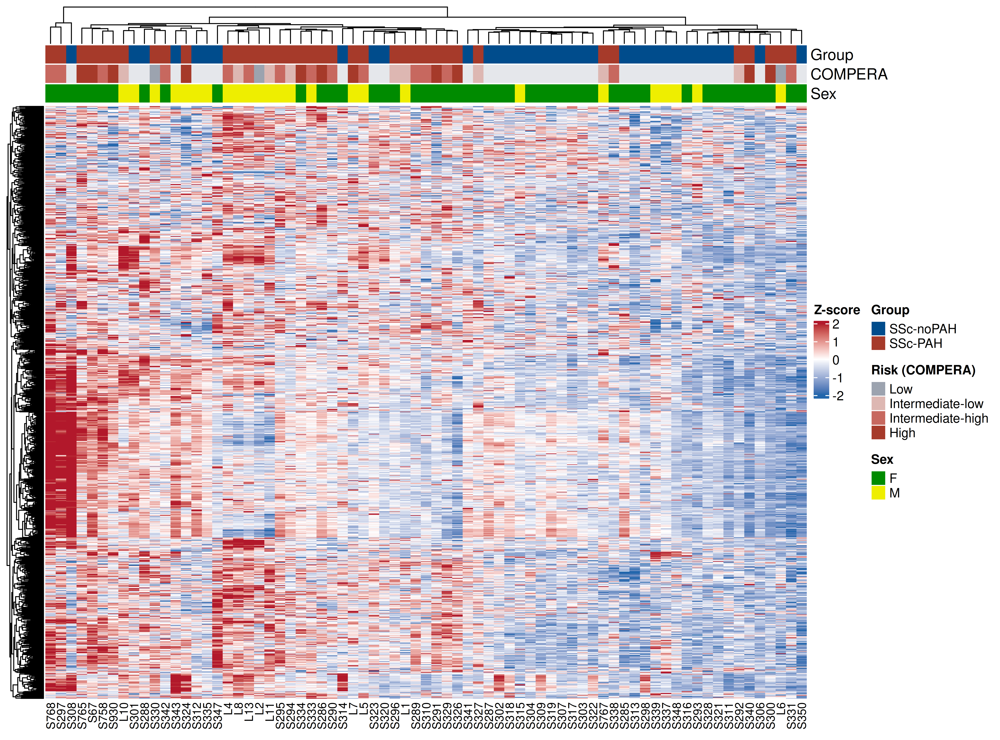
| Version | Author | Date |
|---|---|---|
| dc0c433 | GinoBonazza | 2026-05-06 |
barcodes <- colnames(data_z)
grp <- clin_z$Group[match(barcodes, clin_z$Barcode)]
cmp <- clin_z$COMPERA_4strata[match(barcodes, clin_z$Barcode)]
cmp <- factor(cmp, levels = c("low","intermediate-low","intermediate-high","high"))
sex <- clin_z$Sex[match(barcodes, clin_z$Barcode)]
# --- colors ---
cols_group <- c("SSc-noPAH"="#004C8C", "SSc-PAH"="#A63A2A")
cols_compera <- c(
"low" = "#9CA3AF",
"intermediate-low" = "#DDB7B2",
"intermediate-high" = "#C7685F",
"high" = "#A63A2A"
)
cols_sex <- c("F"="green4", "M"="yellow2")
# --- pick top 100 variable proteins (rows) ---
vars <- apply(data_z, 1, var, na.rm = TRUE)
top100 <- names(sort(vars, decreasing = TRUE))[1:100]
mat_top <- as.matrix(data_z[top100, , drop = FALSE])
# --- z-score per protein (row) ---
matz <- t(scale(t(mat_top)))
matz[is.nan(matz)] <- 0
hm_cols <- colorRamp2(c(-2, 0, 2), c("#2166AC", "white", "#B2182B"))
ha <- HeatmapAnnotation(
Group = grp,
COMPERA = cmp,
Sex = sex,
col = list(Group = cols_group, COMPERA = cols_compera, Sex = cols_sex),
na_col = "#E5E7EB",
annotation_legend_param = list(
Group = list(title = "Group"),
COMPERA = list(title = "Risk (COMPERA)"),
Sex = list(title = "Sex")
)
)
Heatmap(
matz,
name = "Z-score",
col = hm_cols,
top_annotation = ha,
show_row_names = TRUE,
row_names_gp = gpar(fontsize = 7),
show_column_names = TRUE,
column_names_gp = gpar(fontsize = 8.5),
row_title = "Top 100 variable proteins",
column_title = NULL
) |>
draw(heatmap_legend_side = "right", annotation_legend_side = "right")
| Version | Author | Date |
|---|---|---|
| dc0c433 | GinoBonazza | 2026-05-06 |
stopifnot(exists("data_p"), exists("clin_p"))
barcodes <- colnames(data_p)
grp <- clin_p$Group[match(barcodes, clin_p$Barcode)]
cmp <- clin_p$Compera_4strata[match(barcodes, clin_p$Barcode)]
cmp <- factor(cmp, levels = c("Low","Intermediate-low","Intermediate-high","High"))
sex <- clin_p$Sex[match(barcodes, clin_p$Barcode)]
# --- colors ---
cols_group <- c("SSc-noPAH"="#004C8C", "SSc-PAH"="#A63A2A")
cols_compera <- c(
"Low" = "#9CA3AF",
"Intermediate-low" = "#DDB7B2",
"Intermediate-high" = "#C7685F",
"High" = "#A63A2A"
)
cols_sex <- c("F"="green4", "M"="yellow2")
# --- pick top 100 variable proteins (rows) ---
vars <- apply(data_p, 1, var, na.rm = TRUE)
top100 <- names(sort(vars, decreasing = TRUE))[1:100]
mat_top <- as.matrix(data_p[top100, , drop = FALSE])
# --- z-score per protein (row) ---
matz <- t(scale(t(mat_top)))
matz[is.nan(matz)] <- 0
hm_cols <- colorRamp2(c(-2, 0, 2), c("#2166AC", "white", "#B2182B"))
ha <- HeatmapAnnotation(
Group = grp,
COMPERA = cmp,
Sex = sex,
col = list(Group = cols_group, COMPERA = cols_compera, Sex = cols_sex),
na_col = "#E5E7EB",
annotation_legend_param = list(
Group = list(title = "Group"),
COMPERA = list(title = "Risk (COMPERA)"),
Sex = list(title = "Sex")
)
)
Heatmap(
matz,
name = "Z-score",
col = hm_cols,
top_annotation = ha,
show_row_names = TRUE, # set FALSE if you want to hide protein names
row_names_gp = gpar(fontsize = 7),
show_column_names = TRUE,
column_names_gp = gpar(fontsize = 8.5),
row_title = "Top 100 variable proteins",
column_title = NULL
) |>
draw(heatmap_legend_side = "right", annotation_legend_side = "right")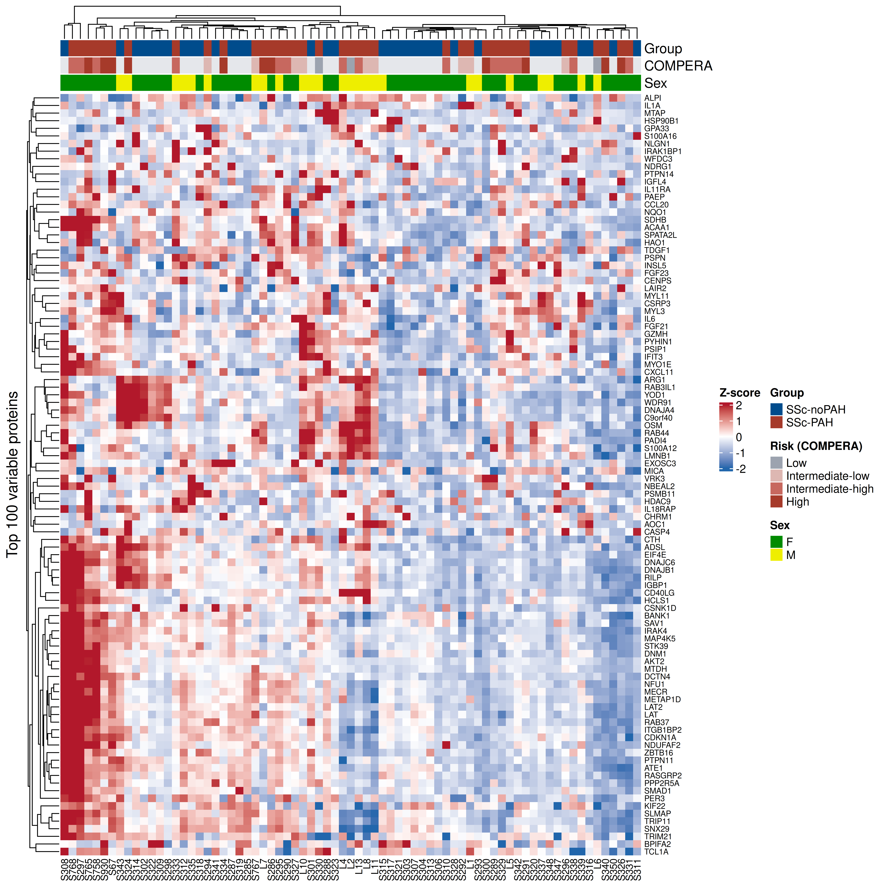
| Version | Author | Date |
|---|---|---|
| dc0c433 | GinoBonazza | 2026-05-06 |
# PCA (samples as rows)
pca <- prcomp(t(as.matrix(data_z)), scale. = TRUE)
pvar <- (pca$sdev^2) / sum(pca$sdev^2) * 100
df <- data.frame(
PC1 = pca$x[, 1],
PC2 = pca$x[, 2],
Group = clin_z$Group[match(rownames(pca$x), clin_z$Barcode)]
)
cols_group <- c("SSc-noPAH" = "#004C8C", "SSc-PAH" = "#A63A2A")
ggplot(df, aes(PC1, PC2, color = Group)) +
stat_ellipse(aes(fill = Group), type = "norm", level = 0.95,
geom = "polygon", alpha = 0.10, color = NA) +
stat_ellipse(type = "norm", level = 0.95, linewidth = 0.3) +
geom_point(size = 3) +
scale_color_manual(values = cols_group) +
scale_fill_manual(values = cols_group) +
labs(
x = paste0("PC1 (", round(pvar[1], 1), "%)"),
y = paste0("PC2 (", round(pvar[2], 1), "%)")
) +
theme_minimal()
| Version | Author | Date |
|---|---|---|
| dc0c433 | GinoBonazza | 2026-05-06 |
# --- subset to SSc-PAH only ---
keep <- clin_z$Group == "SSc-PAH"
barcodes_keep <- clin_z$Barcode[keep]
data_sub <- data_z[, colnames(data_z) %in% barcodes_keep, drop = FALSE]
clin_sub <- clin_z[match(colnames(data_sub), clin_z$Barcode), ]
# PCA
pca <- prcomp(t(as.matrix(data_sub)), scale. = TRUE)
pvar <- (pca$sdev^2) / sum(pca$sdev^2) * 100
df <- data.frame(
PC1 = pca$x[, 1],
PC2 = pca$x[, 2],
COMPERA = factor(
clin_sub$COMPERA_4strata,
levels = c("low","intermediate-low","intermediate-high","high")
)
)
cols_compera_z <- c(
"low" = "#9CA3AF",
"intermediate-low" = "#DDB7B2",
"intermediate-high" = "#C7685F",
"high" = "#A63A2A"
)
ggplot(df, aes(PC1, PC2, color = COMPERA)) +
stat_ellipse(aes(fill = COMPERA), type = "norm", level = 0.90,
geom = "polygon", alpha = 0.10, color = NA) +
stat_ellipse(type = "norm", level = 0.90, linewidth = 0.3) +
geom_point(size = 3) +
scale_color_manual(values = cols_compera_z, name = "Risk (COMPERA)") +
scale_fill_manual(values = cols_compera_z, name = "Risk (COMPERA)") +
labs(
x = paste0("PC1 (", round(pvar[1], 1), "%)"),
y = paste0("PC2 (", round(pvar[2], 1), "%)")
) +
theme_minimal() +
guides(fill = "none")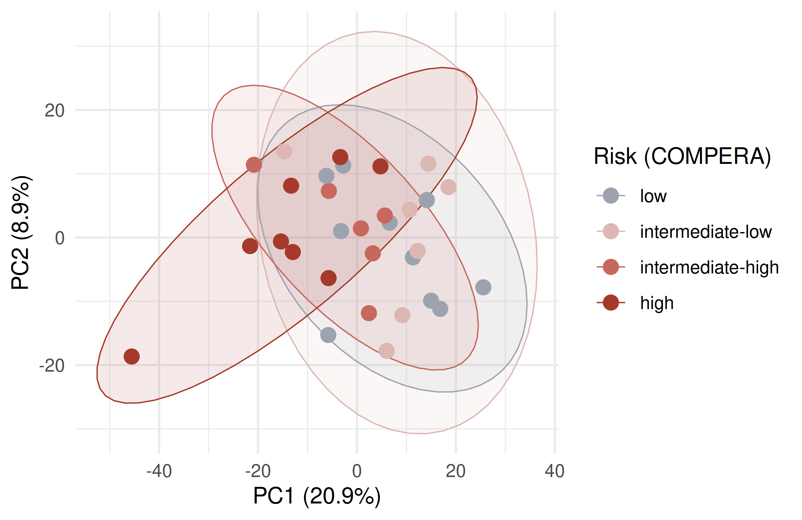
| Version | Author | Date |
|---|---|---|
| dc0c433 | GinoBonazza | 2026-05-06 |
pca <- prcomp(t(as.matrix(data_p)), scale. = TRUE)
pvar <- (pca$sdev^2) / sum(pca$sdev^2) * 100
df <- data.frame(
PC1 = pca$x[, 1],
PC2 = pca$x[, 2],
Group = clin_p$Group[match(rownames(pca$x), clin_p$Barcode)]
)
cols_group <- c("SSc-noPAH" = "#004C8C", "SSc-PAH" = "#A63A2A")
ggplot(df, aes(PC1, PC2, color = Group)) +
stat_ellipse(aes(fill = Group), type = "norm", level = 0.95,
geom = "polygon", alpha = 0.10, color = NA) +
stat_ellipse(type = "norm", level = 0.95, linewidth = 0.3) +
geom_point(size = 3) +
scale_color_manual(values = cols_group) +
scale_fill_manual(values = cols_group) +
labs(
x = paste0("PC1 (", round(pvar[1], 1), "%)"),
y = paste0("PC2 (", round(pvar[2], 1), "%)")
) +
theme_minimal()
| Version | Author | Date |
|---|---|---|
| dc0c433 | GinoBonazza | 2026-05-06 |
# --- subset to SSc-PAH only ---
keep <- clin_p$Group == "SSc-PAH"
barcodes_keep <- clin_p$Barcode[keep]
data_sub <- data_p[, colnames(data_p) %in% barcodes_keep, drop = FALSE]
clin_sub <- clin_p[match(colnames(data_sub), clin_p$Barcode), ]
# PCA
pca <- prcomp(t(as.matrix(data_sub)), scale. = TRUE)
pvar <- (pca$sdev^2) / sum(pca$sdev^2) * 100
df <- data.frame(
PC1 = pca$x[, 1],
PC2 = pca$x[, 2],
COMPERA = factor(
clin_sub$Compera_4strata,
levels = c("Low","Intermediate-low","Intermediate-high","High")
)
)
cols_compera_p <- c(
"Low" = "#9CA3AF",
"Intermediate-low" = "#DDB7B2",
"Intermediate-high" = "#C7685F",
"High" = "#A63A2A"
)
ggplot(df, aes(PC1, PC2, color = COMPERA)) +
stat_ellipse(aes(fill = COMPERA), type = "norm", level = 0.90,
geom = "polygon", alpha = 0.10, color = NA) +
stat_ellipse(type = "norm", level = 0.90, linewidth = 0.3) +
geom_point(size = 3) +
scale_color_manual(values = cols_compera_p, name = "Risk (COMPERA)") +
scale_fill_manual(values = cols_compera_p, name = "Risk (COMPERA)") +
labs(
x = paste0("PC1 (", round(pvar[1], 1), "%)"),
y = paste0("PC2 (", round(pvar[2], 1), "%)")
) +
theme_minimal() +
guides(fill = "none")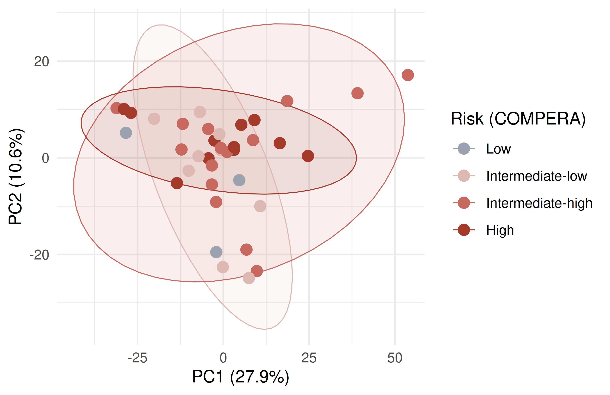
| Version | Author | Date |
|---|---|---|
| dc0c433 | GinoBonazza | 2026-05-06 |
Variance partitioning
# expression: proteins x samples
expr <- as.matrix(data_z)
# metadata aligned to columns of expr
meta <- clin_z |>
dplyr::distinct(Barcode, .keep_all = TRUE) |>
dplyr::filter(Barcode %in% colnames(expr)) |>
tibble::column_to_rownames("Barcode")
expr <- expr[, rownames(meta), drop = FALSE]
# variables for this model
vars <- c("Group", "Age", "Sex", "Sample_age_days")
meta <- meta |>
dplyr::mutate(
Group = factor(Group),
Sex = factor(Sex)
)
# keep complete cases for model variables
n_before <- nrow(meta)
meta <- meta[complete.cases(meta[, vars]), , drop = FALSE]
expr <- expr[, rownames(meta), drop = FALSE]
n_after <- nrow(meta)
message("Zurich (all): ", n_after, " / ", n_before, " samples used")
form <- ~ Group + Age + Sex + Sample_age_days
vp <- fitExtractVarPartModel(expr, form, meta)
colnames(vp) <- gsub("`", "", colnames(vp))
# quick summaries
vp_mean <- sort(colMeans(vp), decreasing = TRUE)
df <- data.frame(variable = names(vp_mean), value = vp_mean)
ggplot(df, aes(x = reorder(variable, -value), y = value)) +
geom_col() +
labs(x = NULL, y = "Mean fraction of variance explained",
title = "Zurich: all samples") +
theme_classic() +
theme(axis.text.x = element_text(angle = 45, hjust = 1))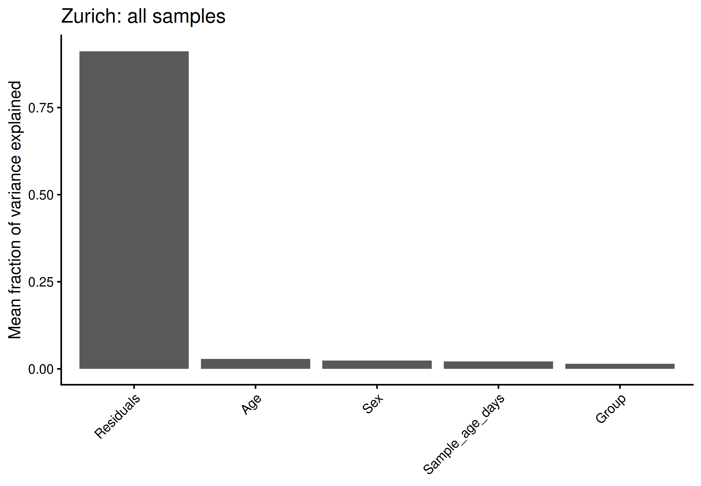
| Version | Author | Date |
|---|---|---|
| dc0c433 | GinoBonazza | 2026-05-06 |
plotVarPart(vp) +
theme_classic() +
theme(axis.text.x = element_text(angle = 45, hjust = 1))
| Version | Author | Date |
|---|---|---|
| dc0c433 | GinoBonazza | 2026-05-06 |
expr <- as.matrix(data_z)
meta <- clin_z |>
dplyr::distinct(Barcode, .keep_all = TRUE) |>
dplyr::filter(Barcode %in% colnames(expr)) |>
dplyr::filter(Group == "SSc-PAH") |>
tibble::column_to_rownames("Barcode")
expr <- expr[, rownames(meta), drop = FALSE]
# requested covariates
vars <- c("TAPSE_sPAP", "Age", "Sex")
meta <- meta |>
dplyr::mutate(
TAPSE_sPAP = as.numeric(TAPSE_sPAP),
Age = as.numeric(Age),
Sex = factor(Sex)
)
n_before <- nrow(meta)
meta <- meta[complete.cases(meta[, vars]), , drop = FALSE]
expr <- expr[, rownames(meta), drop = FALSE]
n_after <- nrow(meta)
message("SSc-PAH only: ", n_after, " / ", n_before, " samples used")
form <- ~ TAPSE_sPAP + Age + Sex
vp <- fitExtractVarPartModel(expr, form, meta)
colnames(vp) <- gsub("`", "", colnames(vp))
vp_mean <- sort(colMeans(vp), decreasing = TRUE)
df <- data.frame(variable = names(vp_mean), value = vp_mean)
ggplot(df, aes(x = reorder(variable, -value), y = value)) +
geom_col() +
labs(x = NULL, y = "Mean fraction of variance explained",
title = "Zurich: SSc-PAH only") +
theme_classic() +
theme(axis.text.x = element_text(angle = 45, hjust = 1))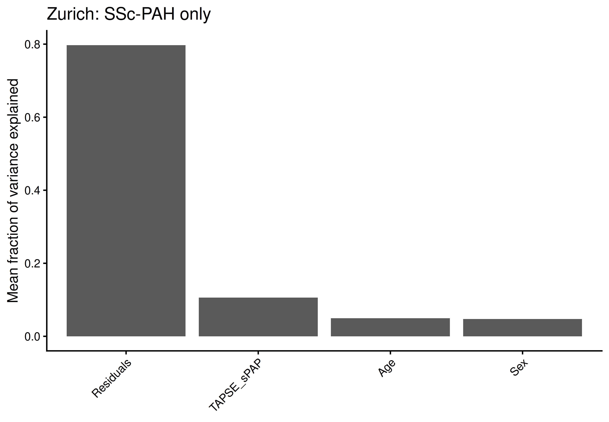
| Version | Author | Date |
|---|---|---|
| dc0c433 | GinoBonazza | 2026-05-06 |
plotVarPart(vp) +
theme_classic() +
theme(axis.text.x = element_text(angle = 45, hjust = 1))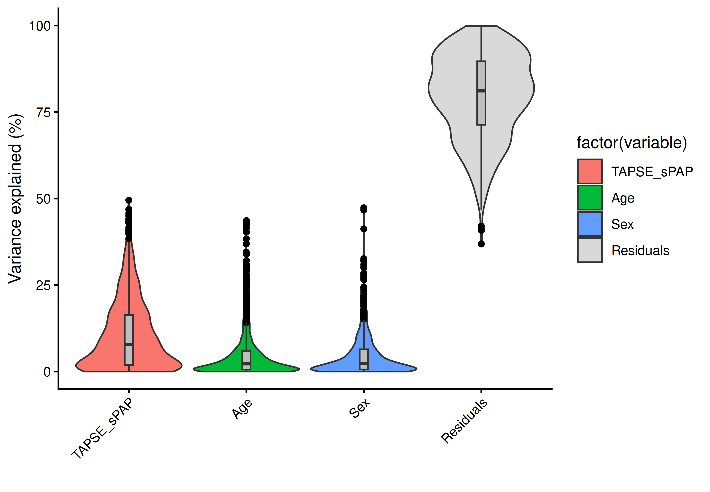
| Version | Author | Date |
|---|---|---|
| dc0c433 | GinoBonazza | 2026-05-06 |
library(variancePartition)
expr <- as.matrix(data_p)
meta <- clin_p |>
dplyr::distinct(Barcode, .keep_all = TRUE) |>
dplyr::filter(Barcode %in% colnames(expr)) |>
tibble::column_to_rownames("Barcode")
expr <- expr[, rownames(meta), drop = FALSE]
# requested covariates
vars <- c("Group", "Age", "Sex", "Sample_age")
meta <- meta |>
dplyr::mutate(
Group = factor(Group),
Sex = factor(Sex),
)
n_before <- nrow(meta)
meta <- meta[complete.cases(meta[, vars]), , drop = FALSE]
expr <- expr[, rownames(meta), drop = FALSE]
n_after <- nrow(meta)
message("Poland (all): ", n_after, " / ", n_before, " samples used")
form <- ~ Group + Age + Sex + Sample_age
vp <- fitExtractVarPartModel(expr, form, meta)
colnames(vp) <- gsub("`", "", colnames(vp))
vp_mean <- sort(colMeans(vp), decreasing = TRUE)
df <- data.frame(variable = names(vp_mean), value = vp_mean)
ggplot(df, aes(x = reorder(variable, -value), y = value)) +
geom_col() +
labs(x = NULL, y = "Mean fraction of variance explained",
title = "Poland: all samples") +
theme_classic() +
theme(axis.text.x = element_text(angle = 45, hjust = 1))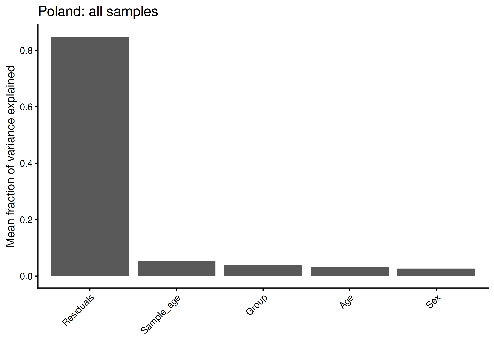
| Version | Author | Date |
|---|---|---|
| dc0c433 | GinoBonazza | 2026-05-06 |
plotVarPart(vp) +
theme_classic() +
theme(axis.text.x = element_text(angle = 45, hjust = 1))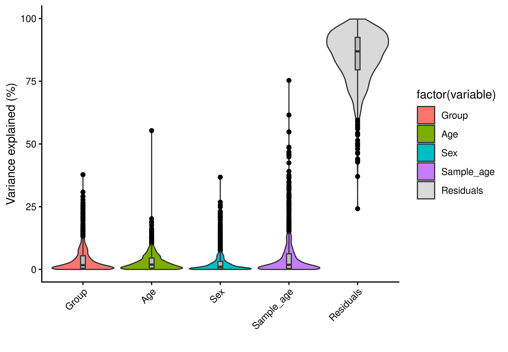
| Version | Author | Date |
|---|---|---|
| dc0c433 | GinoBonazza | 2026-05-06 |
library(variancePartition)
expr <- as.matrix(data_p)
meta <- clin_p |>
dplyr::distinct(Barcode, .keep_all = TRUE) |>
dplyr::filter(Barcode %in% colnames(expr)) |>
dplyr::filter(Group == "SSc-PAH") |>
tibble::column_to_rownames("Barcode")
expr <- expr[, rownames(meta), drop = FALSE]
# requested covariates
vars <- c("TAPSE_sPAP", "Age", "Sex")
meta <- meta |>
dplyr::mutate(
TAPSE_sPAP = as.numeric(TAPSE_sPAP),
Age = as.numeric(Age),
Sex = factor(Sex)
)
n_before <- nrow(meta)
meta <- meta[complete.cases(meta[, vars]), , drop = FALSE]
expr <- expr[, rownames(meta), drop = FALSE]
n_after <- nrow(meta)
message("SSc-PAH only: ", n_after, " / ", n_before, " samples used")
form <- ~ TAPSE_sPAP + Age + Sex
vp <- fitExtractVarPartModel(expr, form, meta)
colnames(vp) <- gsub("`", "", colnames(vp))
vp_mean <- sort(colMeans(vp), decreasing = TRUE)
df <- data.frame(variable = names(vp_mean), value = vp_mean)
ggplot(df, aes(x = reorder(variable, -value), y = value)) +
geom_col() +
labs(x = NULL, y = "Mean fraction of variance explained",
title = "Poland: SSc-PAH only") +
theme_classic() +
theme(axis.text.x = element_text(angle = 45, hjust = 1))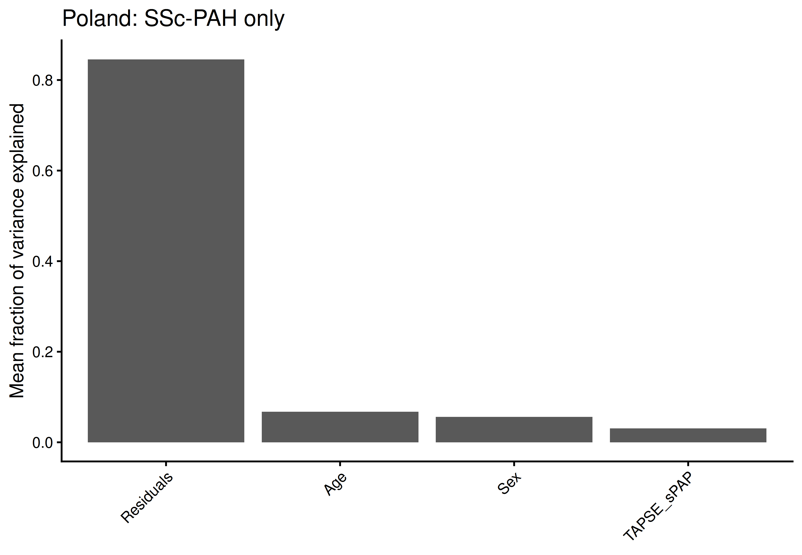
| Version | Author | Date |
|---|---|---|
| dc0c433 | GinoBonazza | 2026-05-06 |
plotVarPart(vp) +
theme_classic() +
theme(axis.text.x = element_text(angle = 45, hjust = 1))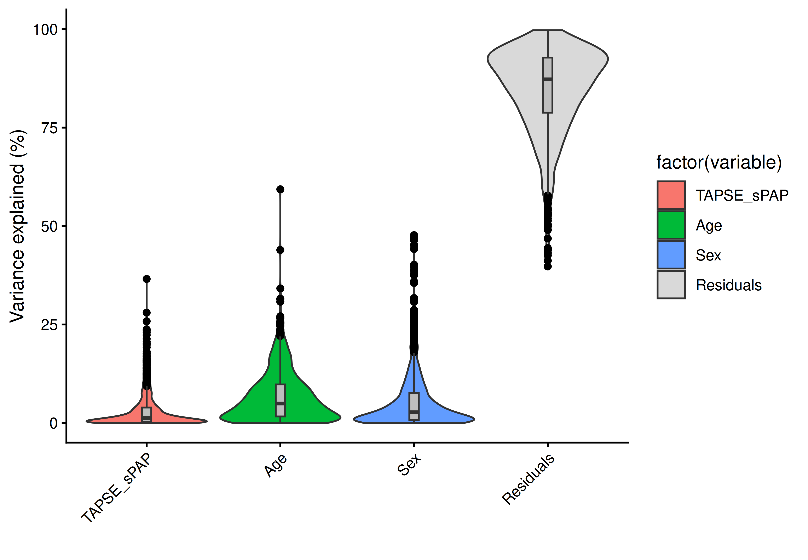
| Version | Author | Date |
|---|---|---|
| dc0c433 | GinoBonazza | 2026-05-06 |
Differential expression analysis
# --- prepare metadata aligned to expression ---
meta_z_de <- clin_z %>%
dplyr::distinct(Barcode, .keep_all = TRUE) %>%
dplyr::filter(Barcode %in% colnames(data_z)) %>%
dplyr::mutate(
Group = factor(Group, levels = c("SSc-noPAH", "SSc-PAH")),
Sex = factor(Sex),
Age = as.numeric(Age)
) %>%
tibble::column_to_rownames("Barcode")
# keep only complete cases for model variables
meta_z_de <- meta_z_de[complete.cases(meta_z_de[, c("Group", "Age", "Sex")]), , drop = FALSE]
expr_z_de <- as.matrix(data_z[, rownames(meta_z_de), drop = FALSE])
# --- design: Group + Age + Sex ---
design_z <- model.matrix(~ Group + Age + Sex, data = meta_z_de)
# rescale numeric covariate(s) like in your code
if ("Age" %in% colnames(design_z)) design_z[, "Age"] <- rescale(design_z[, "Age"])
# --- fit limma ---
fit_z <- lmFit(expr_z_de, design_z)
fit_z <- eBayes(fit_z)
# coefficient name for GroupSSc-PAH (vs reference SSc-noPAH)
coef_group_z <- grep("^Group", colnames(design_z), value = TRUE)[1]
DE_z <- topTable(fit_z, coef = coef_group_z, number = Inf, adjust.method = "BH")
DE_z$Gene <- rownames(DE_z)
DE_z_signif <- DE_z %>%
dplyr::filter(adj.P.Val < 0.1, abs(logFC) > 0.5) %>%
dplyr::arrange(P.Value)
# write outputs (same style as your loop, but single comparison)
write.csv(DE_z,
file = here::here(output_dir_data, "DE_Results_Group_SScPAH_vs_noPAH_Zurich.csv"),
quote = FALSE, row.names = FALSE)
write.csv(DE_z_signif,
file = here::here(output_dir_data, "DE_Significant_Group_SScPAH_vs_noPAH_Zurich.csv"),
quote = FALSE, row.names = FALSE)
# store for volcano chunk
n_z <- ncol(expr_z_de)meta_p_de <- clin_p %>%
dplyr::distinct(Barcode, .keep_all = TRUE) %>%
dplyr::filter(Barcode %in% colnames(data_p)) %>%
dplyr::mutate(
Group = factor(Group, levels = c("SSc-noPAH", "SSc-PAH")),
Sex = factor(Sex),
Age = as.numeric(Age)
) %>%
tibble::column_to_rownames("Barcode")
meta_p_de <- meta_p_de[complete.cases(meta_p_de[, c("Group", "Age", "Sex")]), , drop = FALSE]
expr_p_de <- as.matrix(data_p[, rownames(meta_p_de), drop = FALSE])
design_p <- model.matrix(~ Group + Age + Sex, data = meta_p_de)
if ("Age" %in% colnames(design_p)) design_p[, "Age"] <- rescale(design_p[, "Age"])
fit_p <- lmFit(expr_p_de, design_p)
fit_p <- eBayes(fit_p)
coef_group_p <- grep("^Group", colnames(design_p), value = TRUE)[1]
DE_p <- topTable(fit_p, coef = coef_group_p, number = Inf, adjust.method = "BH")
DE_p$Gene <- rownames(DE_p)
DE_p_signif <- DE_p %>%
dplyr::filter(adj.P.Val < 0.1, abs(logFC) > 0.5) %>%
dplyr::arrange(P.Value)
write.csv(DE_p,
file = here::here(output_dir_data, "DE_Results_Group_SScPAH_vs_noPAH_Poland.csv"),
quote = FALSE, row.names = FALSE)
write.csv(DE_p_signif,
file = here::here(output_dir_data, "DE_Significant_Group_SScPAH_vs_noPAH_Poland.csv"),
quote = FALSE, row.names = FALSE)
n_p <- ncol(expr_p_de)keyvals <- rep("grey", nrow(DE_z))
names(keyvals) <- rep("Not significant", nrow(DE_z))
keyvals[DE_z$logFC > 0.5 & DE_z$adj.P.Val < 0.1] <- "#A63A2A"
names(keyvals)[keyvals == "#A63A2A"] <- "Increased"
keyvals[DE_z$logFC < -0.5 & DE_z$adj.P.Val < 0.1] <- "#004C8C"
names(keyvals)[keyvals == "#004C8C"] <- "Decreased"
volcano_z <- EnhancedVolcano(
DE_z,
lab = rownames(DE_z),
x = "logFC",
y = "adj.P.Val",
labSize = 0,
titleLabSize = 13,
subtitleLabSize = 14,
axisLabSize = 12,
captionLabSize = 0,
pointSize = 1,
FCcutoff = 0.5,
pCutoff = 0.1,
ylim = c(0, 4),
colCustom = keyvals,
colAlpha = 1,
drawConnectors = FALSE,
subtitle = NULL,
title = paste0("Zurich cohort\nSSc-PAH vs SSc-noPAH\nn = ", n_z)
) +
theme(legend.position = "none")
volcano_z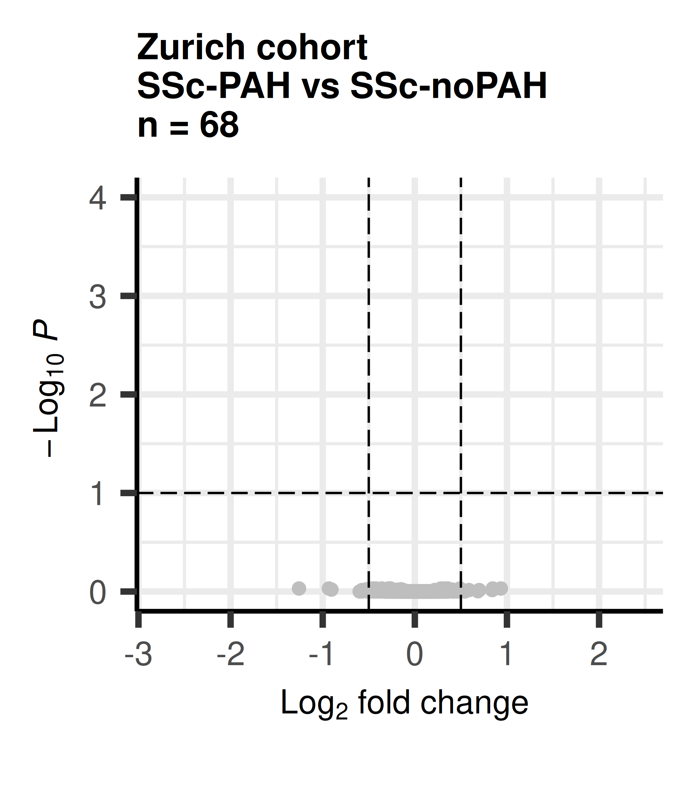
| Version | Author | Date |
|---|---|---|
| dc0c433 | GinoBonazza | 2026-05-06 |
keyvals <- rep("grey", nrow(DE_p))
names(keyvals) <- rep("Not significant", nrow(DE_p))
keyvals[DE_p$logFC > 0.5 & DE_p$adj.P.Val < 0.1] <- "#A63A2A"
names(keyvals)[keyvals == "#A63A2A"] <- "Increased"
keyvals[DE_p$logFC < -0.5 & DE_p$adj.P.Val < 0.1] <- "#004C8C"
names(keyvals)[keyvals == "#004C8C"] <- "Decreased"
volcano_p <- EnhancedVolcano(
DE_p,
lab = rownames(DE_p),
x = "logFC",
y = "adj.P.Val",
labSize = 0,
titleLabSize = 13,
subtitleLabSize = 14,
axisLabSize = 12,
captionLabSize = 0,
pointSize = 1,
FCcutoff = 0.5,
pCutoff = 0.1,
ylim = c(0, 4),
colCustom = keyvals,
colAlpha = 1,
drawConnectors = FALSE,
subtitle = NULL,
title = paste0("Poland cohort\nSSc-PAH vs SSc-noPAH\nn = ", n_p)
) +
theme(legend.position = "none")
volcano_p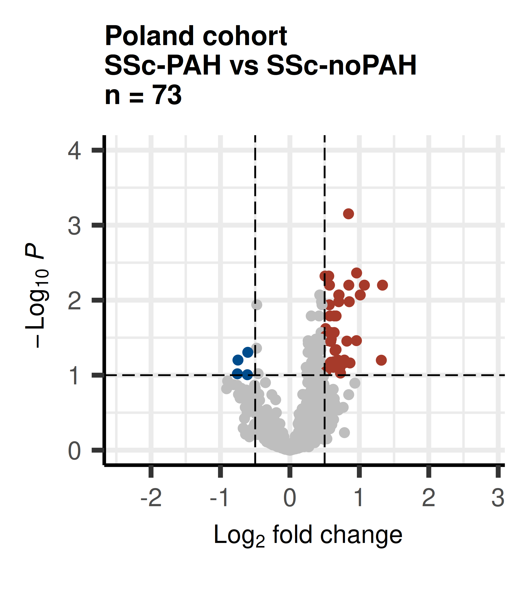
| Version | Author | Date |
|---|---|---|
| dc0c433 | GinoBonazza | 2026-05-06 |
meta_z_de <- clin_z %>%
dplyr::distinct(Barcode, .keep_all = TRUE) %>%
dplyr::filter(Barcode %in% colnames(data_z)) %>%
dplyr::filter(Group == "SSc-PAH") %>%
dplyr::mutate(
Sex = factor(Sex),
Age = as.numeric(Age),
TAPSE_sPAP = as.numeric(TAPSE_sPAP)
) %>%
tibble::column_to_rownames("Barcode")
meta_z_de <- meta_z_de[
complete.cases(meta_z_de[, c("TAPSE_sPAP", "Age", "Sex")]),
, drop = FALSE
]
expr_z_de <- as.matrix(data_z[, rownames(meta_z_de), drop = FALSE])
design_z <- model.matrix(~ TAPSE_sPAP + Age + Sex, data = meta_z_de)
design_z[, "TAPSE_sPAP"] <- rescale(design_z[, "TAPSE_sPAP"])
design_z[, "Age"] <- rescale(design_z[, "Age"])
fit_z <- lmFit(expr_z_de, design_z)
fit_z <- eBayes(fit_z)
DE_z_TAPSE <- topTable(
fit_z,
coef = "TAPSE_sPAP",
number = Inf,
adjust.method = "BH"
)
DE_z_TAPSE$Gene <- rownames(DE_z_TAPSE)
DE_z_TAPSE_signif <- DE_z_TAPSE %>%
dplyr::filter(adj.P.Val < 0.1, abs(logFC) > 0.5) %>%
dplyr::arrange(P.Value)
write.csv(
DE_z_TAPSE,
file = here::here(output_dir_data, "DE_TAPSE_sPAP_SScPAH_Zurich.csv"),
quote = FALSE, row.names = FALSE
)
write.csv(
DE_z_TAPSE_signif,
file = here::here(output_dir_data, "DE_TAPSE_sPAP_SScPAH_Zurich_significant.csv"),
quote = FALSE, row.names = FALSE
)
n_z_TAPSE <- ncol(expr_z_de)meta_p_de <- clin_p %>%
dplyr::distinct(Barcode, .keep_all = TRUE) %>%
dplyr::filter(Barcode %in% colnames(data_p)) %>%
dplyr::filter(Group == "SSc-PAH") %>%
dplyr::mutate(
Sex = factor(Sex),
Age = as.numeric(Age),
TAPSE_sPAP = as.numeric(TAPSE_sPAP)
) %>%
tibble::column_to_rownames("Barcode")
meta_p_de <- meta_p_de[
complete.cases(meta_p_de[, c("TAPSE_sPAP", "Age", "Sex")]),
, drop = FALSE
]
expr_p_de <- as.matrix(data_p[, rownames(meta_p_de), drop = FALSE])
design_p <- model.matrix(~ TAPSE_sPAP + Age + Sex, data = meta_p_de)
design_p[, "TAPSE_sPAP"] <- rescale(design_p[, "TAPSE_sPAP"])
design_p[, "Age"] <- rescale(design_p[, "Age"])
fit_p <- lmFit(expr_p_de, design_p)
fit_p <- eBayes(fit_p)
DE_p_TAPSE <- topTable(
fit_p,
coef = "TAPSE_sPAP",
number = Inf,
adjust.method = "BH"
)
DE_p_TAPSE$Gene <- rownames(DE_p_TAPSE)
DE_p_TAPSE_signif <- DE_p_TAPSE %>%
dplyr::filter(adj.P.Val < 0.1, abs(logFC) > 0.5) %>%
dplyr::arrange(P.Value)
write.csv(
DE_p_TAPSE,
file = here::here(output_dir_data, "DE_TAPSE_sPAP_SScPAH_Poland.csv"),
quote = FALSE, row.names = FALSE
)
write.csv(
DE_p_TAPSE_signif,
file = here::here(output_dir_data, "DE_TAPSE_sPAP_SScPAH_Poland_significant.csv"),
quote = FALSE, row.names = FALSE
)
n_p_TAPSE <- ncol(expr_p_de)keyvals <- rep("grey", nrow(DE_z_TAPSE))
names(keyvals) <- rep("Not significant", nrow(DE_z_TAPSE))
keyvals[DE_z_TAPSE$logFC > 0.5 & DE_z_TAPSE$adj.P.Val < 0.1] <- "#A63A2A"
names(keyvals)[keyvals == "#A63A2A"] <- "Increased"
keyvals[DE_z_TAPSE$logFC < -0.5 & DE_z_TAPSE$adj.P.Val < 0.1] <- "#004C8C"
names(keyvals)[keyvals == "#004C8C"] <- "Decreased"
volcano_z_TAPSE <- EnhancedVolcano(
DE_z_TAPSE,
lab = rownames(DE_z_TAPSE),
x = "logFC",
y = "adj.P.Val",
labSize = 0,
titleLabSize = 13,
subtitleLabSize = 14,
axisLabSize = 12,
captionLabSize = 0,
pointSize = 1,
FCcutoff = 0.5,
pCutoff = 0.1,
ylim = c(0, 4),
colCustom = keyvals,
colAlpha = 1,
drawConnectors = FALSE,
subtitle = NULL,
title = paste0("Zurich cohort SSc-PAH\nTAPSE_sPAP\nn = ", n_z_TAPSE)
) +
theme(legend.position = "none")
volcano_z_TAPSE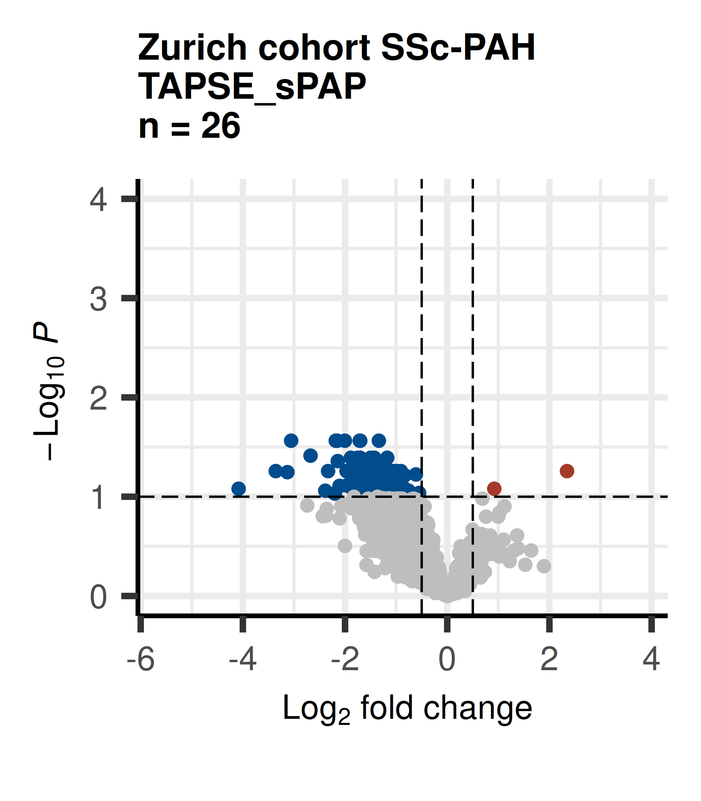
| Version | Author | Date |
|---|---|---|
| dc0c433 | GinoBonazza | 2026-05-06 |
keyvals <- rep("grey", nrow(DE_p_TAPSE))
names(keyvals) <- rep("Not significant", nrow(DE_p_TAPSE))
keyvals[DE_p_TAPSE$logFC > 0.5 & DE_p_TAPSE$adj.P.Val < 0.1] <- "#A63A2A"
names(keyvals)[keyvals == "#A63A2A"] <- "Increased"
keyvals[DE_p_TAPSE$logFC < -0.5 & DE_p_TAPSE$adj.P.Val < 0.1] <- "#004C8C"
names(keyvals)[keyvals == "#004C8C"] <- "Decreased"
volcano_p_TAPSE <- EnhancedVolcano(
DE_p_TAPSE,
lab = rownames(DE_p_TAPSE),
x = "logFC",
y = "adj.P.Val",
labSize = 0,
titleLabSize = 13,
subtitleLabSize = 14,
axisLabSize = 12,
captionLabSize = 0,
pointSize = 1,
FCcutoff = 0.5,
pCutoff = 0.1,
ylim = c(0, 4),
colCustom = keyvals,
colAlpha = 1,
drawConnectors = FALSE,
subtitle = NULL,
title = paste0("Poland cohort SSc-PAH\nTAPSE_sPAP\nn = ", n_p_TAPSE)
) +
theme(legend.position = "none")
volcano_p_TAPSE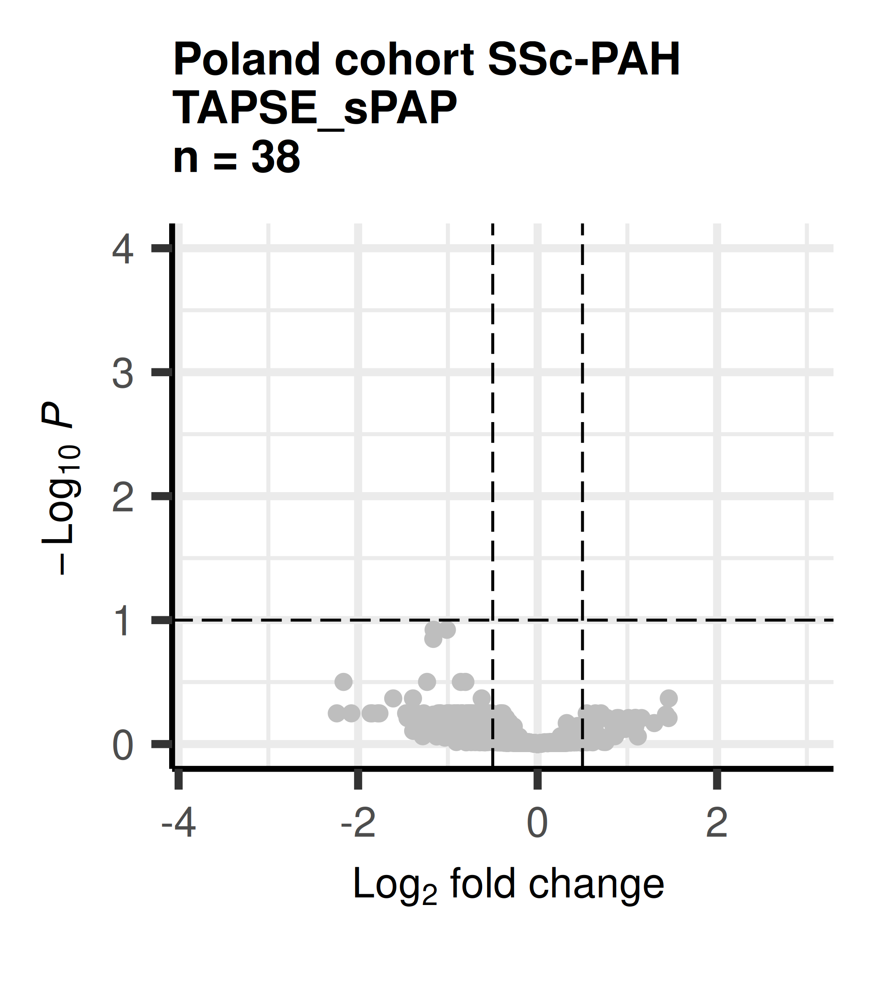
| Version | Author | Date |
|---|---|---|
| dc0c433 | GinoBonazza | 2026-05-06 |
meta_z_bin <- clin_z %>%
dplyr::distinct(Barcode, .keep_all = TRUE) %>%
dplyr::filter(Barcode %in% colnames(data_z)) %>%
dplyr::filter(Group == "SSc-PAH") %>%
dplyr::mutate(
TAPSE_sPAP = as.numeric(TAPSE_sPAP),
TAPSE_group = ifelse(TAPSE_sPAP < 0.32, "Low", "High"),
TAPSE_group = factor(TAPSE_group, levels = c("High", "Low")),
Sex = factor(Sex),
Age = as.numeric(Age)
) %>%
tibble::column_to_rownames("Barcode")
meta_z_bin <- meta_z_bin[
complete.cases(meta_z_bin[, c("TAPSE_group", "Age", "Sex")]),
, drop = FALSE
]
expr_z_bin <- as.matrix(data_z[, rownames(meta_z_bin), drop = FALSE])
design_z_bin <- model.matrix(~ TAPSE_group + Age + Sex, data = meta_z_bin)
design_z_bin[, "Age"] <- rescale(design_z_bin[, "Age"])
fit_z_bin <- lmFit(expr_z_bin, design_z_bin)
fit_z_bin <- eBayes(fit_z_bin)
coef_bin_z <- grep("^TAPSE_group", colnames(design_z_bin), value = TRUE)[1]
DE_z_bin <- topTable(fit_z_bin, coef = coef_bin_z, number = Inf, adjust.method = "BH")
DE_z_bin$Gene <- rownames(DE_z_bin)
DE_z_bin_signif <- DE_z_bin %>%
dplyr::filter(adj.P.Val < 0.1, abs(logFC) > 0.5) %>%
dplyr::arrange(P.Value)
n_z_bin <- ncol(expr_z_bin)keyvals <- rep("grey", nrow(DE_z_bin))
names(keyvals) <- rep("Not significant", nrow(DE_z_bin))
keyvals[DE_z_bin$logFC > 0.5 & DE_z_bin$adj.P.Val < 0.1] <- "#A63A2A"
names(keyvals)[keyvals == "#A63A2A"] <- "Higher in Low TAPSE_sPAP"
keyvals[DE_z_bin$logFC < -0.5 & DE_z_bin$adj.P.Val < 0.1] <- "#004C8C"
names(keyvals)[keyvals == "#004C8C"] <- "Higher in High TAPSE_sPAP"
volcano_z_bin <- EnhancedVolcano(
DE_z_bin,
lab = rownames(DE_z_bin),
x = "logFC",
y = "adj.P.Val",
labSize = 0,
titleLabSize = 13,
subtitleLabSize = 14,
axisLabSize = 12,
captionLabSize = 0,
pointSize = 1,
FCcutoff = 0.5,
pCutoff = 0.1,
ylim = c(0, 4),
colCustom = keyvals,
colAlpha = 1,
drawConnectors = FALSE,
subtitle = NULL,
title = paste0("Zurich cohort SSc-PAH\nTAPSE/sPAP<0.32 vs ≥0.32\nn = ", n_z_bin)
) +
theme(legend.position = "none")
volcano_z_bin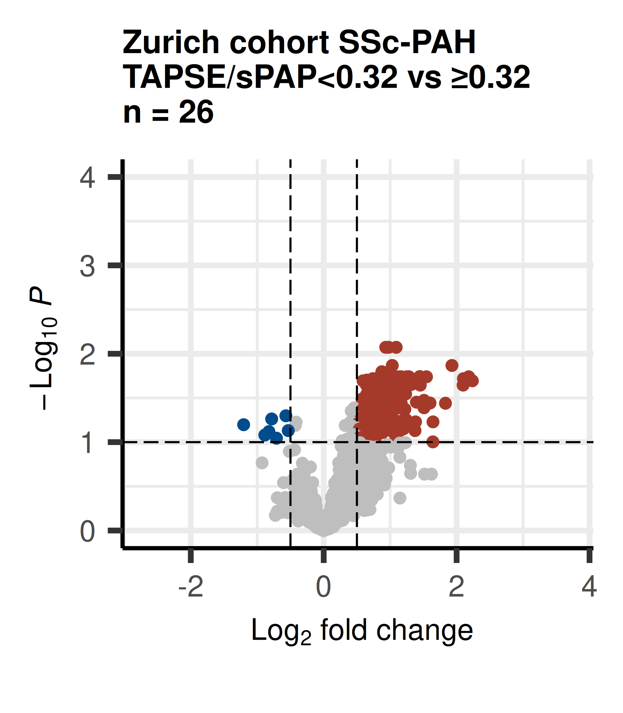
| Version | Author | Date |
|---|---|---|
| dc0c433 | GinoBonazza | 2026-05-06 |
meta_p_bin <- clin_p %>%
dplyr::distinct(Barcode, .keep_all = TRUE) %>%
dplyr::filter(Barcode %in% colnames(data_p)) %>%
dplyr::filter(Group == "SSc-PAH") %>%
dplyr::mutate(
TAPSE_sPAP = as.numeric(TAPSE_sPAP),
TAPSE_group = ifelse(TAPSE_sPAP < 0.32, "Low", "High"),
TAPSE_group = factor(TAPSE_group, levels = c("High", "Low")),
Sex = factor(Sex),
Age = as.numeric(Age)
) %>%
tibble::column_to_rownames("Barcode")
meta_p_bin <- meta_p_bin[
complete.cases(meta_p_bin[, c("TAPSE_group", "Age", "Sex")]),
, drop = FALSE
]
expr_p_bin <- as.matrix(data_p[, rownames(meta_p_bin), drop = FALSE])
design_p_bin <- model.matrix(~ TAPSE_group + Age + Sex, data = meta_p_bin)
design_p_bin[, "Age"] <- rescale(design_p_bin[, "Age"])
fit_p_bin <- lmFit(expr_p_bin, design_p_bin)
fit_p_bin <- eBayes(fit_p_bin)
coef_bin_p <- grep("^TAPSE_group", colnames(design_p_bin), value = TRUE)[1]
DE_p_bin <- topTable(fit_p_bin, coef = coef_bin_p, number = Inf, adjust.method = "BH")
DE_p_bin$Gene <- rownames(DE_p_bin)
DE_p_bin_signif <- DE_p_bin %>%
dplyr::filter(adj.P.Val < 0.1, abs(logFC) > 0.5) %>%
dplyr::arrange(P.Value)
n_p_bin <- ncol(expr_p_bin)keyvals <- rep("grey", nrow(DE_p_bin))
names(keyvals) <- rep("Not significant", nrow(DE_p_bin))
keyvals[DE_p_bin$logFC > 0.5 & DE_p_bin$adj.P.Val < 0.1] <- "#A63A2A"
names(keyvals)[keyvals == "#A63A2A"] <- "Higher in Low TAPSE_sPAP"
keyvals[DE_p_bin$logFC < -0.5 & DE_p_bin$adj.P.Val < 0.1] <- "#004C8C"
names(keyvals)[keyvals == "#004C8C"] <- "Higher in High TAPSE_sPAP"
volcano_p_bin <- EnhancedVolcano(
DE_p_bin,
lab = rownames(DE_p_bin),
x = "logFC",
y = "adj.P.Val",
labSize = 0,
titleLabSize = 13,
subtitleLabSize = 14,
axisLabSize = 12,
captionLabSize = 0,
pointSize = 1,
FCcutoff = 0.5,
pCutoff = 0.1,
ylim = c(0, 4),
colCustom = keyvals,
colAlpha = 1,
drawConnectors = FALSE,
subtitle = NULL,
title = paste0("Poland cohort SSc-PAH\nTAPSE/sPAP<0.32 vs ≥0.32\nn = ", n_p_bin)
) +
theme(legend.position = "none")
volcano_p_bin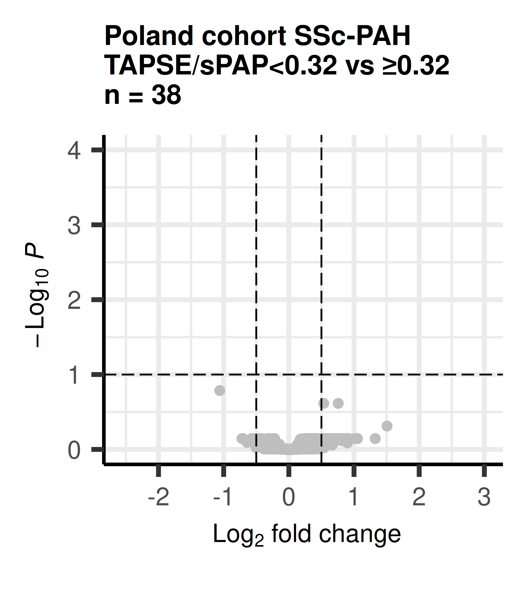
| Version | Author | Date |
|---|---|---|
| dc0c433 | GinoBonazza | 2026-05-06 |
meta_z_comp <- clin_z %>%
dplyr::distinct(Barcode, .keep_all = TRUE) %>%
dplyr::filter(Barcode %in% colnames(data_z)) %>%
dplyr::filter(Group == "SSc-PAH") %>%
dplyr::mutate(
COMPERA_number = as.numeric(COMPERA_number),
Sex = factor(Sex),
Age = as.numeric(Age)
) %>%
tibble::column_to_rownames("Barcode")
meta_z_comp <- meta_z_comp[
complete.cases(meta_z_comp[, c("COMPERA_number", "Age", "Sex")]),
, drop = FALSE
]
expr_z_comp <- as.matrix(data_z[, rownames(meta_z_comp), drop = FALSE])
design_z_comp <- model.matrix(~ COMPERA_number + Age + Sex, data = meta_z_comp)
design_z_comp[, "COMPERA_number"] <- rescale(design_z_comp[, "COMPERA_number"])
design_z_comp[, "Age"] <- rescale(design_z_comp[, "Age"])
fit_z_comp <- lmFit(expr_z_comp, design_z_comp)
fit_z_comp <- eBayes(fit_z_comp)
DE_z_comp <- topTable(
fit_z_comp,
coef = "COMPERA_number",
number = Inf,
adjust.method = "BH"
)
DE_z_comp$Gene <- rownames(DE_z_comp)
DE_z_comp_signif <- DE_z_comp %>%
dplyr::filter(adj.P.Val < 0.1, abs(logFC) > 0.5) %>%
dplyr::arrange(P.Value)
n_z_comp <- ncol(expr_z_comp)keyvals <- rep("grey", nrow(DE_z_comp))
names(keyvals) <- rep("Not significant", nrow(DE_z_comp))
keyvals[DE_z_comp$logFC > 0.5 & DE_z_comp$adj.P.Val < 0.1] <- "#A63A2A"
names(keyvals)[keyvals == "#A63A2A"] <- "Positive association"
keyvals[DE_z_comp$logFC < -0.5 & DE_z_comp$adj.P.Val < 0.1] <- "#004C8C"
names(keyvals)[keyvals == "#004C8C"] <- "Negative association"
volcano_z_comp <- EnhancedVolcano(
DE_z_comp,
lab = rownames(DE_z_comp),
x = "logFC",
y = "adj.P.Val",
labSize = 0,
titleLabSize = 13,
subtitleLabSize = 14,
axisLabSize = 12,
captionLabSize = 0,
pointSize = 1,
FCcutoff = 0.5,
pCutoff = 0.1,
ylim = c(0, 4),
colCustom = keyvals,
colAlpha = 1,
drawConnectors = FALSE,
subtitle = NULL,
title = paste0("Zurich cohort SSc-PAH\nCOMPERA_number\nn = ", n_z_comp)
) +
theme(legend.position = "none")
volcano_z_comp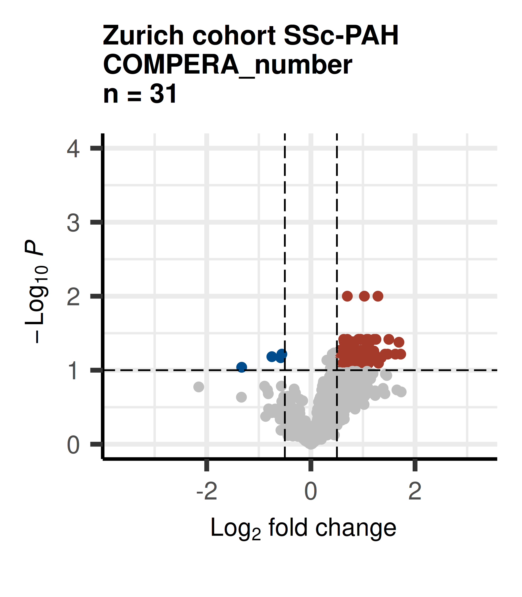
| Version | Author | Date |
|---|---|---|
| dc0c433 | GinoBonazza | 2026-05-06 |
meta_p_comp <- clin_p %>%
dplyr::distinct(Barcode, .keep_all = TRUE) %>%
dplyr::filter(Barcode %in% colnames(data_p)) %>%
dplyr::filter(Group == "SSc-PAH") %>%
dplyr::mutate(
Compera_number = as.numeric(Compera_number),
Sex = factor(Sex),
Age = as.numeric(Age)
) %>%
tibble::column_to_rownames("Barcode")
meta_p_comp <- meta_p_comp[
complete.cases(meta_p_comp[, c("Compera_number", "Age", "Sex")]),
, drop = FALSE
]
expr_p_comp <- as.matrix(data_p[, rownames(meta_p_comp), drop = FALSE])
design_p_comp <- model.matrix(~ Compera_number + Age + Sex, data = meta_p_comp)
design_p_comp[, "Compera_number"] <- rescale(design_p_comp[, "Compera_number"])
design_p_comp[, "Age"] <- rescale(design_p_comp[, "Age"])
fit_p_comp <- lmFit(expr_p_comp, design_p_comp)
fit_p_comp <- eBayes(fit_p_comp)
DE_p_comp <- topTable(
fit_p_comp,
coef = "Compera_number",
number = Inf,
adjust.method = "BH"
)
DE_p_comp$Gene <- rownames(DE_p_comp)
DE_p_comp_signif <- DE_p_comp %>%
dplyr::filter(adj.P.Val < 0.1, abs(logFC) > 0.5) %>%
dplyr::arrange(P.Value)
n_p_comp <- ncol(expr_p_comp)keyvals <- rep("grey", nrow(DE_p_comp))
names(keyvals) <- rep("Not significant", nrow(DE_p_comp))
keyvals[DE_p_comp$logFC > 0.5 & DE_p_comp$adj.P.Val < 0.1] <- "#A63A2A"
names(keyvals)[keyvals == "#A63A2A"] <- "Positive association"
keyvals[DE_p_comp$logFC < -0.5 & DE_p_comp$adj.P.Val < 0.1] <- "#004C8C"
names(keyvals)[keyvals == "#004C8C"] <- "Negative association"
volcano_p_comp <- EnhancedVolcano(
DE_p_comp,
lab = rownames(DE_p_comp),
x = "logFC",
y = "adj.P.Val",
labSize = 0,
titleLabSize = 13,
subtitleLabSize = 14,
axisLabSize = 12,
captionLabSize = 0,
pointSize = 1,
FCcutoff = 0.5,
pCutoff = 0.1,
ylim = c(0, 4),
colCustom = keyvals,
colAlpha = 1,
drawConnectors = FALSE,
subtitle = NULL,
title = paste0("Poland cohort\nSSc-PAH only\nCOMPERA_number\nn = ", n_p_comp)
) +
theme(legend.position = "none")
volcano_p_comp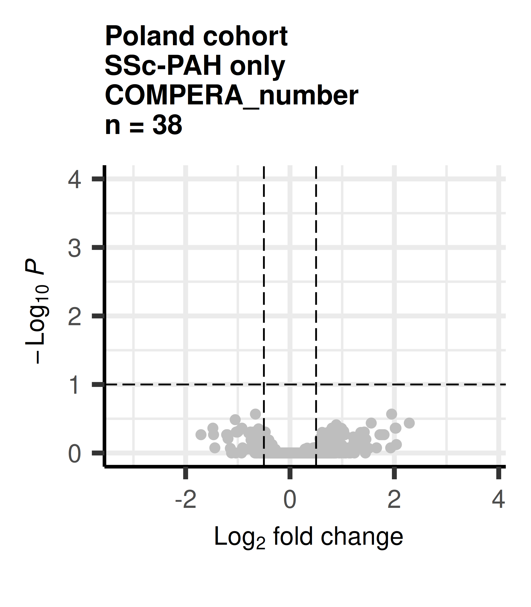
| Version | Author | Date |
|---|---|---|
| dc0c433 | GinoBonazza | 2026-05-06 |
df_group <- dplyr::inner_join(
DE_z[, c("Gene", "logFC")],
DE_p[, c("Gene", "logFC")],
by = "Gene",
suffix = c("_z", "_p")
)
cor_group <- cor(df_group$logFC_z, df_group$logFC_p)
ggplot(df_group, aes(logFC_z, logFC_p)) +
geom_point(size = 1, alpha = 0.6) +
geom_smooth(method = "lm", se = FALSE, linewidth = 0.6) +
labs(
x = "Zurich logFC",
y = "Poland logFC",
title = paste0("SSc-PAH vs SSc-noPAH\nr = ", round(cor_group, 2))
) +
theme_classic()
| Version | Author | Date |
|---|---|---|
| dc0c433 | GinoBonazza | 2026-05-06 |
df_tapse <- dplyr::inner_join(
DE_z_TAPSE[, c("Gene", "logFC")],
DE_p_TAPSE[, c("Gene", "logFC")],
by = "Gene",
suffix = c("_z", "_p")
)
cor_tapse <- cor(df_tapse$logFC_z, df_tapse$logFC_p)
ggplot(df_tapse, aes(logFC_z, logFC_p)) +
geom_point(size = 1, alpha = 0.6) +
geom_smooth(method = "lm", se = FALSE, linewidth = 0.6) +
labs(
x = "Zurich logFC",
y = "Poland logFC",
title = paste0("TAPSE_sPAP (continuous)\nr = ", round(cor_tapse, 2))
) +
theme_classic()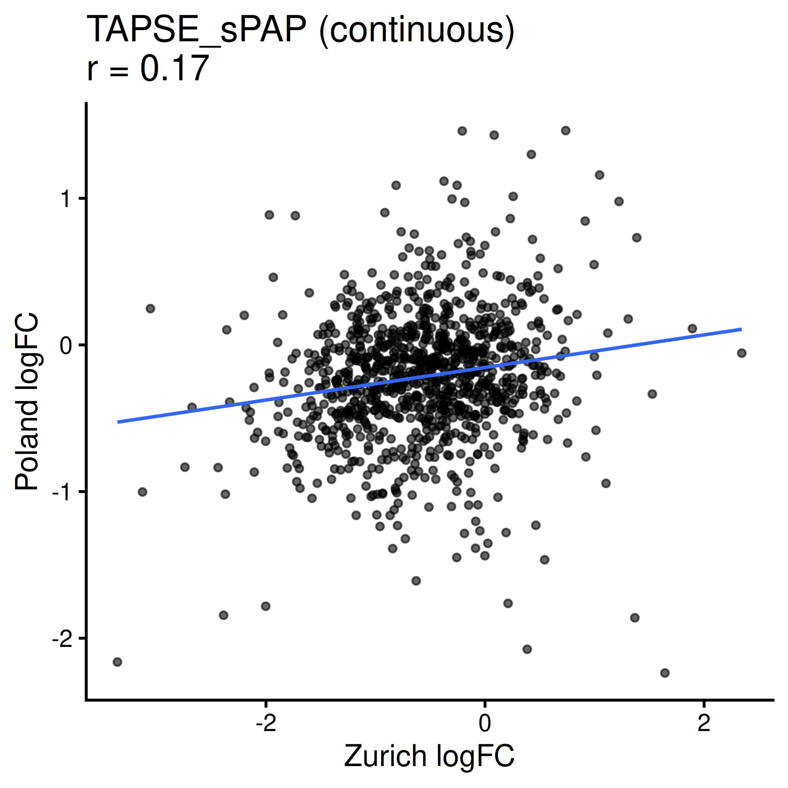
| Version | Author | Date |
|---|---|---|
| dc0c433 | GinoBonazza | 2026-05-06 |
df_tapse_bin <- dplyr::inner_join(
DE_z_bin[, c("Gene", "logFC")],
DE_p_bin[, c("Gene", "logFC")],
by = "Gene",
suffix = c("_z", "_p")
)
cor_tapse_bin <- cor(df_tapse_bin$logFC_z, df_tapse_bin$logFC_p)
ggplot(df_tapse_bin, aes(logFC_z, logFC_p)) +
geom_point(size = 1, alpha = 0.6) +
geom_smooth(method = "lm", se = FALSE, linewidth = 0.6) +
labs(
x = "Zurich logFC",
y = "Poland logFC",
title = paste0("TAPSE/sPAP groups (<0.32 vs ≥0.32)\nr = ", round(cor_tapse_bin, 2))
) +
theme_classic()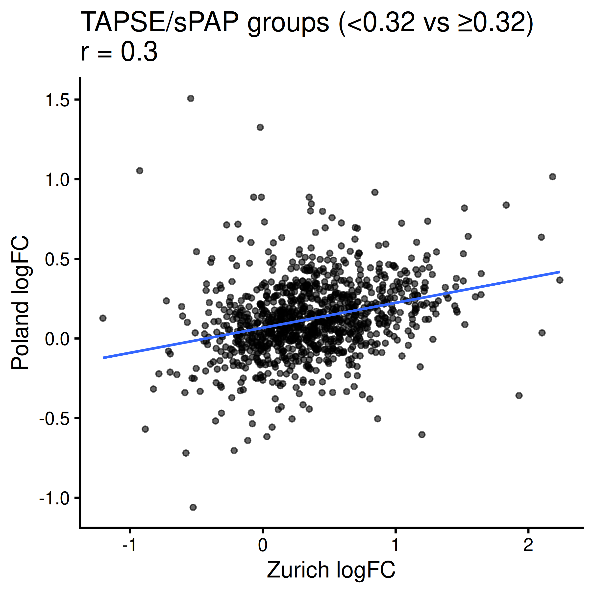
| Version | Author | Date |
|---|---|---|
| dc0c433 | GinoBonazza | 2026-05-06 |
df_comp <- dplyr::inner_join(
DE_z_comp[, c("Gene", "logFC")],
DE_p_comp[, c("Gene", "logFC")],
by = "Gene",
suffix = c("_z", "_p")
)
cor_comp <- cor(df_comp$logFC_z, df_comp$logFC_p)
ggplot(df_comp, aes(logFC_z, logFC_p)) +
geom_point(size = 1, alpha = 0.6) +
geom_smooth(method = "lm", se = FALSE, linewidth = 0.6) +
labs(
x = "Zurich logFC",
y = "Poland logFC",
title = paste0("COMPERA_number\nr = ", round(cor_comp, 2))
) +
theme_classic()
| Version | Author | Date |
|---|---|---|
| dc0c433 | GinoBonazza | 2026-05-06 |
# score for ranking (for GSEA later)
add_score <- function(de) {
de$score <- de$logFC * (-log10(de$P.Value))
de
}
# heatmap: top20 up/down by score
plot_top_score_heatmap <- function(expr, clin, de, samples, ha, title_text) {
de <- add_score(de)
de_sub <- de[match(rownames(expr), de$Gene), ]
rownames(de_sub) <- de_sub$Gene
up <- de_sub[order(de_sub$score, decreasing = TRUE), , drop = FALSE]
down <- de_sub[order(de_sub$score, decreasing = FALSE), , drop = FALSE]
top_up <- rownames(up)[1:20]
top_down <- rownames(down)[1:20]
genes_use <- c(top_up, top_down)
mat <- as.matrix(expr[genes_use, samples, drop = FALSE])
# z-score per protein (row), same as your heatmaps
matz <- t(scale(t(mat)))
matz[is.nan(matz)] <- 0
hm_cols <- colorRamp2(c(-2, 0, 2), c("#2166AC", "white", "#B2182B"))
Heatmap(
matz,
name = "Z-score",
col = hm_cols,
top_annotation = ha,
cluster_rows = FALSE,
cluster_columns = TRUE,
show_row_names = TRUE,
row_names_gp = gpar(fontsize = 13),
show_column_names = TRUE,
column_names_gp = gpar(fontsize = 8),
row_title = title_text,
column_title = NULL,
height = unit(nrow(matz) * 5, "mm")
) |>
draw(heatmap_legend_side = "right", annotation_legend_side = "right")
}clin_z <- clin_z %>%
dplyr::mutate(
TAPSE_sPAP = as.numeric(TAPSE_sPAP),
TAPSE_group = dplyr::case_when(
is.na(TAPSE_sPAP) ~ NA_character_,
TAPSE_sPAP < 0.32 ~ "<0.32",
TAPSE_sPAP >= 0.32 ~ "≥0.32"
),
TAPSE_group = factor(TAPSE_group, levels = c("≥0.32", "<0.32"))
)
clin_p <- clin_p %>%
dplyr::mutate(
TAPSE_sPAP = as.numeric(TAPSE_sPAP),
TAPSE_group = dplyr::case_when(
is.na(TAPSE_sPAP) ~ NA_character_,
TAPSE_sPAP < 0.32 ~ "<0.32",
TAPSE_sPAP >= 0.32 ~ "≥0.32"
),
TAPSE_group = factor(TAPSE_group, levels = c("≥0.32", "<0.32"))
)# ---- add TAPSE/sPAP group to clin_z once ----
clin_z <- clin_z %>%
dplyr::mutate(
TAPSE_sPAP = as.numeric(TAPSE_sPAP),
`TAPSE/sPAP` = dplyr::case_when(
is.na(TAPSE_sPAP) ~ NA_character_,
TAPSE_sPAP < 0.32 ~ "<0.32",
TRUE ~ "≥0.32"
),
`TAPSE/sPAP` = factor(`TAPSE/sPAP`, levels = c("≥0.32", "<0.32"))
)
# ---- colors (same palette logic) ----
cols_group <- c("SSc-noPAH"="#004C8C", "SSc-PAH"="#A63A2A")
cols_compera <- c(
"low" = "#9CA3AF",
"intermediate-low" = "#DDB7B2",
"intermediate-high" = "#C7685F",
"high" = "#A63A2A"
)
cols_tapse_spap <- c("≥0.32" = "#9CA3AF", "<0.32" = "#A63A2A")
# 1) SSc-PAH vs SSc-noPAH
samples <- intersect(colnames(data_z), clin_z$Barcode)
meta_hm <- clin_z[match(samples, clin_z$Barcode), ]
ha <- HeatmapAnnotation(
Group = meta_hm$Group,
COMPERA = factor(meta_hm$COMPERA_4strata, levels = c("low","intermediate-low","intermediate-high","high")),
`TAPSE/sPAP` = meta_hm$`TAPSE/sPAP`,
col = list(Group = cols_group, COMPERA = cols_compera, `TAPSE/sPAP` = cols_tapse_spap),
na_col = "#E5E7EB"
)
plot_top_score_heatmap(
expr = data_z,
clin = clin_z,
de = DE_z,
samples = samples,
ha = ha,
title_text = "Zurich: top20 up/down by score\nSSc-PAH vs SSc-noPAH"
)
| Version | Author | Date |
|---|---|---|
| dc0c433 | GinoBonazza | 2026-05-06 |
# 2) TAPSE_sPAP (continuous), SSc-PAH only
meta2 <- clin_z %>%
dplyr::filter(Group == "SSc-PAH") %>%
dplyr::filter(!is.na(TAPSE_sPAP), !is.na(Age), !is.na(Sex)) %>%
dplyr::filter(Barcode %in% colnames(data_z))
samples2 <- meta2$Barcode
ha2 <- HeatmapAnnotation(
COMPERA = factor(meta2$COMPERA_4strata, levels = c("low","intermediate-low","intermediate-high","high")),
`TAPSE/sPAP` = meta2$`TAPSE/sPAP`,
col = list(COMPERA = cols_compera, `TAPSE/sPAP` = cols_tapse_spap),
na_col = "#E5E7EB"
)
plot_top_score_heatmap(
expr = data_z,
clin = clin_z,
de = DE_z_TAPSE,
samples = samples2,
ha = ha2,
title_text = "Zurich: top20 up/down by score\nTAPSE_sPAP (continuous), SSc-PAH"
)
| Version | Author | Date |
|---|---|---|
| dc0c433 | GinoBonazza | 2026-05-06 |
# 3) TAPSE_sPAP groups (<0.32 vs ≥0.32), SSc-PAH only
meta3 <- clin_z %>%
dplyr::filter(Group == "SSc-PAH") %>%
dplyr::filter(!is.na(TAPSE_sPAP), !is.na(Age), !is.na(Sex)) %>%
dplyr::filter(Barcode %in% colnames(data_z))
samples3 <- meta3$Barcode
ha3 <- HeatmapAnnotation(
COMPERA = factor(meta3$COMPERA_4strata, levels = c("low","intermediate-low","intermediate-high","high")),
`TAPSE/sPAP` = meta3$`TAPSE/sPAP`,
col = list(COMPERA = cols_compera, `TAPSE/sPAP` = cols_tapse_spap),
na_col = "#E5E7EB"
)
plot_top_score_heatmap(
expr = data_z,
clin = clin_z,
de = DE_z_bin,
samples = samples3,
ha = ha3,
title_text = "Zurich: top20 up/down by score\nTAPSE_sPAP <0.32 vs ≥0.32, SSc-PAH"
)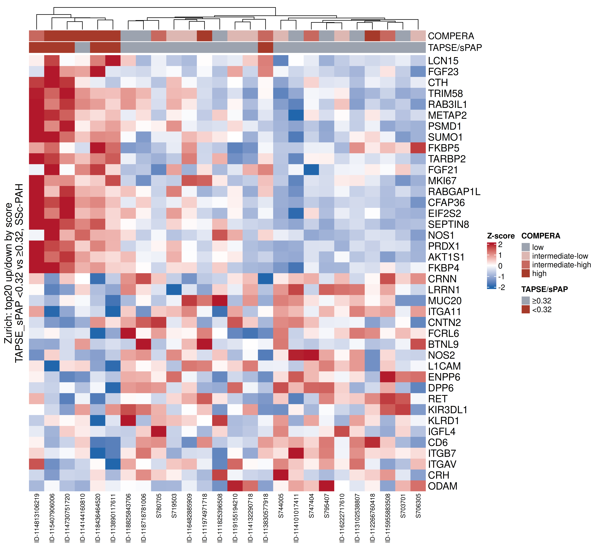
| Version | Author | Date |
|---|---|---|
| dc0c433 | GinoBonazza | 2026-05-06 |
# 4) COMPERA_number (continuous), SSc-PAH only
meta4 <- clin_z %>%
dplyr::filter(Group == "SSc-PAH") %>%
dplyr::filter(!is.na(COMPERA_number), !is.na(Age), !is.na(Sex)) %>%
dplyr::filter(Barcode %in% colnames(data_z))
samples4 <- meta4$Barcode
ha4 <- HeatmapAnnotation(
COMPERA = factor(meta4$COMPERA_4strata, levels = c("low","intermediate-low","intermediate-high","high")),
`TAPSE/sPAP` = meta4$`TAPSE/sPAP`,
col = list(COMPERA = cols_compera, `TAPSE/sPAP` = cols_tapse_spap),
na_col = "#E5E7EB"
)
plot_top_score_heatmap(
expr = data_z,
clin = clin_z,
de = DE_z_comp,
samples = samples4,
ha = ha4,
title_text = "Zurich: top20 up/down by score\nCOMPERA_number (continuous), SSc-PAH"
)
| Version | Author | Date |
|---|---|---|
| dc0c433 | GinoBonazza | 2026-05-06 |
# ---- add TAPSE/sPAP group to clin_p once ----
clin_p <- clin_p %>%
dplyr::mutate(
TAPSE_sPAP = as.numeric(TAPSE_sPAP),
`TAPSE/sPAP` = dplyr::case_when(
is.na(TAPSE_sPAP) ~ NA_character_,
TAPSE_sPAP < 0.32 ~ "<0.32",
TRUE ~ "≥0.32"
),
`TAPSE/sPAP` = factor(`TAPSE/sPAP`, levels = c("≥0.32", "<0.32"))
)
# ---- colors ----
cols_group <- c("SSc-noPAH"="#004C8C", "SSc-PAH"="#A63A2A")
cols_compera <- c(
"Low" = "#9CA3AF",
"Intermediate-low" = "#DDB7B2",
"Intermediate-high" = "#C7685F",
"High" = "#A63A2A"
)
cols_tapse_spap <- c("≥0.32" = "#9CA3AF", "<0.32" = "#A63A2A")
# 1) SSc-PAH vs SSc-noPAH
samples <- intersect(colnames(data_p), clin_p$Barcode)
meta_hm <- clin_p[match(samples, clin_p$Barcode), ]
ha <- HeatmapAnnotation(
Group = meta_hm$Group,
COMPERA = factor(meta_hm$Compera_4strata, levels = c("Low","Intermediate-low","Intermediate-high","High")),
`TAPSE/sPAP` = meta_hm$`TAPSE/sPAP`,
col = list(Group = cols_group, COMPERA = cols_compera, `TAPSE/sPAP` = cols_tapse_spap),
na_col = "#E5E7EB"
)
plot_top_score_heatmap(
expr = data_p,
clin = clin_p,
de = DE_p,
samples = samples,
ha = ha,
title_text = "Poland: top20 up/down by score\nSSc-PAH vs SSc-noPAH"
)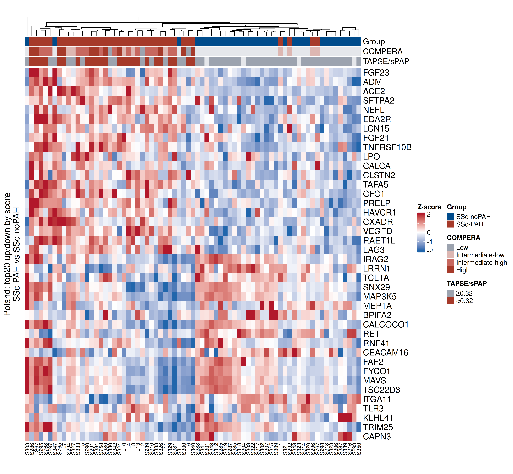
| Version | Author | Date |
|---|---|---|
| dc0c433 | GinoBonazza | 2026-05-06 |
# 2) TAPSE_sPAP (continuous), SSc-PAH only
meta2 <- clin_p %>%
dplyr::filter(Group == "SSc-PAH") %>%
dplyr::filter(!is.na(TAPSE_sPAP), !is.na(Age), !is.na(Sex)) %>%
dplyr::filter(Barcode %in% colnames(data_p))
samples2 <- meta2$Barcode
ha2 <- HeatmapAnnotation(
COMPERA = factor(meta2$Compera_4strata, levels = c("Low","Intermediate-low","Intermediate-high","High")),
`TAPSE/sPAP` = meta2$`TAPSE/sPAP`,
col = list(COMPERA = cols_compera, `TAPSE/sPAP` = cols_tapse_spap),
na_col = "#E5E7EB"
)
plot_top_score_heatmap(
expr = data_p,
clin = clin_p,
de = DE_p_TAPSE,
samples = samples2,
ha = ha2,
title_text = "Poland: top20 up/down by score\nTAPSE_sPAP (continuous), SSc-PAH"
)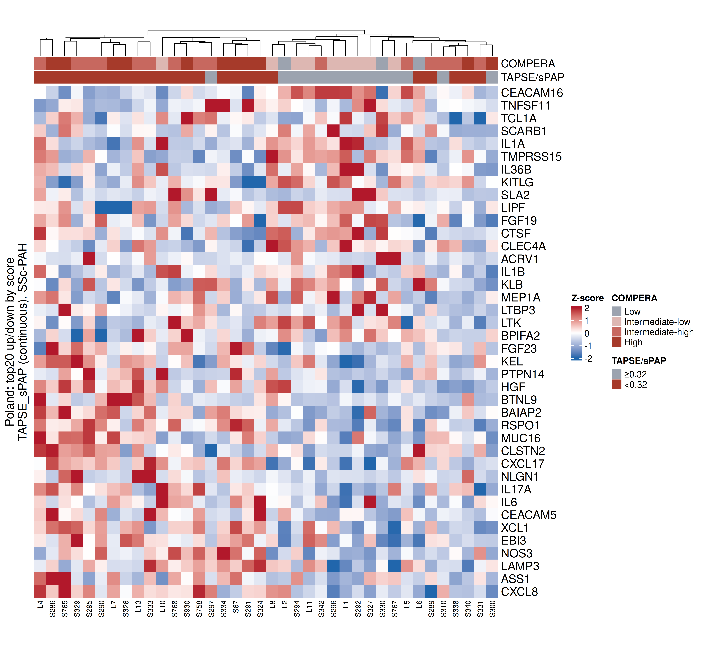
| Version | Author | Date |
|---|---|---|
| dc0c433 | GinoBonazza | 2026-05-06 |
# 3) TAPSE_sPAP groups (<0.32 vs ≥0.32), SSc-PAH only
meta3 <- clin_p %>%
dplyr::filter(Group == "SSc-PAH") %>%
dplyr::filter(!is.na(TAPSE_sPAP), !is.na(Age), !is.na(Sex)) %>%
dplyr::filter(Barcode %in% colnames(data_p))
samples3 <- meta3$Barcode
ha3 <- HeatmapAnnotation(
COMPERA = factor(meta3$Compera_4strata, levels = c("Low","Intermediate-low","Intermediate-high","High")),
`TAPSE/sPAP` = meta3$`TAPSE/sPAP`,
col = list(COMPERA = cols_compera, `TAPSE/sPAP` = cols_tapse_spap),
na_col = "#E5E7EB"
)
plot_top_score_heatmap(
expr = data_p,
clin = clin_p,
de = DE_p_bin,
samples = samples3,
ha = ha3,
title_text = "Poland: top20 up/down by score\nTAPSE_sPAP <0.32 vs ≥0.32, SSc-PAH"
)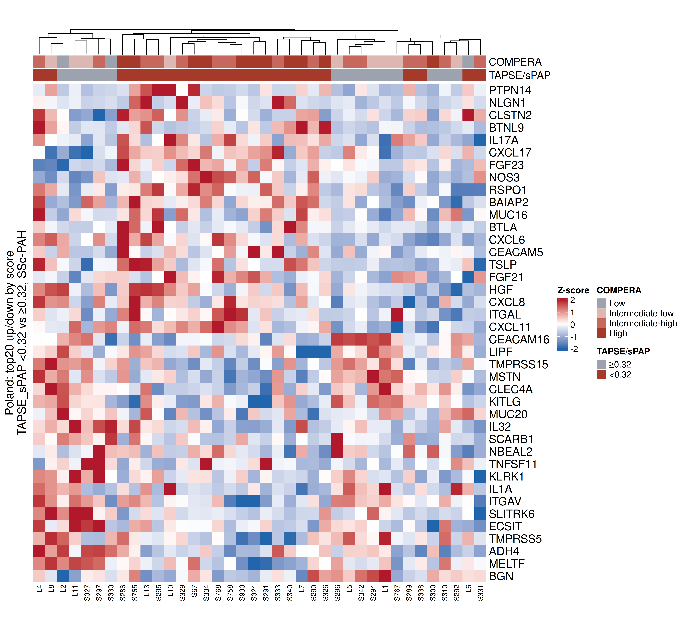
| Version | Author | Date |
|---|---|---|
| dc0c433 | GinoBonazza | 2026-05-06 |
# 4) Compera_number (continuous), SSc-PAH only
meta4 <- clin_p %>%
dplyr::filter(Group == "SSc-PAH") %>%
dplyr::filter(!is.na(Compera_number), !is.na(Age), !is.na(Sex)) %>%
dplyr::filter(Barcode %in% colnames(data_p))
samples4 <- meta4$Barcode
ha4 <- HeatmapAnnotation(
COMPERA = factor(meta4$Compera_4strata, levels = c("Low","Intermediate-low","Intermediate-high","High")),
`TAPSE/sPAP` = meta4$`TAPSE/sPAP`,
col = list(COMPERA = cols_compera, `TAPSE/sPAP` = cols_tapse_spap),
na_col = "#E5E7EB"
)
plot_top_score_heatmap(
expr = data_p,
clin = clin_p,
de = DE_p_comp,
samples = samples4,
ha = ha4,
title_text = "Poland: top20 up/down by score\nCOMPERA_number (continuous), SSc-PAH"
)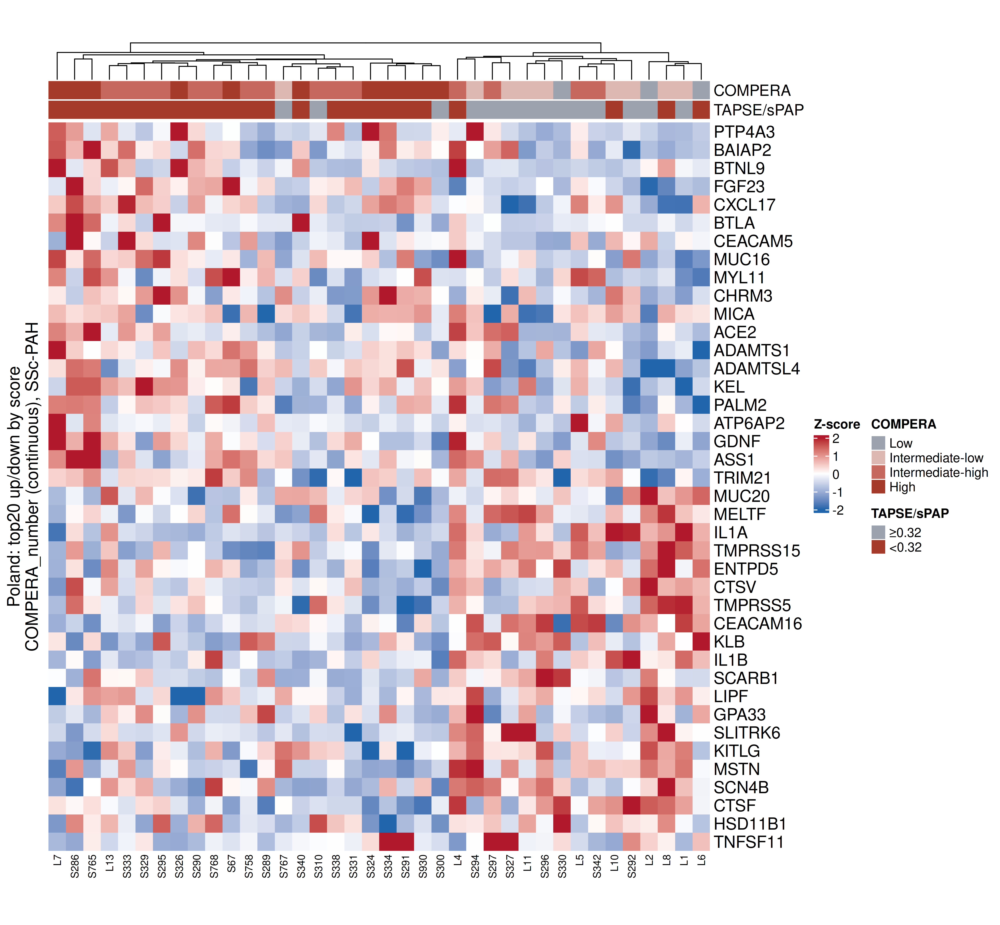
| Version | Author | Date |
|---|---|---|
| dc0c433 | GinoBonazza | 2026-05-06 |
Check age and sex by TAPSE/sPAP group
library(ggpubr)
prepare_tapse_group_df <- function(clin, cohort_label) {
clin %>%
dplyr::mutate(
TAPSE_sPAP = as.numeric(TAPSE_sPAP),
`TAPSE/sPAP` = dplyr::case_when(
is.na(TAPSE_sPAP) ~ NA_character_,
TAPSE_sPAP < 0.32 ~ "<0.32",
TRUE ~ "≥0.32"
),
`TAPSE/sPAP` = factor(`TAPSE/sPAP`, levels = c("≥0.32", "<0.32")),
Age = as.numeric(Age),
Sex = factor(Sex),
Cohort = cohort_label
) %>%
dplyr::filter(!is.na(`TAPSE/sPAP`))
}
age_test_tbl <- function(df) {
df %>%
dplyr::filter(!is.na(Age)) %>%
dplyr::summarise(
n = dplyr::n(),
p_value = wilcox.test(Age ~ `TAPSE/sPAP`, data = dplyr::cur_data())$p.value,
.groups = "drop"
)
}
sex_test_tbl <- function(df) {
tab <- table(df$`TAPSE/sPAP`, df$Sex)
list(table = tab, fisher = fisher.test(tab))
}
plot_age_by_tapse <- function(df, cohort_label) {
p_age <- wilcox.test(Age ~ `TAPSE/sPAP`, data = df %>% dplyr::filter(!is.na(Age)))$p.value
ggplot(df, aes(x = `TAPSE/sPAP`, y = Age, fill = `TAPSE/sPAP`)) +
geom_boxplot(alpha = 0.6, outlier.shape = NA) +
geom_jitter(width = 0.1, size = 2, alpha = 0.7) +
annotate(
"text", x = 1.5, y = Inf,
label = paste0("Wilcoxon p = ", signif(p_age, 3)),
vjust = 1.4, size = 4
) +
theme_classic() +
labs(
title = paste0(cohort_label, " cohort: Age by TAPSE/sPAP group"),
y = "Age (years)",
x = "TAPSE/sPAP group"
) +
theme(legend.position = "none")
}
plot_sex_by_tapse <- function(df, cohort_label) {
df %>%
dplyr::filter(!is.na(Sex)) %>%
ggplot(aes(x = `TAPSE/sPAP`, fill = Sex)) +
geom_bar(position = "fill") +
theme_classic() +
labs(
title = paste0(cohort_label, " cohort: Sex distribution by TAPSE/sPAP group"),
y = "Proportion",
x = "TAPSE/sPAP group"
)
}
clin_z_tapse <- prepare_tapse_group_df(clin_z, "Zurich")
clin_p_tapse <- prepare_tapse_group_df(clin_p, "Poland")age_test_tbl(clin_p_tapse)# A tibble: 1 × 2
n p_value
<int> <dbl>
1 69 0.00264sex_test_p <- sex_test_tbl(clin_p_tapse)
sex_test_p$table
F M
≥0.32 31 14
<0.32 15 9sex_test_p$fisher
Fisher's Exact Test for Count Data
data: tab
p-value = 0.6031
alternative hypothesis: true odds ratio is not equal to 1
95 percent confidence interval:
0.406557 4.210445
sample estimates:
odds ratio
1.32299 plot_age_by_tapse(clin_p_tapse, "Poland")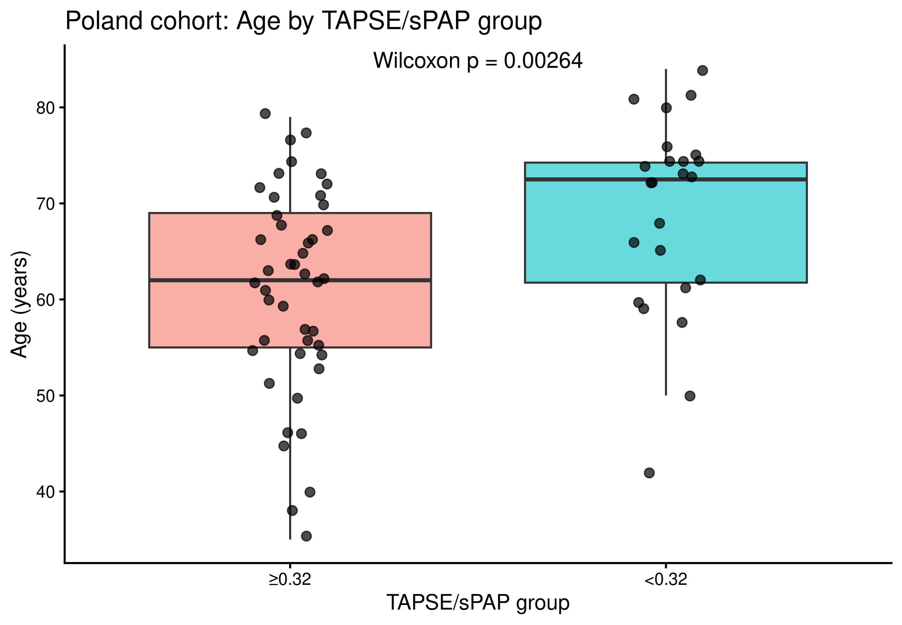
| Version | Author | Date |
|---|---|---|
| dc0c433 | GinoBonazza | 2026-05-06 |
plot_sex_by_tapse(clin_p_tapse, "Poland")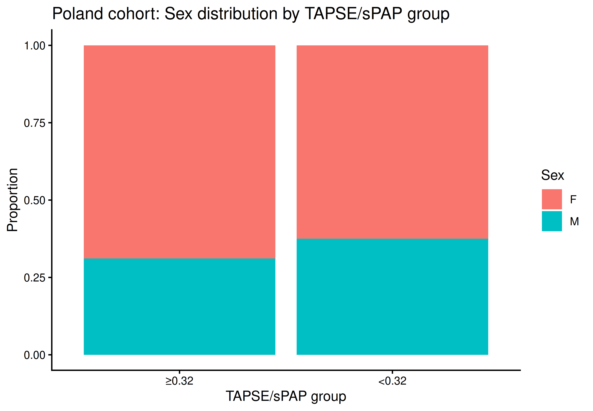
| Version | Author | Date |
|---|---|---|
| dc0c433 | GinoBonazza | 2026-05-06 |
age_test_tbl(clin_z_tapse)# A tibble: 1 × 2
n p_value
<int> <dbl>
1 61 0.102sex_test_z <- sex_test_tbl(clin_z_tapse)
sex_test_z$table
F M
≥0.32 46 9
<0.32 5 1sex_test_z$fisher
Fisher's Exact Test for Count Data
data: tab
p-value = 1
alternative hypothesis: true odds ratio is not equal to 1
95 percent confidence interval:
0.01947567 10.89926746
sample estimates:
odds ratio
1.021853 plot_age_by_tapse(clin_z_tapse, "Zurich")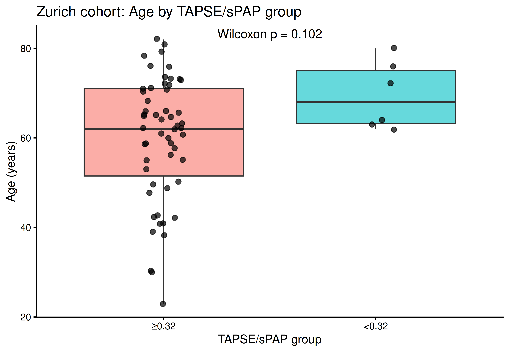
| Version | Author | Date |
|---|---|---|
| dc0c433 | GinoBonazza | 2026-05-06 |
plot_sex_by_tapse(clin_z_tapse, "Zurich")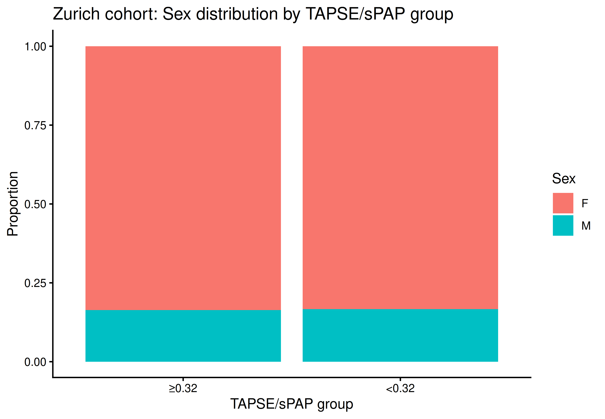
| Version | Author | Date |
|---|---|---|
| dc0c433 | GinoBonazza | 2026-05-06 |
Final lasso
library(glmnet)
library(pROC)
library(Matrix)
# SSc-PAH only for the training/testing task.
# Outcome: 1 = low TAPSE/sPAP (<0.32), 0 = preserved TAPSE/sPAP (≥0.32).
train_p <- clin_p %>%
dplyr::mutate(TAPSE_sPAP = as.numeric(TAPSE_sPAP), Age = as.numeric(Age), Sex = factor(Sex)) %>%
dplyr::filter(Group == "SSc-PAH") %>%
dplyr::filter(!is.na(TAPSE_sPAP), !is.na(Age), !is.na(Sex)) %>%
dplyr::filter(Barcode %in% colnames(data_p))
test_z <- clin_z %>%
dplyr::mutate(TAPSE_sPAP = as.numeric(TAPSE_sPAP), Age = as.numeric(Age), Sex = factor(Sex)) %>%
dplyr::filter(Group == "SSc-PAH") %>%
dplyr::filter(!is.na(TAPSE_sPAP), !is.na(Age), !is.na(Sex)) %>%
dplyr::filter(Barcode %in% colnames(data_z))
y_p <- ifelse(train_p$TAPSE_sPAP < 0.32, 1, 0)
y_z <- ifelse(test_z$TAPSE_sPAP < 0.32, 1, 0)
make_design <- function(expr_mat, clin_df, include_age = TRUE, include_sex = TRUE){
X_prot <- t(expr_mat[, clin_df$Barcode, drop = FALSE])
cov_parts <- list()
if (include_age) cov_parts$Age <- as.numeric(clin_df$Age)
if (include_sex) cov_parts$Sex <- factor(clin_df$Sex)
if (length(cov_parts) == 0) {
X <- X_prot
pf <- rep(1, ncol(X))
cov_names <- character(0)
} else {
X_cov <- model.matrix(~ ., data = as.data.frame(cov_parts))[, -1, drop = FALSE]
X <- cbind(X_cov, X_prot)
pf <- c(rep(0, ncol(X_cov)), rep(1, ncol(X_prot)))
cov_names <- colnames(X_cov)
}
list(X = X, pf = pf, cov_names = cov_names, prot_names = colnames(X_prot))
}
choose_lambda_by_protein_count <- function(cvfit, prot_names, min_prot = 3, max_prot = 15){
lambdas <- cvfit$glmnet.fit$lambda
beta_mat <- as.matrix(coef(cvfit$glmnet.fit, s = lambdas))
prot_idx <- which(rownames(beta_mat) %in% prot_names)
nprot <- apply(beta_mat[prot_idx, , drop = FALSE] != 0, 2, sum)
ok <- which(nprot >= min_prot & nprot <= max_prot)
if (length(ok) > 0) {
return(lambdas[ok[which.min(cvfit$cvm[match(lambdas[ok], cvfit$lambda)])]])
}
target <- round((min_prot + max_prot) / 2)
lambdas[which.min(abs(nprot - target))]
}
bootstrap_stability_lasso <- function(expr_mat, clin_df, y,
B = 500,
include_age = TRUE,
include_sex = TRUE,
alpha = 1,
nfolds = 5,
min_prot = 3,
max_prot = 15,
seed = 1){
set.seed(seed)
stopifnot(all(clin_df$Barcode %in% colnames(expr_mat)))
expr_mat <- expr_mat[, clin_df$Barcode, drop = FALSE]
y <- as.numeric(y)
des <- make_design(expr_mat, clin_df, include_age, include_sex)
X_full <- des$X
pf <- des$pf
all_prots <- des$prot_names
n <- nrow(X_full)
sel_list <- vector("list", B)
coef_list <- vector("list", B)
auc_oob <- rep(NA_real_, B)
lambda_used <- rep(NA_real_, B)
for (b in seq_len(B)) {
idx_boot <- sample(seq_len(n), size = n, replace = TRUE)
idx_oob <- setdiff(seq_len(n), unique(idx_boot))
Xb <- X_full[idx_boot, , drop = FALSE]
yb <- y[idx_boot]
cvfit <- glmnet::cv.glmnet(
x = Xb, y = yb, family = "binomial", alpha = alpha,
penalty.factor = pf, standardize = TRUE, nfolds = nfolds,
type.measure = "auc"
)
lam <- choose_lambda_by_protein_count(cvfit, prot_names = all_prots,
min_prot = min_prot, max_prot = max_prot)
lambda_used[b] <- lam
beta <- as.matrix(coef(cvfit$glmnet.fit, s = lam))[, 1]
names(beta) <- rownames(as.matrix(coef(cvfit$glmnet.fit, s = lam)))
sel_prot <- intersect(names(beta)[beta != 0], all_prots)
sel_list[[b]] <- sel_prot
coef_list[[b]] <- beta
if (length(idx_oob) >= 8 && length(unique(y[idx_oob])) == 2) {
fitb <- glmnet::glmnet(
x = Xb, y = yb, family = "binomial", alpha = alpha,
penalty.factor = pf, standardize = TRUE, lambda = lam
)
p_oob <- as.numeric(predict(fitb, newx = X_full[idx_oob, , drop = FALSE], type = "response"))
auc_oob[b] <- as.numeric(pROC::auc(pROC::roc(y[idx_oob], p_oob, quiet = TRUE)))
}
}
sel_counts <- table(unlist(sel_list))
freq <- as.numeric(sel_counts[all_prots])
freq[is.na(freq)] <- 0
freq <- freq / B
sign_pos <- rep(NA_real_, length(all_prots))
names(sign_pos) <- all_prots
for (p in all_prots) {
signs <- c()
for (b in seq_len(B)) {
beta <- coef_list[[b]]
if (!is.null(beta) && p %in% names(beta) && beta[p] != 0) {
signs <- c(signs, sign(beta[p]))
}
}
if (length(signs) > 0) sign_pos[p] <- mean(signs > 0)
}
summary <- data.frame(
protein = all_prots,
select_freq = freq,
sign_pos_frac = sign_pos,
stringsAsFactors = FALSE
) %>%
dplyr::arrange(dplyr::desc(select_freq))
list(
summary = summary,
sel_list = sel_list,
coef_list = coef_list,
auc_oob = auc_oob,
lambda_used = lambda_used,
settings = list(B = B, include_age = include_age, include_sex = include_sex,
alpha = alpha, nfolds = nfolds, min_prot = min_prot, max_prot = max_prot)
)
}
get_scaler <- function(expr_mat, proteins){
m <- rowMeans(expr_mat[proteins, , drop = FALSE], na.rm = TRUE)
s <- apply(expr_mat[proteins, , drop = FALSE], 1, sd, na.rm = TRUE)
s[s == 0 | is.na(s)] <- 1
list(mu = m, sd = s)
}
apply_scaler <- function(expr_mat, proteins, scaler){
Z <- expr_mat[proteins, , drop = FALSE]
Z <- sweep(Z, 1, scaler$mu, "-")
Z <- sweep(Z, 1, scaler$sd, "/")
Z[is.na(Z)] <- 0
Z
}
fit_logistic_refit <- function(expr_mat, clin_df, proteins, cutoff = 0.32,
include_age = TRUE, include_sex = TRUE){
df <- clin_df %>% dplyr::mutate(y = ifelse(TAPSE_sPAP < cutoff, 1, 0))
stopifnot(all(df$Barcode %in% colnames(expr_mat)))
scaler <- get_scaler(expr_mat[, df$Barcode, drop = FALSE], proteins)
Z <- t(apply_scaler(expr_mat[, df$Barcode, drop = FALSE], proteins, scaler)) %>% as.data.frame()
Z$Barcode <- df$Barcode
dd <- df %>% dplyr::select(Barcode, y, Age, Sex) %>% dplyr::left_join(Z, by = "Barcode")
rhs <- c(if (include_age) "Age", if (include_sex) "Sex", proteins)
fml <- as.formula(paste("y ~", paste(rhs, collapse = " + ")))
m <- glm(fml, data = dd, family = binomial())
list(model = m, scaler = scaler, proteins = proteins, include_age = include_age, include_sex = include_sex)
}
predict_logistic_refit <- function(fit, expr_mat, clin_df){
df <- clin_df
stopifnot(all(df$Barcode %in% colnames(expr_mat)))
Z <- t(apply_scaler(expr_mat[, df$Barcode, drop = FALSE], fit$proteins, fit$scaler)) %>% as.data.frame()
Z$Barcode <- df$Barcode
keep_cols <- intersect(c("Barcode", "Age", "Sex", "TAPSE_sPAP", "TAPSE_group", "Group"), colnames(df))
dd <- df %>% dplyr::select(dplyr::all_of(keep_cols)) %>% dplyr::left_join(Z, by = "Barcode")
dd$score_eta <- as.numeric(predict(fit$model, newdata = dd, type = "link"))
dd$score_p <- as.numeric(predict(fit$model, newdata = dd, type = "response"))
dd
}
signed_mean_score <- function(expr_mat, clin_df, proteins, sign_map, scaler){
stopifnot(all(names(sign_map) %in% proteins))
Z <- apply_scaler(expr_mat[, clin_df$Barcode, drop = FALSE], proteins, scaler)
Zs <- sweep(Z, 1, sign_map[proteins], "*")
score <- colMeans(Zs, na.rm = TRUE)
out <- clin_df %>% dplyr::select(dplyr::any_of(c("Barcode", "Age", "Sex", "TAPSE_sPAP", "TAPSE_group", "Group")))
out$score_signed <- as.numeric(score[match(out$Barcode, names(score))])
out
}library(limma)
library(dplyr)
# Poland samples for DE (PAH vs noPAH)
de_meta_p <- clin_p %>%
filter(Group %in% c("SSc-PAH", "SSc-noPAH")) %>%
filter(!is.na(Age), !is.na(Sex)) %>%
filter(Barcode %in% colnames(data_p))
X_de <- as.matrix(data_p[, de_meta_p$Barcode, drop = FALSE])
# Design: Group + Age + Sex
de_meta_p$Group <- factor(de_meta_p$Group, levels = c("SSc-noPAH", "SSc-PAH"))
de_meta_p$Sex <- factor(de_meta_p$Sex)
design <- model.matrix(~ Group + Age + Sex, data = de_meta_p)
fit <- lmFit(X_de, design)
fit <- eBayes(fit)
DE_pah_vs_nopah <- topTable(fit, coef = "GroupSSc-PAH", number = Inf, adjust.method = "BH")
DE_pah_vs_nopah$protein <- rownames(DE_pah_vs_nopah)
# Choose your filter (match your original logic)
# Example: adj.P.Val < 0.05 (optionally add |logFC| cutoff)
preselect_proteins <- DE_pah_vs_nopah %>%
dplyr::filter(adj.P.Val < 0.05) %>%
# dplyr::filter(protein %in% dplyr::filter(DE_p_bin, P.Value < 0.05)$Gene) %>%
pull(protein)
length(preselect_proteins)[1] 60head(preselect_proteins)[1] "ADM" "ACE2" "PRELP" "TAFA5" "CFC1" "FGF23"qs2::qs_save(DE_pah_vs_nopah, here::here(output_dir_data, "DE_Poland_SScPAH_vs_SScnoPAH_AgeSex.qs2"))
qs2::qs_save(preselect_proteins, here::here(output_dir_data, "preselect_proteins_DEadjP005.qs2"))Stability-selection lasso after protein preselection
# Intersect with proteins available in BOTH cohorts
common_preselect <- intersect(preselect_proteins, intersect(rownames(data_p), rownames(data_z)))
length(common_preselect)[1] 58# Build training/test expression matrices for LASSO (proteins x samples)
expr_p_tr_pre <- as.matrix(data_p[common_preselect, train_p$Barcode, drop = FALSE])
expr_z_te_pre <- as.matrix(data_z[common_preselect, test_z$Barcode, drop = FALSE])
# Run bootstrap stability selection on the preselected feature space
B <- 500
stab_pre <- bootstrap_stability_lasso(
expr_mat = expr_p_tr_pre,
clin_df = train_p,
y = y_p,
B = B,
include_age = TRUE,
include_sex = TRUE, # or FALSE if you want Age-only adjustment
alpha = 1,
nfolds = 5,
min_prot = 3,
max_prot = 100,
seed = 1
)
qs2::qs_save(stab_pre, here::here(output_dir_data, paste0("stability_lasso_preselected_B", B, "_AgeSex.qs2")))
head(stab_pre$summary, 20) protein select_freq sign_pos_frac
CLSTN2 CLSTN2 0.890 1.00000000
SIGLEC8 SIGLEC8 0.500 1.00000000
LRRN1 LRRN1 0.484 0.00000000
CXCL17 CXCL17 0.480 1.00000000
IL15 IL15 0.386 1.00000000
RSPO1 RSPO1 0.366 1.00000000
LCN15 LCN15 0.276 0.00000000
SCARB2 SCARB2 0.276 1.00000000
CALCB CALCB 0.254 1.00000000
PTPRN2 PTPRN2 0.246 0.99186992
ADM ADM 0.232 1.00000000
LAG3 LAG3 0.226 1.00000000
MEP1A MEP1A 0.216 0.00000000
NPTXR NPTXR 0.194 0.03092784
EGFLAM EGFLAM 0.184 1.00000000
TNFRSF10B TNFRSF10B 0.172 1.00000000
PTK7 PTK7 0.160 0.72500000
TAFA5 TAFA5 0.158 1.00000000
SCG2 SCG2 0.156 0.00000000
CD302 CD302 0.140 1.00000000library(dplyr)
library(ggplot2)
# number of proteins selected per bootstrap
panel_sizes <- sapply(stab_pre$sel_list, length)
df_sizes <- data.frame(size = panel_sizes)
p_size <- ggplot(df_sizes, aes(x = size)) +
geom_histogram(binwidth = 1) +
scale_x_continuous(breaks = sort(unique(panel_sizes))) +
labs(
x = "Number of proteins selected (per bootstrap)",
y = "Count",
title = "Stability selection: distribution of panel sizes"
) +
theme_classic(base_size = 12)
p_size
| Version | Author | Date |
|---|---|---|
| dc0c433 | GinoBonazza | 2026-05-06 |
ggsave(here::here(output_dir_figs, paste0("stability_panel_size_distribution_B", stab_pre$settings$B, ".png")),
p_size, width = 6, height = 4.2, dpi = 300)
summary(panel_sizes) Min. 1st Qu. Median Mean 3rd Qu. Max.
3.000 6.000 8.000 7.652 9.000 15.000 table(panel_sizes)panel_sizes
3 4 5 6 7 8 9 10 11 12 13 14 15
39 33 34 42 75 81 79 59 31 16 7 3 1 2) “Most frequent combination” (top recurring panels)
This is useful, but usually you’ll see many singletons unless you restrict to a manageable feature universe. So we compute frequency of exact sets.
library(tibble)
panel_keys <- sapply(stab_pre$sel_list, function(v){
if (length(v) == 0) return(NA_character_)
paste(sort(v), collapse = " | ")
})
panel_tab <- sort(table(panel_keys), decreasing = TRUE)
panel_df <- data.frame(
panel = names(panel_tab),
n = as.integer(panel_tab),
freq = as.integer(panel_tab) / length(stab_pre$sel_list),
stringsAsFactors = FALSE
) %>%
filter(!is.na(panel))
head(panel_df, 20) panel
1 CLSTN2 | CXCL17 | LAG3
2 CLSTN2 | CXCL17 | LCN15
3 CLSTN2 | CXCL17 | PTPRN2
4 CLSTN2 | HRC | RSPO1
5 ACE2 | ACVRL1 | CLSTN2 | LAG3 | LRRN1 | NEFL | NPTXR | SCARB2 | SIGLEC8 | TAFA5
6 ACE2 | ADAMTSL4 | ADM | CALCB | CLSTN2 | IL15 | LRRN1 | NEFL | RSPO1 | SCARB2 | SIGLEC8
7 ACE2 | ADAMTSL4 | ADM | CLSTN2 | CPVL | CXCL17 | LCN15 | LRRN1 | NEFL | OCLN | RSPO1 | SCG2 | SIGLEC8 | TAFA5
8 ACE2 | ADAMTSL4 | CD38 | CLSTN2 | HRC | LRRN1 | NEFL | SIGLEC8 | TAFA5
9 ACE2 | ADAMTSL4 | CLSTN2 | CXCL17 | LRRN1 | SIGLEC8
10 ACE2 | ADAMTSL4 | CLSTN2 | GPR37 | IL15 | LCN15 | LPO | LRRN1 | NEFL | NPTXR | SCARB2 | SIGLEC8
11 ACE2 | ADAMTSL4 | CLSTN2 | LAG3 | LPO | LRRN1 | MEP1A | NEFL | SIGLEC8 | TAFA5
12 ACE2 | ADM | CALCB | CLSTN2 | CPE | LRRN1 | OCLN | RSPO1 | SIGLEC8
13 ACE2 | ADM | CALCB | CLSTN2 | LAG3 | LCN15 | NPTXR | PTPRN2 | SFTPA2
14 ACE2 | ADM | CLSTN2 | IL15 | LPO | LRRN1 | NEFL | SIGLEC8 | VEGFD
15 ACE2 | ADM | CPVL | IL15 | LCN15 | LRRN1 | NEFL | RSPO1 | SCARB2 | SIGLEC8 | TNFRSF10B
16 ACE2 | CD302 | CLSTN2 | CXADR | CXCL17 | IL15 | LRRN1 | MEP1A | NPTXR | PALM2 | SCARB2 | SIGLEC8 | TNFRSF10B
17 ACE2 | CD302 | CLSTN2 | EGFLAM | IL15 | LCN15 | LRRN1 | RTBDN | SCARB2
18 ACE2 | CLSTN2 | EGFLAM | IL15 | LPO | LRRN1 | NPTXR | SCARB2
19 ACE2 | CLSTN2 | IL15 | NPTXR | SIGLEC8
20 ACE2 | CLSTN2 | LPO | LRRN1 | NPTXR | RET | SIGLEC8 | TAFA5
n freq
1 2 0.004
2 2 0.004
3 2 0.004
4 2 0.004
5 1 0.002
6 1 0.002
7 1 0.002
8 1 0.002
9 1 0.002
10 1 0.002
11 1 0.002
12 1 0.002
13 1 0.002
14 1 0.002
15 1 0.002
16 1 0.002
17 1 0.002
18 1 0.002
19 1 0.002
20 1 0.002Optional plot (top 10 panels):
topM <- 10
p_panels <- panel_df %>%
slice_head(n = topM) %>%
mutate(panel = factor(panel, levels = rev(panel))) %>%
ggplot(aes(x = panel, y = freq)) +
geom_col() +
coord_flip() +
labs(x = NULL, y = "Frequency", title = paste0("Top ", topM, " most frequent exact panels")) +
theme_classic(base_size = 12)
p_panels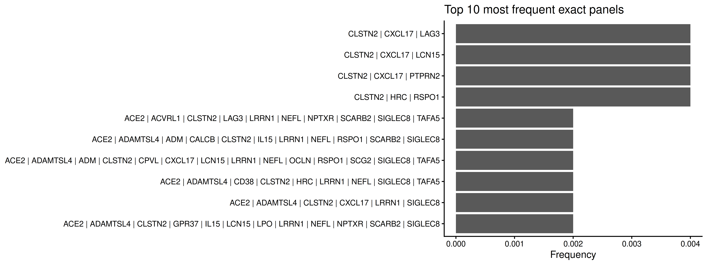
| Version | Author | Date |
|---|---|---|
| dc0c433 | GinoBonazza | 2026-05-06 |
ggsave(here::here(output_dir_figs, paste0("stability_top", topM, "_panels_B", stab_pre$settings$B, ".png")),
p_panels, width = 9, height = 4.5, dpi = 300)3) Co-selection heatmap (which proteins tend to appear together)
This is often more informative than exact combinations.
library(Matrix)
# pick a manageable set (e.g. top 30 by selection freq)
topK <- 30
top_prots <- stab_pre$summary %>% slice_head(n = topK) %>% pull(protein)
# build co-selection matrix
M <- matrix(0, nrow = topK, ncol = topK, dimnames = list(top_prots, top_prots))
for (sel in stab_pre$sel_list) {
sel <- intersect(sel, top_prots)
if (length(sel) >= 2) {
idx <- match(sel, top_prots)
M[idx, idx] <- M[idx, idx] + 1
} else if (length(sel) == 1) {
i <- match(sel, top_prots)
M[i, i] <- M[i, i] + 1
}
}
# convert to frequency
M_freq <- M / length(stab_pre$sel_list)
# quick base heatmap
heatmap(M_freq, symm = TRUE, margins = c(8, 8),
main = paste0("Co-selection frequency (top ", topK, " proteins)"))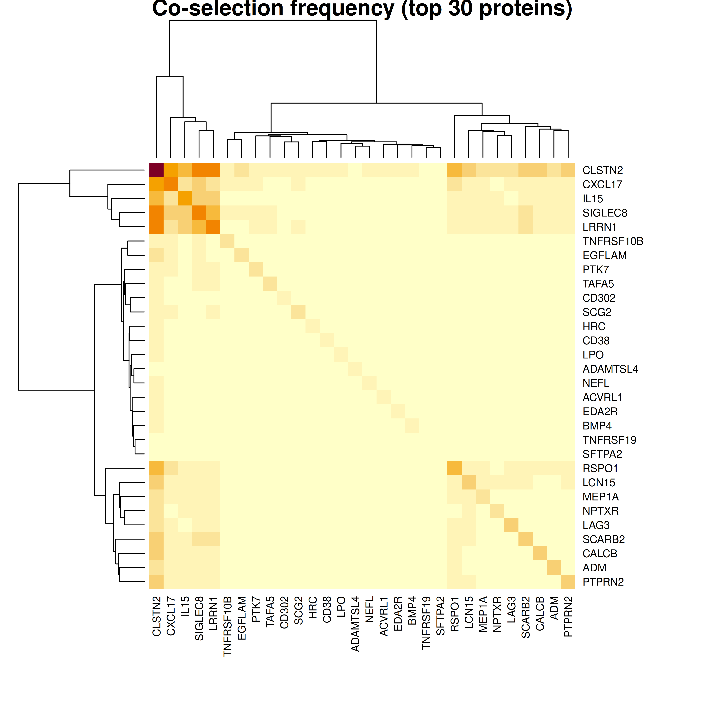
| Version | Author | Date |
|---|---|---|
| dc0c433 | GinoBonazza | 2026-05-06 |
Build final panel and scores
stab_df <- stab_pre$summary
# pick your panel
panel_size <- 5
panel_prots <- stab_df %>% slice_head(n = panel_size) %>% pull(protein)
panel_prots[1] "CLSTN2" "SIGLEC8" "LRRN1" "CXCL17" "IL15" # sign map from bootstrap
sign_map <- stab_df %>%
filter(protein %in% panel_prots) %>%
mutate(sign = ifelse(sign_pos_frac >= 0.5, 1, -1)) %>%
dplyr::select(protein, sign) %>%
tibble::deframe()
# IMPORTANT: refit/scores must use the FULL cohort matrices (data_p/data_z)
# but only these proteins
refit_pre <- fit_logistic_refit(
expr_mat = as.matrix(data_p), # proteins x samples
clin_df = train_p,
proteins = panel_prots,
cutoff = 0.32,
include_age = TRUE,
include_sex = TRUE
)
pred_p <- predict_logistic_refit(refit_pre, as.matrix(data_p), train_p)
pred_z <- predict_logistic_refit(refit_pre, as.matrix(data_z), test_z)
signed_p <- signed_mean_score(as.matrix(data_p), train_p, panel_prots, sign_map, refit_pre$scaler)
signed_z <- signed_mean_score(as.matrix(data_z), test_z, panel_prots, sign_map, refit_pre$scaler)Final lasso performance and score plots
ROC with AUC confidence intervals
y_tr <- ifelse(pred_p$TAPSE_sPAP < 0.32, 1, 0)
y_te <- ifelse(pred_z$TAPSE_sPAP < 0.32, 1, 0)
roc_tr <- pROC::roc(y_tr, pred_p$score_p, quiet = TRUE, ci = TRUE, direction = "<")
roc_te <- pROC::roc(y_te, pred_z$score_p, quiet = TRUE, ci = TRUE, direction = "<")
auc_tr <- as.numeric(pROC::auc(roc_tr))
auc_te <- as.numeric(pROC::auc(roc_te))
ci_auc_tr <- as.numeric(pROC::ci.auc(roc_tr))
ci_auc_te <- as.numeric(pROC::ci.auc(roc_te))
# 95% ROC-curve confidence bands
set.seed(1)
ci_se_tr <- pROC::ci.se(
roc_tr,
specificities = seq(0, 1, length.out = 101),
boot.n = 2000,
progress = "none"
)
ci_se_te <- pROC::ci.se(
roc_te,
specificities = seq(0, 1, length.out = 101),
boot.n = 2000,
progress = "none"
)
plot(
roc_tr,
legacy.axes = TRUE,
identity = FALSE,
col = "red",
lwd = 2,
xlab = "1 - Specificity",
ylab = "Sensitivity",
main = paste0(
"Stable panel refit-logistic
",
"Poland AUC=", sprintf("%.2f", auc_tr),
" | Zurich AUC=", sprintf("%.2f", auc_te)
)
)
plot(
ci_se_tr,
type = "shape",
col = adjustcolor("red", alpha.f = 0.20),
border = NA,
no.roc = TRUE,
add = TRUE,
legacy.axes = TRUE
)
plot(
ci_se_te,
type = "shape",
col = adjustcolor("black", alpha.f = 0.15),
border = NA,
no.roc = TRUE,
add = TRUE,
legacy.axes = TRUE
)
plot(roc_tr, legacy.axes = TRUE, identity = FALSE, col = "red", lwd = 2, add = TRUE)
plot(roc_te, legacy.axes = TRUE, identity = FALSE, col = "black", lwd = 2, add = TRUE)
legend(
"bottomright",
inset = 0.02,
legend = c(
paste0(
"Poland (train): AUC ", sprintf("%.2f", auc_tr),
" [", sprintf("%.2f", ci_auc_tr[1]), ", ", sprintf("%.2f", ci_auc_tr[3]), "]"
),
paste0(
"Zurich (test): AUC ", sprintf("%.2f", auc_te),
" [", sprintf("%.2f", ci_auc_te[1]), ", ", sprintf("%.2f", ci_auc_te[3]), "]"
)
),
col = c("red", "black"),
lwd = 2,
bty = "n",
cex = 0.99,
seg.len = 2.3
)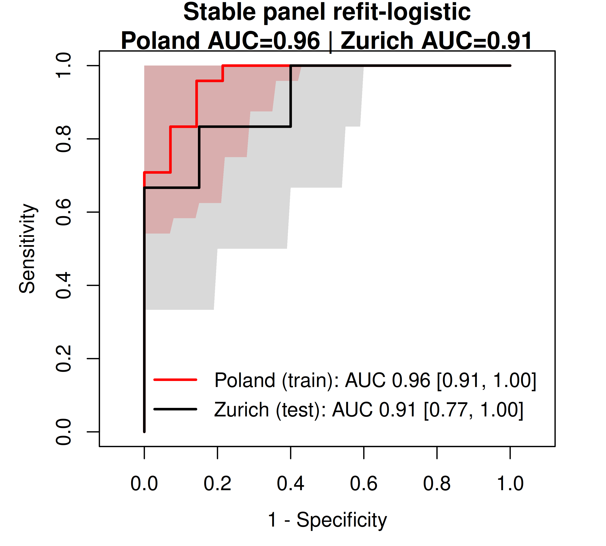
| Version | Author | Date |
|---|---|---|
| dc0c433 | GinoBonazza | 2026-05-06 |
Three-group score plot
library(ggpubr)
make_3groups <- function(clin_df){
clin_df %>%
mutate(
group3 = case_when(
Group == "SSc-noPAH" ~ "SSc-noPAH",
Group == "SSc-PAH" & TAPSE_sPAP >= 0.32 ~ "SSc-PAH≥0.32",
Group == "SSc-PAH" & TAPSE_sPAP < 0.32 ~ "SSc-PAH<0.32",
TRUE ~ NA_character_
),
group3 = factor(group3, levels = c("SSc-noPAH", "SSc-PAH≥0.32", "SSc-PAH<0.32"))
)
}
# score ALL subjects to visualize, but plot ETA
clin_p_all <- clin_p %>% filter(Barcode %in% colnames(data_p), !is.na(Age), !is.na(Sex))
clin_z_all <- clin_z %>% filter(Barcode %in% colnames(data_z), !is.na(Age), !is.na(Sex))
pred_p_all <- predict_logistic_refit(refit_pre, as.matrix(data_p), clin_p_all) %>% make_3groups()
pred_z_all <- predict_logistic_refit(refit_pre, as.matrix(data_z), clin_z_all) %>% make_3groups()
df_plot <- bind_rows(
pred_p_all %>% mutate(Cohort = "Poland"),
pred_z_all %>% mutate(Cohort = "Zurich")
) %>% filter(!is.na(group3))
p <- ggplot(df_plot, aes(x = group3, y = score_eta)) +
geom_boxplot(outlier.shape = NA) +
geom_jitter(width = 0.15, size = 1.3, alpha = 0.7) +
facet_wrap(~Cohort, scales = "free_x") +
labs(x = NULL, y = "Score (log-odds; linear predictor)",
title = paste0("Stable panel refit-logistic score (", length(panel_prots), " proteins)")) +
theme_classic(base_size = 12) +
theme(axis.text.x = element_text(angle = 15, hjust = 1))
p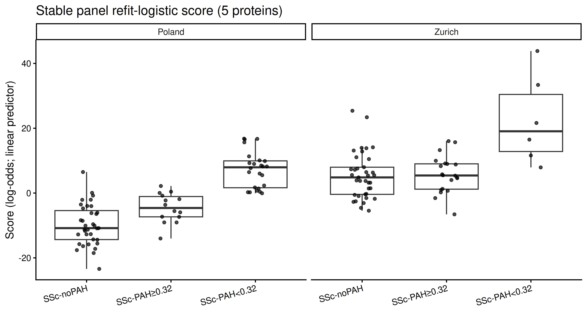
| Version | Author | Date |
|---|---|---|
| dc0c433 | GinoBonazza | 2026-05-06 |
Correlations
panel_prots <- refit_pre$proteins
# helper to build a long dataframe for correlations
make_corr_df <- function(clin_df, data_mat, cohort_label, score_df = NULL,
score_var = c("score_eta","score_p","score_signed")) {
score_var <- match.arg(score_var)
# subset to SSc-PAH with TAPSE/sPAP
cc <- clin_df %>%
filter(Group == "SSc-PAH") %>%
filter(!is.na(TAPSE_sPAP)) %>%
filter(Barcode %in% colnames(data_mat))
# protein values (wide)
prot_wide <- t(as.matrix(data_mat[panel_prots, cc$Barcode, drop = FALSE])) %>%
as.data.frame()
prot_wide$Barcode <- cc$Barcode
out <- cc %>%
dplyr::select(Barcode, TAPSE_sPAP) %>%
left_join(prot_wide, by = "Barcode") %>%
mutate(Cohort = cohort_label)
# attach score if provided
if (!is.null(score_df)) {
out <- out %>%
left_join(score_df %>% dplyr::select(Barcode, all_of(score_var)), by = "Barcode") %>%
rename(Score = all_of(score_var))
} else {
out$Score <- NA_real_
}
out
}
# Use your previously created score data frames:
# pred_p, pred_z contain score_eta and score_p for SSc-PAH train/test
# signed_p, signed_z contain score_signed if you want that too
df_corr_p <- make_corr_df(train_p, data_p, "Poland", score_df = pred_p, score_var = "score_eta")
df_corr_z <- make_corr_df(test_z, data_z, "Zurich", score_df = pred_z, score_var = "score_eta")
# Combine
df_corr <- bind_rows(df_corr_p, df_corr_z)
# quick sanity check
df_corr %>% group_by(Cohort) %>% summarise(n = n())# A tibble: 2 × 2
Cohort n
<chr> <int>
1 Poland 38
2 Zurich 26cor_spearman <- function(x, y) {
ok <- is.finite(x) & is.finite(y)
if (sum(ok) < 5) return(c(rho = NA_real_, p = NA_real_, n = sum(ok)))
ct <- suppressWarnings(cor.test(x[ok], y[ok], method = "spearman", exact = FALSE))
c(rho = unname(ct$estimate), p = ct$p.value, n = sum(ok))
}
features <- c(panel_prots, "Score")
corr_tbl <- df_corr %>%
pivot_longer(cols = all_of(panel_prots), names_to = "Feature", values_to = "Value") %>%
# add Score as another feature
bind_rows(
df_corr %>% transmute(Cohort, Barcode, TAPSE_sPAP, Feature = "Score", Value = Score)
) %>%
group_by(Cohort, Feature) %>%
summarise(
rho = cor_spearman(Value, TAPSE_sPAP)["rho"],
p = cor_spearman(Value, TAPSE_sPAP)["p"],
n = cor_spearman(Value, TAPSE_sPAP)["n"],
.groups = "drop"
) %>%
group_by(Cohort) %>%
mutate(p_adj = p.adjust(p, method = "BH")) %>%
ungroup() %>%
arrange(Cohort, p_adj)
corr_tbl# A tibble: 12 × 6
Cohort Feature rho p n p_adj
<chr> <chr> <dbl> <dbl> <dbl> <dbl>
1 Poland Score -0.685 0.00000208 38 0.0000125
2 Poland SIGLEC8 -0.534 0.000560 38 0.00168
3 Poland CLSTN2 -0.401 0.0126 38 0.0190
4 Poland CXCL17 -0.401 0.0127 38 0.0190
5 Poland IL15 -0.283 0.0854 38 0.102
6 Poland LRRN1 0.157 0.346 38 0.346
7 Zurich CXCL17 -0.507 0.00824 26 0.0495
8 Zurich Score -0.405 0.0402 26 0.121
9 Zurich CLSTN2 -0.284 0.159 26 0.238
10 Zurich LRRN1 0.306 0.128 26 0.238
11 Zurich IL15 -0.181 0.376 26 0.407
12 Zurich SIGLEC8 -0.170 0.407 26 0.407 qs2::qs_save(corr_tbl, here::here(output_dir_data, "corr_TAPSEsPAP_panelProteins_and_score_Spearman.qs2"))
write.csv(corr_tbl, here::here(output_dir_data, "corr_TAPSEsPAP_panelProteins_and_score_Spearman.csv"),
row.names = FALSE)# pull rho/p for annotation
ann_score <- corr_tbl %>% filter(Feature == "Score") %>% dplyr::select(Cohort, rho, p, p_adj)
df_score <- df_corr %>%
filter(!is.na(Score)) %>%
left_join(ann_score, by = "Cohort")
p_score <- ggplot(df_score, aes(x = TAPSE_sPAP, y = Score)) +
geom_point() +
geom_smooth(method = "lm", se = FALSE) +
facet_wrap(~Cohort, scales = "free_y") +
labs(
x = "TAPSE/sPAP",
y = "Score (linear predictor, log-odds)",
title = "Score vs TAPSE/sPAP in SSc-PAH"
) +
theme_classic(base_size = 12)
# Add annotation per facet (simple approach)
p_score <- p_score +
geom_text(
data = df_score %>% distinct(Cohort, rho, p, p_adj),
aes(x = -Inf, y = Inf,
label = paste0("Spearman ρ=", round(rho, 2),
"\np=", signif(p, 2))),
hjust = -1, vjust = 1.1,
inherit.aes = FALSE
)
p_score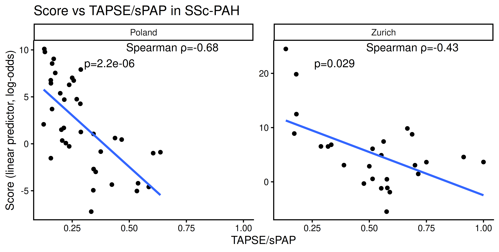
| Version | Author | Date |
|---|---|---|
| dc0c433 | GinoBonazza | 2026-05-06 |
ggsave(here::here(output_dir_figs, "corr_score_vs_TAPSEsPAP_SScPAH.png"),
p_score, width = 7.5, height = 3.8, dpi = 300)# prepare long data for plotting
df_long <- df_corr %>%
pivot_longer(cols = all_of(panel_prots), names_to = "Protein", values_to = "NPX") %>%
left_join(
corr_tbl %>% filter(Feature %in% panel_prots) %>%
rename(Protein = Feature) %>%
dplyr::select(Cohort, Protein, rho, p, p_adj),
by = c("Cohort", "Protein")
)
p_prot <- ggplot(df_long, aes(x = TAPSE_sPAP, y = NPX)) +
geom_point(size = 1.4, alpha = 0.8) +
geom_smooth(method = "lm", se = FALSE) +
facet_grid(Cohort ~ Protein, scales = "free_y") +
labs(
x = "TAPSE/sPAP",
y = "Protein NPX",
title = "Individual proteins vs TAPSE/sPAP in SSc-PAH"
) +
theme_classic(base_size = 12) +
theme(
strip.text.x = element_text(size = 10),
strip.text.y = element_text(size = 10)
)
# annotate each facet with rho and FDR
ann_df <- df_long %>%
distinct(Cohort, Protein, rho, p_adj, p)
p_prot <- p_prot +
geom_text(
data = ann_df,
aes(x = -Inf, y = Inf,
label = paste0("ρ=", round(rho, 2), "\np=", signif(p, 2))),
hjust = -1, vjust = 1.1,
inherit.aes = FALSE,
size = 3
)
p_prot
| Version | Author | Date |
|---|---|---|
| dc0c433 | GinoBonazza | 2026-05-06 |
ggsave(here::here(output_dir_figs, "corr_proteins_vs_TAPSEsPAP_SScPAH_faceted.png"),
p_prot, width = 10.5, height = 7.5, dpi = 300)library(dplyr)
library(pROC)
panel_prots <- refit_pre$proteins
# Zurich SSc-PAH only
z_pah <- clin_z %>%
dplyr::filter(Group == "SSc-PAH") %>%
dplyr::filter(!is.na(TAPSE_sPAP)) %>%
dplyr::filter(Barcode %in% colnames(data_z))
# Outcome: 1 = low TAPSE/sPAP, 0 = preserved TAPSE/sPAP
y_z <- ifelse(z_pah$TAPSE_sPAP < 0.32, 1, 0)
# Protein matrix: proteins x samples
Zmat <- as.matrix(data_z[panel_prots, z_pah$Barcode, drop = FALSE])
# Zurich-within-cohort z-score per protein
mu_z <- rowMeans(Zmat, na.rm = TRUE)
sd_z <- apply(Zmat, 1, sd, na.rm = TRUE)
sd_z[sd_z == 0 | is.na(sd_z)] <- 1
Zz <- sweep(Zmat, 1, mu_z, "-")
Zz <- sweep(Zz, 1, sd_z, "/")
Zz[is.na(Zz)] <- 0
# Signed mean z-score
s <- sign_map[panel_prots]
Zsigned <- sweep(Zz, 1, s, "*")
score_withinZ <- colMeans(Zsigned, na.rm = TRUE)
# ROC / AUC with CI
roc_withinZ <- pROC::roc(
y_z,
as.numeric(score_withinZ),
quiet = TRUE,
ci = TRUE,
direction = "<"
)
auc_withinZ <- as.numeric(pROC::auc(roc_withinZ))
ci_auc_withinZ <- as.numeric(pROC::ci.auc(roc_withinZ))
# 95% ROC-curve confidence band
set.seed(1)
ci_se_withinZ <- pROC::ci.se(
roc_withinZ,
specificities = seq(0, 1, length.out = 101),
boot.n = 2000,
progress = "none"
)
plot(
roc_withinZ,
legacy.axes = TRUE,
identity = FALSE,
col = "black",
lwd = 2,
xlab = "1 - Specificity",
ylab = "Sensitivity",
main = paste0(
"Zurich within-cohort scaled signed score\n",
"Zurich AUC=", sprintf("%.2f", auc_withinZ)
)
)
plot(
ci_se_withinZ,
type = "shape",
col = adjustcolor("black", alpha.f = 0.15),
border = NA,
no.roc = TRUE,
add = TRUE,
legacy.axes = TRUE
)
plot(
roc_withinZ,
legacy.axes = TRUE,
identity = FALSE,
col = "black",
lwd = 2,
add = TRUE
)
legend(
"bottomright",
inset = 0.02,
legend = paste0(
"Zurich: AUC ", sprintf("%.2f", auc_withinZ),
" [", sprintf("%.2f", ci_auc_withinZ[1]), ", ",
sprintf("%.2f", ci_auc_withinZ[3]), "]"
),
col = "black",
lwd = 2,
bty = "n",
cex = 0.99,
seg.len = 2.3
)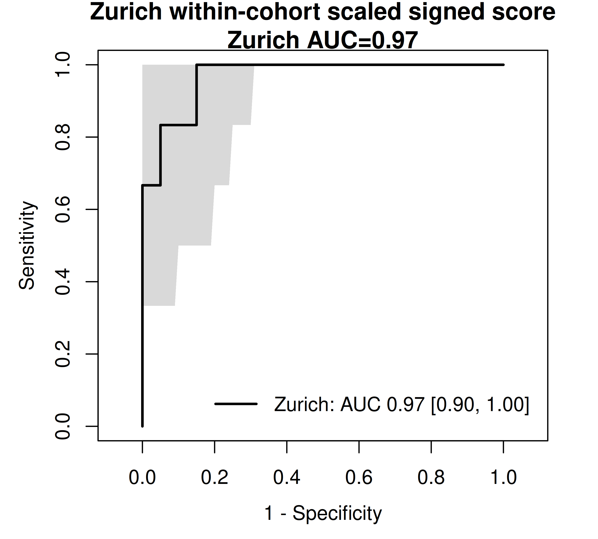
| Version | Author | Date |
|---|---|---|
| dc0c433 | GinoBonazza | 2026-05-06 |
# Save base R plot
png(
filename = here::here(output_dir_figs, "AUC_Zurich_withinCohortScaling_signedScore.png"),
width = 5,
height = 4.5,
units = "in",
res = 300
)
plot(
roc_withinZ,
legacy.axes = TRUE,
identity = FALSE,
col = "black",
lwd = 2,
xlab = "1 - Specificity",
ylab = "Sensitivity",
main = paste0(
"Zurich within-cohort scaled signed score\n",
"Zurich AUC=", sprintf("%.2f", auc_withinZ)
)
)
plot(
ci_se_withinZ,
type = "shape",
col = adjustcolor("black", alpha.f = 0.15),
border = NA,
no.roc = TRUE,
add = TRUE,
legacy.axes = TRUE
)
plot(
roc_withinZ,
legacy.axes = TRUE,
identity = FALSE,
col = "black",
lwd = 2,
add = TRUE
)
legend(
"bottomright",
inset = 0.02,
legend = paste0(
"Zurich: AUC ", sprintf("%.2f", auc_withinZ),
" [", sprintf("%.2f", ci_auc_withinZ[1]), ", ",
sprintf("%.2f", ci_auc_withinZ[3]), "]"
),
col = "black",
lwd = 2,
bty = "n",
cex = 0.99,
seg.len = 2.3
)
dev.off()png
2 COX regression
library(dplyr)
library(survival)
# -------------------------------
# 0) Choose which score to use
# -------------------------------
score_z <- pred_z %>%
dplyr::select(Barcode, eta = score_eta) # use linear predictor (recommended)
# -------------------------------
# 1) Robust survival column picker
# -------------------------------
pick_first_existing <- function(df, candidates) {
hit <- candidates[candidates %in% colnames(df)]
if (length(hit) == 0) return(NA_character_)
hit[1]
}
# Try to guess your column names (adjust here if needed)
time_col <- pick_first_existing(clin_z, c("DeathDAYS","death_days","FU_DAYS","followup_days","time_days","TimeDAYS","Time_days"))
event_col <- pick_first_existing(clin_z, c("Death","death","Death_event","event","Event","status","Status"))
# COMPERA numeric column (you mentioned COMPERA_number)
compera_col <- pick_first_existing(clin_z, c("COMPERA_number","COMPERA","COMPERA_num","COMPERA_score"))
cat("Using time_col =", time_col, "\n")Using time_col = DeathDAYS cat("Using event_col =", event_col, "\n")Using event_col = Death cat("Using compera_col =", compera_col, "\n")Using compera_col = COMPERA_number # If any are NA, set them manually like:
# time_col <- "DeathDAYS"
# event_col <- "Death"
# compera_col <- "COMPERA_number"
stopifnot(!is.na(time_col), !is.na(event_col), !is.na(compera_col))
# -------------------------------
# 2) Build Zurich SSc-PAH survival dataframe
# -------------------------------
df_surv_z <- clin_z %>%
filter(Group == "SSc-PAH") %>%
dplyr::select(Barcode, all_of(compera_col), all_of(time_col), all_of(event_col)) %>%
left_join(score_z, by = "Barcode") %>%
mutate(
# numeric COMPERA
COMPERA_number = as.numeric(.data[[compera_col]]),
# time in days
time_days = as.numeric(.data[[time_col]]),
# event coding: try to handle yes/no, TRUE/FALSE, 1/0
event_raw = .data[[event_col]],
event = case_when(
is.numeric(event_raw) ~ ifelse(event_raw > 0, 1, 0),
is.logical(event_raw) ~ ifelse(event_raw, 1, 0),
tolower(as.character(event_raw)) %in% c("yes","y","true","1","dead","death") ~ 1,
tolower(as.character(event_raw)) %in% c("no","n","false","0","alive") ~ 0,
TRUE ~ NA_real_
)
) %>%
filter(!is.na(time_days), !is.na(event), !is.na(COMPERA_number), !is.na(eta))
# quick check
df_surv_z %>% summarise(n=n(), events=sum(event), median_time=median(time_days))# A tibble: 1 × 3
n events median_time
<int> <dbl> <dbl>
1 25 8 1419table(df_surv_z$event)
0 1
17 8 Chunk 2 — Cox models + c-index table (+ LRT)
library(dplyr)
library(survival)
m0 <- coxph(Surv(time_days, event) ~ COMPERA_number, data = df_surv_z, x = TRUE)
m1 <- coxph(Surv(time_days, event) ~ eta, data = df_surv_z, x = TRUE)
m2 <- coxph(Surv(time_days, event) ~ COMPERA_number + eta, data = df_surv_z, x = TRUE)
c0 <- unname(summary(m0)$concordance[1])
c1 <- unname(summary(m1)$concordance[1])
c2 <- unname(summary(m2)$concordance[1])
cindex_tbl <- data.frame(
model = c("COMPERA", "Score", "COMPERA + score"),
c_index = c(c0, c1, c2)
)
cindex_tbl model c_index
1 COMPERA 0.7892562
2 Score 0.7685950
3 COMPERA + score 0.8512397# Likelihood ratio test: does adding score improve COMPERA?
lrt <- anova(m0, m2, test = "LRT")
lrtAnalysis of Deviance Table
Cox model: response is Surv(time_days, event)
Model 1: ~ COMPERA_number
Model 2: ~ COMPERA_number + eta
loglik Chisq Df Pr(>|Chi|)
1 -18.038
2 -16.178 3.7195 1 0.05378 .
---
Signif. codes: 0 '***' 0.001 '**' 0.01 '*' 0.05 '.' 0.1 ' ' 1This gives you exactly the table format you showed (just with “Score” instead of “LASSO score” — rename if you want).
Optional (recommended) — bootstrap CI for c-index difference (COMPERA vs COMPERA+score)
With small cohorts/events, c-index can be noisy. This gives you a quick sense of stability.
set.seed(1)
B <- 500
boot_delta <- replicate(B, {
idx <- sample(seq_len(nrow(df_surv_z)), replace = TRUE)
d <- df_surv_z[idx, , drop = FALSE]
# handle rare bootstrap samples with 0 events
if (length(unique(d$event)) < 2) return(NA_real_)
m0b <- coxph(Surv(time_days, event) ~ COMPERA_number, data = d)
m2b <- coxph(Surv(time_days, event) ~ COMPERA_number + eta, data = d)
c0b <- unname(summary(m0b)$concordance[1])
c2b <- unname(summary(m2b)$concordance[1])
c2b - c0b
})
boot_delta <- boot_delta[is.finite(boot_delta)]
quantile(boot_delta, c(0.025, 0.5, 0.975)) 2.5% 50% 97.5%
-0.01532813 0.05311117 0.21000000 mean(boot_delta)[1] 0.06417841Optional — model summary table (HRs)
If you want a quick HR table for the combined model:
library(broom)
tidy(m2, exponentiate = TRUE, conf.int = TRUE) %>%
dplyr::select(term, estimate, conf.low, conf.high, p.value)# A tibble: 2 × 5
term estimate conf.low conf.high p.value
<chr> <dbl> <dbl> <dbl> <dbl>
1 COMPERA_number 2.05 0.931 4.49 0.0748
2 eta 1.09 0.999 1.20 0.0538library(ggplot2)
df_bd <- data.frame(delta_c = boot_delta)
ggplot(df_bd, aes(x = delta_c)) +
geom_histogram(bins = 30) +
geom_vline(xintercept = 0, linetype = 2) +
labs(x = "Δ C-index (COMPERA+score − COMPERA)",
y = "Count",
title = "Bootstrap distribution of c-index improvement") +
theme_classic(base_size = 12)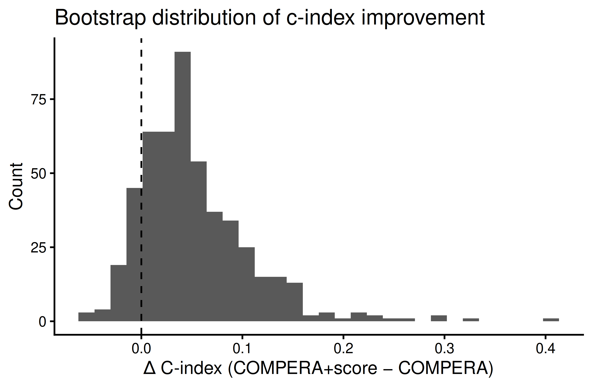
| Version | Author | Date |
|---|---|---|
| dc0c433 | GinoBonazza | 2026-05-06 |
cox.zph(m2) chisq df p
COMPERA_number 0.0382 1 0.84
eta 1.8971 1 0.17
GLOBAL 2.4555 2 0.29Suggested figures for COMPERA and mortality results
These chunks assume the objects from your final-part analysis already
exist, especially: - clin_z, pred_z,
df_surv_z - m0, m1,
m2, cindex_tbl -
output_dir_figs
1) Final score across COMPERA risk strata
This is probably the clearest figure for the COMPERA-related result. It shows whether the final score increases across clinical risk strata.
library(dplyr)
library(ggplot2)
score_by_compera <- clin_z %>%
dplyr::filter(Group == "SSc-PAH") %>%
dplyr::select(Barcode, COMPERA_4strata, COMPERA_number) %>%
dplyr::left_join(pred_z %>% dplyr::select(Barcode, score_eta), by = "Barcode") %>%
dplyr::mutate(
COMPERA_4strata = factor(
COMPERA_4strata,
levels = c("low", "intermediate-low", "intermediate-high", "high")
),
COMPERA_number = as.numeric(COMPERA_number)
) %>%
dplyr::filter(!is.na(COMPERA_4strata), !is.na(COMPERA_number), !is.na(score_eta))
p_kw <- kruskal.test(score_eta ~ COMPERA_4strata, data = score_by_compera)$p.value
rho <- suppressWarnings(cor.test(score_by_compera$COMPERA_number, score_by_compera$score_eta, method = "spearman"))
cols_compera <- c(
"low" = "#9CA3AF",
"intermediate-low" = "#DDB7B2",
"intermediate-high" = "#C7685F",
"high" = "#A63A2A"
)
ggplot(score_by_compera, aes(x = COMPERA_4strata, y = score_eta, fill = COMPERA_4strata)) +
geom_boxplot(alpha = 0.75, outlier.shape = NA) +
geom_jitter(width = 0.12, size = 2, alpha = 0.75) +
scale_fill_manual(values = cols_compera) +
annotate(
"text",
x = 1,
y = max(score_by_compera$score_eta, na.rm = TRUE),
hjust = 0,
vjust = 1.2,
size = 4,
label = paste0(
"Kruskal-Wallis p = ", signif(p_kw, 3),
"\nSpearman rho = ", round(unname(rho$estimate), 2),
", p = ", signif(rho$p.value, 3)
)
) +
labs(
title = "Final score across COMPERA risk strata",
x = "COMPERA risk stratum",
y = "Final score (linear predictor)"
) +
theme_classic(base_size = 12) +
theme(legend.position = "none")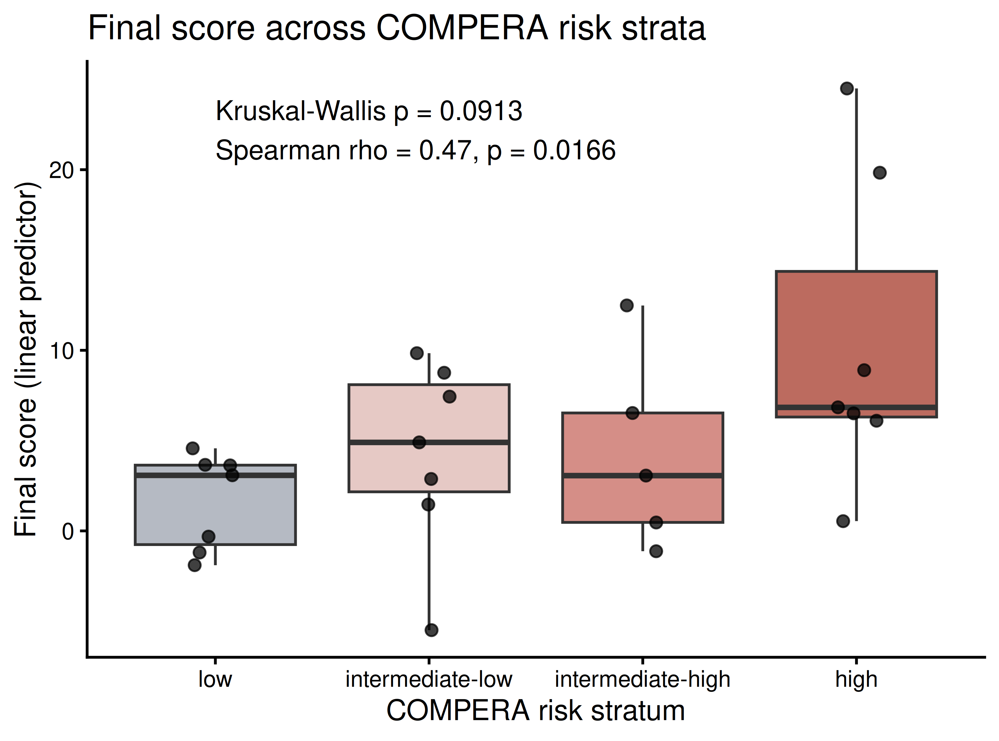
2) Trend plot across COMPERA strata
This is a nice companion to the boxplot if you want to emphasize monotonic increase.
library(dplyr)
library(ggplot2)
trend_df <- score_by_compera %>%
dplyr::group_by(COMPERA_number, COMPERA_4strata) %>%
dplyr::summarise(
mean_score = mean(score_eta, na.rm = TRUE),
se_score = sd(score_eta, na.rm = TRUE) / sqrt(dplyr::n()),
n = dplyr::n(),
.groups = "drop"
)
ggplot(trend_df, aes(x = COMPERA_number, y = mean_score)) +
geom_line(linewidth = 0.7) +
geom_point(size = 2.6) +
geom_errorbar(aes(ymin = mean_score - se_score, ymax = mean_score + se_score), width = 0.08) +
scale_x_continuous(breaks = trend_df$COMPERA_number, labels = trend_df$COMPERA_4strata) +
labs(
title = "Final score increases with COMPERA risk",
x = "COMPERA risk stratum",
y = "Mean final score ± SE"
) +
theme_classic(base_size = 12)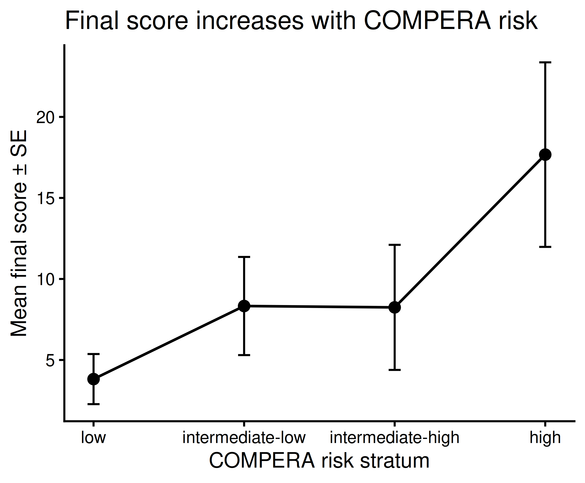
3) Forest plot for Cox regression results
Yes: for the mortality results, a forest plot is one of the best ways to show the Cox model output. This chunk shows HRs for: - COMPERA alone - score alone - combined model
library(dplyr)
library(ggplot2)
library(broom)
forest_df <- dplyr::bind_rows(
broom::tidy(m0, exponentiate = TRUE, conf.int = TRUE) %>% dplyr::mutate(model = "COMPERA only"),
broom::tidy(m1, exponentiate = TRUE, conf.int = TRUE) %>% dplyr::mutate(model = "Score only"),
broom::tidy(m2, exponentiate = TRUE, conf.int = TRUE) %>% dplyr::mutate(model = "COMPERA + score")
) %>%
dplyr::filter(term %in% c("COMPERA_number", "eta")) %>%
dplyr::mutate(
term_label = dplyr::case_when(
term == "COMPERA_number" & model == "COMPERA only" ~ "COMPERA",
term == "eta" & model == "Score only" ~ "Score",
term == "COMPERA_number" & model == "COMPERA + score" ~ "COMPERA (adjusted for score)",
term == "eta" & model == "COMPERA + score" ~ "Score (adjusted for COMPERA)",
TRUE ~ term
),
term_label = factor(
term_label,
levels = rev(c(
"Score (adjusted for COMPERA)",
"COMPERA (adjusted for score)",
"Score",
"COMPERA"
))
)
)
ggplot(forest_df, aes(x = estimate, y = term_label)) +
geom_vline(xintercept = 1, linetype = 2, color = "grey60") +
geom_errorbarh(aes(xmin = conf.low, xmax = conf.high), height = 0.18, linewidth = 0.6) +
geom_point(size = 2.5) +
scale_x_log10() +
labs(
title = "Cox regression for mortality",
x = "Hazard ratio (log scale)",
y = NULL
) +
theme_classic(base_size = 12)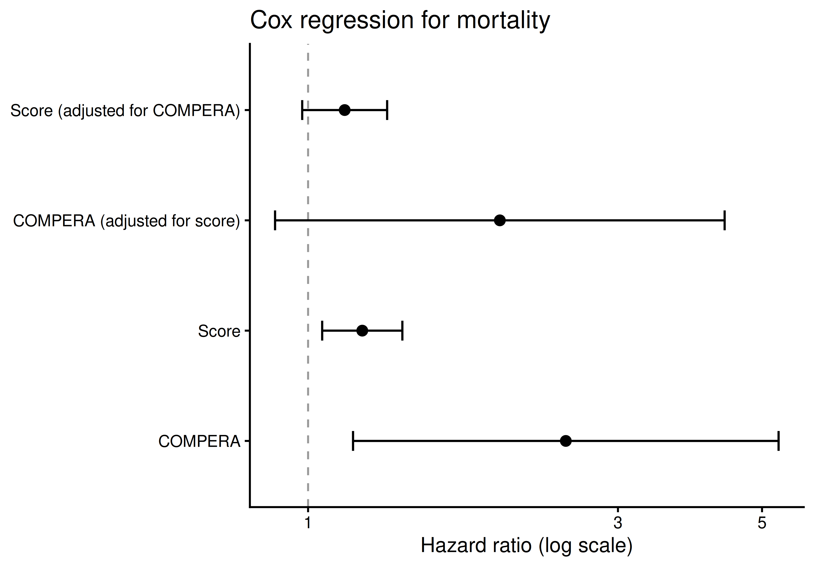
4) Kaplan-Meier plot by final score group
This is the other figure I would definitely include for mortality. Use a median split to avoid overfitting and to keep the figure simple.
library(dplyr)
library(survival)
km_df <- df_surv_z %>%
dplyr::mutate(
score_group = ifelse(eta >= median(eta, na.rm = TRUE), "High score", "Low score"),
score_group = factor(score_group, levels = c("Low score", "High score"))
)
fit_km <- survival::survfit(Surv(time_days, event) ~ score_group, data = km_df)
logrank_p <- 1 - pchisq(survival::survdiff(Surv(time_days, event) ~ score_group, data = km_df)$chisq, df = 1)
plot(
fit_km,
col = c("#004C8C", "#A63A2A"),
lwd = 2,
xlab = "Follow-up (days)",
ylab = "Survival probability",
main = "Kaplan-Meier survival by final score"
)
legend(
"bottomleft",
legend = c(
paste0("Low score (n=", sum(km_df$score_group == "Low score"), ")"),
paste0("High score (n=", sum(km_df$score_group == "High score"), ")")
),
col = c("#004C8C", "#A63A2A"),
lwd = 2,
bty = "n"
)
mtext(paste0("Log-rank p = ", signif(logrank_p, 3)), side = 3, adj = 1, line = 0.2, cex = 0.9)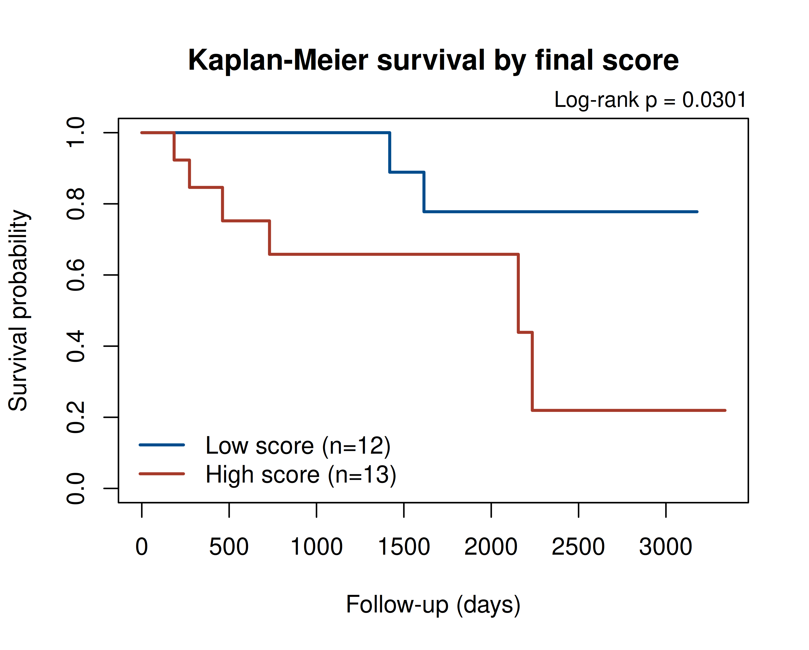
5) C-index comparison plot
This is better than leaving the c-index only as a printed table.
library(ggplot2)
cindex_tbl$model <- factor(cindex_tbl$model, levels = c("COMPERA", "Score", "COMPERA + score"))
ggplot(cindex_tbl, aes(x = c_index, y = model)) +
geom_point(size = 3) +
geom_text(aes(label = sprintf("%.2f", c_index)), nudge_x = 0.015, size = 4) +
xlim(0.5, 1.0) +
labs(
title = "Model discrimination",
x = "C-index",
y = NULL
) +
theme_classic(base_size = 12)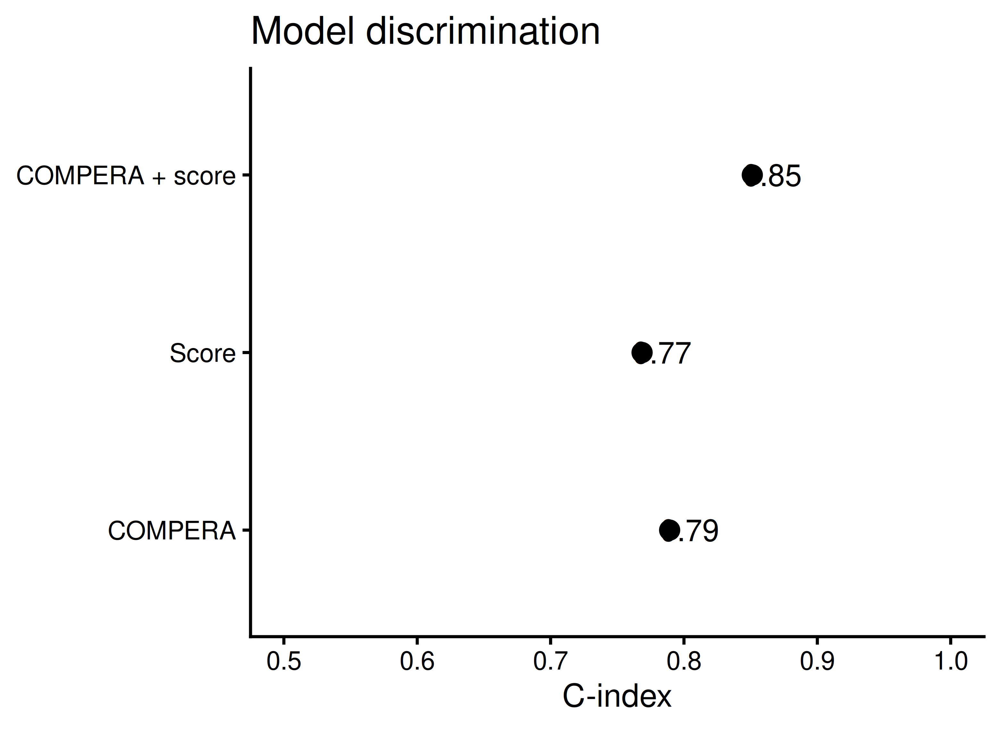
6) Optional: bootstrap distribution of C-index improvement
This is useful if you want to support the claim that adding the score improves prediction over COMPERA.
library(ggplot2)
df_bd <- data.frame(delta_c = boot_delta)
df_bd <- df_bd[is.finite(df_bd$delta_c), , drop = FALSE]
ggplot(df_bd, aes(x = delta_c)) +
geom_histogram(bins = 30) +
geom_vline(xintercept = 0, linetype = 2) +
labs(
title = "Bootstrap distribution of C-index improvement",
x = expression(Delta*" C-index (COMPERA + score minus COMPERA)"),
y = "Count"
) +
theme_classic(base_size = 12)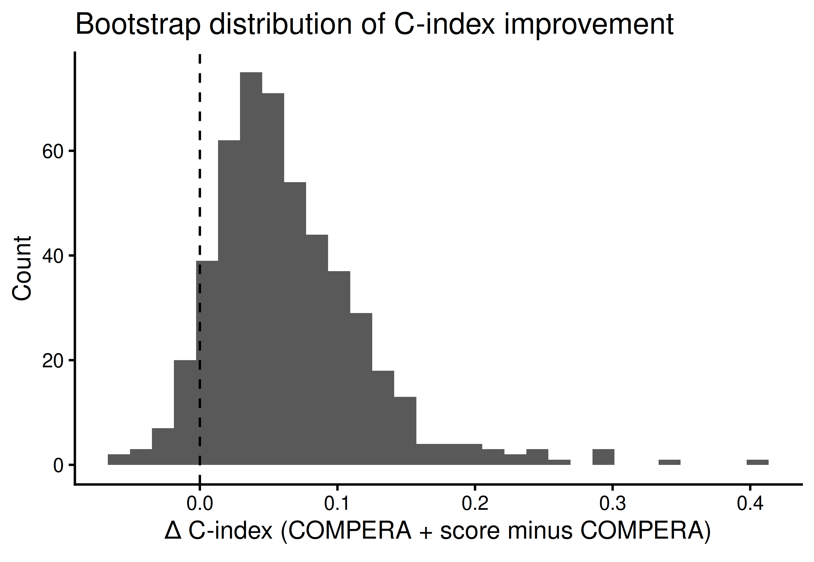
7) Optional: save the important figures
ggsave(here::here(output_dir_figs, "Score_by_COMPERA_boxplot.png"), width = 5.8, height = 4.3, dpi = 300)
ggsave(here::here(output_dir_figs, "Score_by_COMPERA_trend.png"), width = 4.6, height = 3.8, dpi = 300)
ggsave(here::here(output_dir_figs, "Cox_forest_plot.png"), width = 6.6, height = 4.6, dpi = 300)
ggsave(here::here(output_dir_figs, "Cindex_dotplot.png"), width = 5.2, height = 3.8, dpi = 300)
ggsave(here::here(output_dir_figs, "Delta_Cindex_bootstrap.png"), width = 5.5, height = 3.8, dpi = 300)
png(here::here(output_dir_figs, "KM_by_score_group.png"), width = 5.6, height = 4.5, units = "in", res = 300)
plot(
fit_km,
col = c("#004C8C", "#A63A2A"),
lwd = 2,
xlab = "Follow-up (days)",
ylab = "Survival probability",
main = "Kaplan-Meier survival by final score"
)
legend(
"bottomleft",
legend = c(
paste0("Low score (n=", sum(km_df$score_group == "Low score"), ")"),
paste0("High score (n=", sum(km_df$score_group == "High score"), ")")
),
col = c("#004C8C", "#A63A2A"),
lwd = 2,
bty = "n"
)
mtext(paste0("Log-rank p = ", signif(logrank_p, 3)), side = 3, adj = 1, line = 0.2, cex = 0.9)
dev.off()Additional figures: Poland COMPERA score and cohort severity comparison
These chunks assume that the main analysis has already been run and
that the following objects already exist: - clin_z,
clin_p - pred_z, pred_p -
output_dir_figs
They add: 1. Final score across COMPERA strata in the Poland cohort 2. Final score across COMPERA strata in both cohorts (optional combined figure) 3. TAPSE/sPAP comparison between Zurich and Poland in SSc-PAH patients 4. COMPERA group counts in the two cohorts shown as side-by-side barplots
library(dplyr)
library(ggplot2)
library(patchwork)
standardize_compera <- function(x) {
x <- as.character(x)
x <- trimws(tolower(x))
dplyr::case_when(
x %in% c("low") ~ "low",
x %in% c("intermediate-low", "intermediate low", "intermediate_low") ~ "intermediate-low",
x %in% c("intermediate-high", "intermediate high", "intermediate_high") ~ "intermediate-high",
x %in% c("high") ~ "high",
TRUE ~ NA_character_
)
}
compera_levels <- c("low", "intermediate-low", "intermediate-high", "high")
compera_labels <- c("low", "intermediate-low", "intermediate-high", "high")
compera_cols <- c(
"low" = "#9CA3AF",
"intermediate-low" = "#DDB7B2",
"intermediate-high" = "#C7685F",
"high" = "#A63A2A"
)
cohort_cols <- c("Zurich" = "#004C8C", "Poland" = "#A63A2A")1) Poland cohort: final score across COMPERA strata
score_poland_compera <- clin_p %>%
dplyr::filter(Group == "SSc-PAH") %>%
dplyr::select(Barcode, Compera_4strata, Compera_number) %>%
dplyr::left_join(pred_p %>% dplyr::select(Barcode, score_eta), by = "Barcode") %>%
dplyr::mutate(
COMPERA = standardize_compera(Compera_4strata),
COMPERA = factor(COMPERA, levels = compera_levels),
Compera_number = as.numeric(Compera_number)
) %>%
dplyr::filter(!is.na(COMPERA), !is.na(Compera_number), !is.na(score_eta))
p_kw_pol <- kruskal.test(score_eta ~ COMPERA, data = score_poland_compera)$p.value
rho_pol <- suppressWarnings(cor.test(score_poland_compera$Compera_number,
score_poland_compera$score_eta,
method = "spearman"))
ggplot(score_poland_compera, aes(x = COMPERA, y = score_eta, fill = COMPERA)) +
geom_boxplot(alpha = 0.75, outlier.shape = NA) +
geom_jitter(width = 0.12, size = 2, alpha = 0.75) +
scale_fill_manual(values = compera_cols, drop = FALSE) +
annotate(
"text",
x = 1,
y = max(score_poland_compera$score_eta, na.rm = TRUE),
hjust = 0,
vjust = 1.2,
size = 4,
label = paste0(
"Kruskal-Wallis p = ", signif(p_kw_pol, 3),
"\nSpearman rho = ", round(unname(rho_pol$estimate), 2),
", p = ", signif(rho_pol$p.value, 3)
)
) +
labs(
title = "Poland cohort: final score across COMPERA risk strata",
x = "COMPERA risk stratum",
y = "Final score (linear predictor)"
) +
theme_classic(base_size = 12) +
theme(legend.position = "none")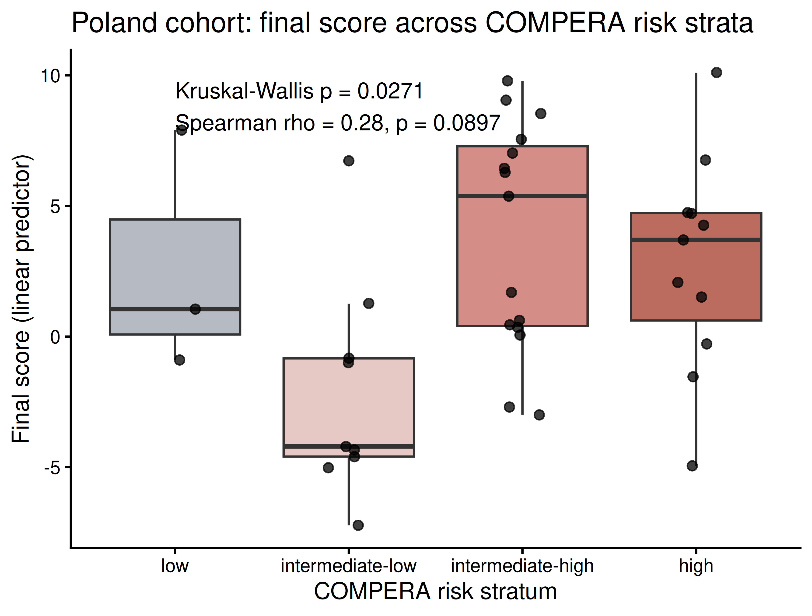
2) Optional combined figure: final score across COMPERA strata in both cohorts
score_zurich_compera <- clin_z %>%
dplyr::filter(Group == "SSc-PAH") %>%
dplyr::select(Barcode, COMPERA_4strata, COMPERA_number) %>%
dplyr::left_join(pred_z %>% dplyr::select(Barcode, score_eta), by = "Barcode") %>%
dplyr::mutate(
COMPERA = standardize_compera(COMPERA_4strata),
COMPERA = factor(COMPERA, levels = compera_levels),
COMPERA_number = as.numeric(COMPERA_number),
Cohort = "Zurich"
) %>%
dplyr::filter(!is.na(COMPERA), !is.na(COMPERA_number), !is.na(score_eta))
score_poland_compera2 <- clin_p %>%
dplyr::filter(Group == "SSc-PAH") %>%
dplyr::select(Barcode, Compera_4strata, Compera_number) %>%
dplyr::left_join(pred_p %>% dplyr::select(Barcode, score_eta), by = "Barcode") %>%
dplyr::mutate(
COMPERA = standardize_compera(Compera_4strata),
COMPERA = factor(COMPERA, levels = compera_levels),
Compera_number = as.numeric(Compera_number),
Cohort = "Poland"
) %>%
dplyr::rename(COMPERA_number = Compera_number) %>%
dplyr::filter(!is.na(COMPERA), !is.na(COMPERA_number), !is.na(score_eta))
score_both_compera <- dplyr::bind_rows(score_zurich_compera, score_poland_compera2)
ggplot(score_both_compera, aes(x = COMPERA, y = score_eta, fill = COMPERA)) +
geom_boxplot(alpha = 0.75, outlier.shape = NA) +
geom_jitter(width = 0.12, size = 1.8, alpha = 0.75) +
facet_wrap(~Cohort) +
scale_fill_manual(values = compera_cols, drop = FALSE) +
labs(
title = "Final score across COMPERA risk strata",
x = "COMPERA risk stratum",
y = "Final score (linear predictor)"
) +
theme_classic(base_size = 12) +
theme(legend.position = "none")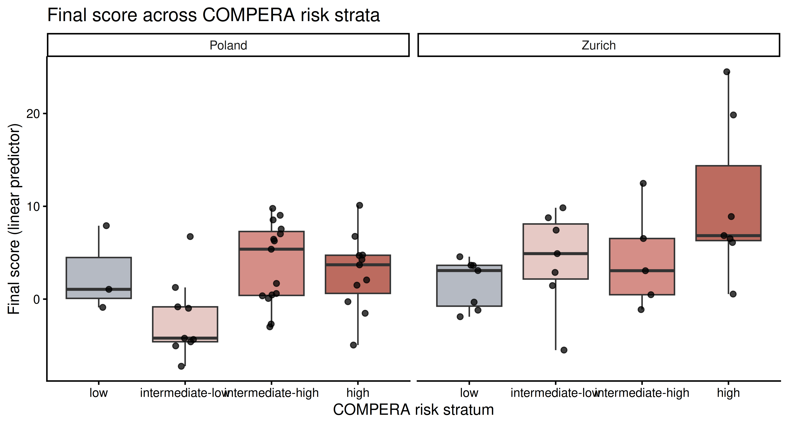
3) TAPSE/sPAP comparison between cohorts in SSc-PAH patients
tapse_spap_compare <- dplyr::bind_rows(
clin_z %>%
dplyr::filter(Group == "SSc-PAH") %>%
dplyr::transmute(
Barcode,
TAPSE_sPAP = as.numeric(TAPSE_sPAP),
Cohort = "Zurich"
),
clin_p %>%
dplyr::filter(Group == "SSc-PAH") %>%
dplyr::transmute(
Barcode,
TAPSE_sPAP = as.numeric(TAPSE_sPAP),
Cohort = "Poland"
)
) %>%
dplyr::filter(!is.na(TAPSE_sPAP))
p_tapse <- wilcox.test(TAPSE_sPAP ~ Cohort, data = tapse_spap_compare)$p.value
ggplot(tapse_spap_compare, aes(x = Cohort, y = TAPSE_sPAP, fill = Cohort)) +
geom_hline(yintercept = 0.32, linetype = 2, color = "black", linewidth = 0.6) +
geom_boxplot(alpha = 0.75, outlier.shape = NA) +
geom_jitter(width = 0.12, size = 2, alpha = 0.75) +
scale_fill_manual(values = cohort_cols) +
annotate(
"text",
x = 1.5,
y = max(tapse_spap_compare$TAPSE_sPAP, na.rm = TRUE),
label = paste0("Wilcoxon p = ", signif(p_tapse, 3)),
vjust = 1.2,
size = 4
) +
labs(
title = "TAPSE/sPAP in SSc-PAH patients",
x = NULL,
y = "TAPSE/sPAP"
) +
theme_classic(base_size = 12) +
theme(legend.position = "none")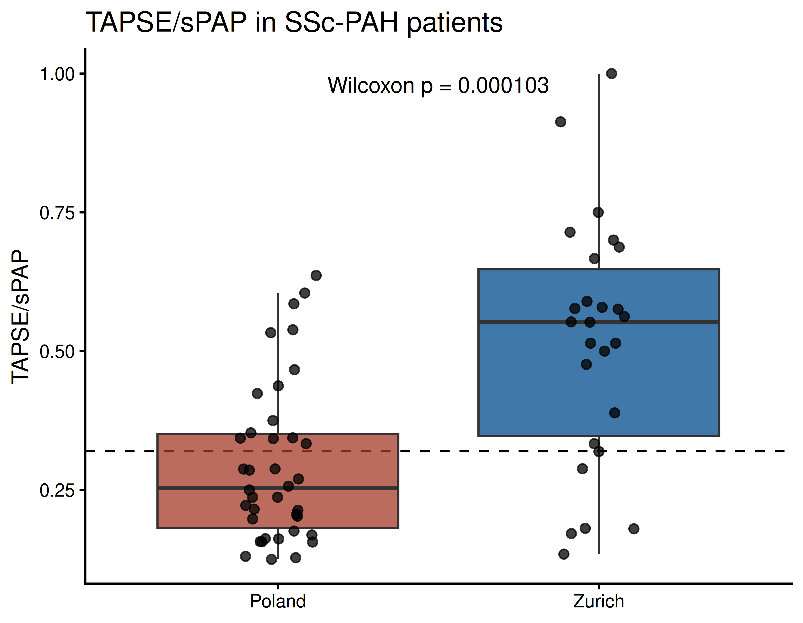
4) COMPERA group distribution by cohort (counts)
This gives two barplots next to each other, one for Zurich and one for Poland, with patient counts per risk group.
compera_counts <- dplyr::bind_rows(
clin_z %>%
dplyr::filter(Group == "SSc-PAH") %>%
dplyr::transmute(
Cohort = "Zurich",
COMPERA = standardize_compera(COMPERA_4strata)
),
clin_p %>%
dplyr::filter(Group == "SSc-PAH") %>%
dplyr::transmute(
Cohort = "Poland",
COMPERA = standardize_compera(Compera_4strata)
)
) %>%
dplyr::filter(!is.na(COMPERA)) %>%
dplyr::mutate(COMPERA = factor(COMPERA, levels = compera_levels)) %>%
dplyr::count(Cohort, COMPERA, .drop = FALSE)
ggplot(compera_counts, aes(x = COMPERA, y = n, fill = COMPERA)) +
geom_col(width = 0.8) +
geom_text(aes(label = n), vjust = -0.25, size = 4) +
facet_wrap(~Cohort, nrow = 1) +
scale_fill_manual(values = compera_cols, drop = FALSE) +
labs(
title = "COMPERA risk-group distribution in SSc-PAH patients",
x = "COMPERA risk stratum",
y = "Number of patients"
) +
theme_classic(base_size = 12) +
theme(
legend.position = "none",
axis.text.x = element_text(angle = 30, hjust = 1, vjust = 1)
)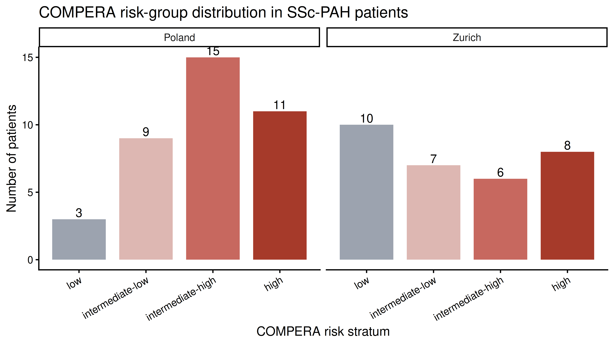
5) Optional: percentages instead of counts
If you also want a cleaner comparison independent of cohort size, this percentage version can be useful in supplement.
compera_props <- compera_counts %>%
dplyr::group_by(Cohort) %>%
dplyr::mutate(prop = n / sum(n)) %>%
dplyr::ungroup()
ggplot(compera_props, aes(x = COMPERA, y = prop, fill = COMPERA)) +
geom_col(width = 0.8) +
geom_text(aes(label = scales::percent(prop, accuracy = 1)), vjust = -0.25, size = 4) +
facet_wrap(~Cohort, nrow = 1) +
scale_fill_manual(values = compera_cols, drop = FALSE) +
scale_y_continuous(labels = scales::percent_format(accuracy = 1), limits = c(0, 1.05)) +
labs(
title = "COMPERA risk-group proportions in SSc-PAH patients",
x = "COMPERA risk stratum",
y = "Proportion of patients"
) +
theme_classic(base_size = 12) +
theme(legend.position = "none")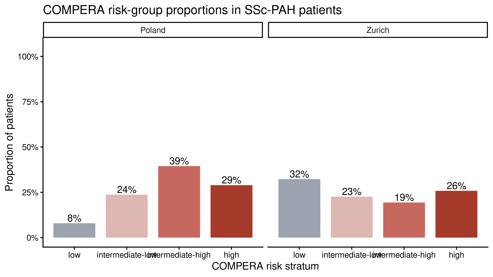
6) Optional save commands
ggsave(here::here(output_dir_figs, "Poland_score_by_COMPERA.png"), width = 5.8, height = 4.4, dpi = 300)
ggsave(here::here(output_dir_figs, "Both_cohorts_score_by_COMPERA.png"), width = 8.5, height = 4.6, dpi = 300)
ggsave(here::here(output_dir_figs, "TAPSE_sPAP_by_cohort_PAH.png"), width = 5.8, height = 4.5, dpi = 300)
ggsave(here::here(output_dir_figs, "COMPERA_counts_by_cohort.png"), width = 8, height = 4.5, dpi = 300)
ggsave(here::here(output_dir_figs, "COMPERA_percent_by_cohort.png"), width = 8, height = 4.5, dpi = 300)library(dplyr)
library(ggplot2)
death_col_p <- "Death (no/yes; 0/1)"
score_poland_death <- clin_p %>%
dplyr::filter(Group == "SSc-PAH") %>%
dplyr::select(Barcode, all_of(death_col_p)) %>%
dplyr::left_join(pred_p %>% dplyr::select(Barcode, score_eta), by = "Barcode") %>%
dplyr::mutate(
death = as.numeric(.data[[death_col_p]]),
death_status = dplyr::case_when(
death == 0 ~ "No",
death == 1 ~ "Yes",
TRUE ~ NA_character_
),
death_status = factor(death_status, levels = c("No", "Yes"))
) %>%
dplyr::filter(!is.na(death_status), !is.na(score_eta))
score_poland_death %>%
dplyr::count(death_status)# A tibble: 2 × 2
death_status n
<fct> <int>
1 No 29
2 Yes 6p_death_pol <- wilcox.test(score_eta ~ death_status, data = score_poland_death)$p.value
ggplot(score_poland_death, aes(x = death_status, y = score_eta, fill = death_status)) +
geom_boxplot(alpha = 0.75, outlier.shape = NA) +
geom_jitter(width = 0.12, size = 2, alpha = 0.75) +
scale_fill_manual(values = c("No" = "grey75", "Yes" = "#A63A2A")) +
annotate(
"text",
x = 1.5,
y = max(score_poland_death$score_eta, na.rm = TRUE),
label = paste0("Wilcoxon p = ", signif(p_death_pol, 3)),
vjust = 1.2,
size = 4
) +
labs(
title = "Poland cohort: final score by death status",
subtitle = "SSc-PAH patients only",
x = "Death",
y = "Final score (linear predictor)"
) +
theme_classic(base_size = 12) +
theme(legend.position = "none")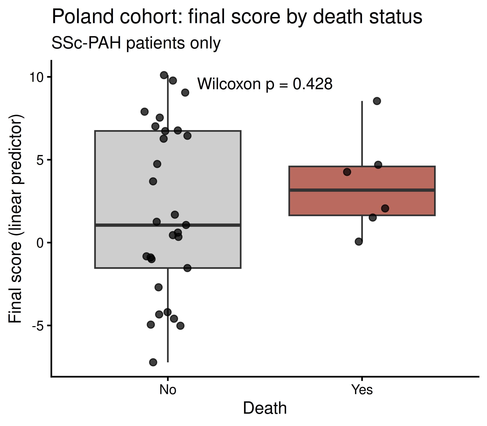
sessionInfo()R version 4.5.2 (2025-10-31)
Platform: x86_64-pc-linux-gnu
Running under: Ubuntu 24.04.3 LTS
Matrix products: default
BLAS: /usr/lib/x86_64-linux-gnu/openblas-pthread/libblas.so.3
LAPACK: /usr/lib/x86_64-linux-gnu/openblas-pthread/libopenblasp-r0.3.26.so; LAPACK version 3.12.0
locale:
[1] LC_CTYPE=en_US.UTF-8 LC_NUMERIC=C
[3] LC_TIME=en_US.UTF-8 LC_COLLATE=en_US.UTF-8
[5] LC_MONETARY=en_US.UTF-8 LC_MESSAGES=en_US.UTF-8
[7] LC_PAPER=en_US.UTF-8 LC_NAME=C
[9] LC_ADDRESS=C LC_TELEPHONE=C
[11] LC_MEASUREMENT=en_US.UTF-8 LC_IDENTIFICATION=C
time zone: Etc/UTC
tzcode source: system (glibc)
attached base packages:
[1] grid stats4 stats graphics grDevices datasets utils
[8] methods base
other attached packages:
[1] pROC_1.19.0.1 glmnet_4.1-10
[3] variancePartition_1.40.1 BiocParallel_1.44.0
[5] circlize_0.4.16 broom_1.0.11
[7] survival_3.8-3 ComplexHeatmap_2.26.0
[9] ReactomePA_1.54.0 AnnotationHub_4.0.0
[11] BiocFileCache_3.0.0 dbplyr_2.5.1
[13] org.Hs.eg.db_3.22.0 AnnotationDbi_1.72.0
[15] clusterProfiler_4.18.2 gprofiler2_0.2.4
[17] DESeq2_1.50.2 ggpubr_0.6.2
[19] igraph_2.2.1 limma_3.66.0
[21] UpSetR_1.4.0 reactable_0.4.5
[23] rtracklayer_1.70.0 qs2_0.1.7
[25] statmod_1.5.1 patchwork_1.3.2
[27] scater_1.38.0 scuttle_1.20.0
[29] SingleCellExperiment_1.32.0 SummarizedExperiment_1.40.0
[31] Biobase_2.70.0 GenomicRanges_1.62.0
[33] Seqinfo_1.0.0 IRanges_2.44.0
[35] MatrixGenerics_1.22.0 matrixStats_1.5.0
[37] Matrix.utils_0.9.7 RColorBrewer_1.1-3
[39] scales_1.4.0 gridExtra_2.3
[41] png_0.1-8 pheatmap_1.0.13
[43] S4Vectors_0.48.0 BiocGenerics_0.56.0
[45] generics_0.1.4 reshape2_1.4.5
[47] lubridate_1.9.4 forcats_1.0.1
[49] stringr_1.6.0 purrr_1.2.0
[51] tidyr_1.3.1 tibble_3.3.0
[53] tidyverse_2.0.0 magrittr_2.0.4
[55] dplyr_1.1.4 Matrix_1.6-5
[57] readxl_1.4.5 readr_2.1.6
[59] enrichplot_1.30.4 here_1.0.2
[61] EnhancedVolcano_1.29.1 ggrepel_0.9.6
[63] ggplot2_4.0.1
loaded via a namespace (and not attached):
[1] R.methodsS3_1.8.2 Biostrings_2.78.0 vctrs_0.6.5
[4] ggtangle_0.0.9 digest_0.6.39 corpcor_1.6.10
[7] shape_1.4.6.1 git2r_0.36.2 renv_1.1.5
[10] MASS_7.3-65 fontLiberation_0.1.0 httpuv_1.6.16
[13] foreach_1.5.2 qvalue_2.42.0 withr_3.0.2
[16] xfun_0.56 ggfun_0.2.0 memoise_2.0.1
[19] ggbeeswarm_0.7.3 gson_0.1.0 systemfonts_1.3.1
[22] ragg_1.5.0 tidytree_0.4.6 GlobalOptions_0.1.3
[25] gtools_3.9.5 R.oo_1.27.1 Formula_1.2-5
[28] KEGGREST_1.50.0 promises_1.5.0 otel_0.2.0
[31] httr_1.4.7 rstatix_0.7.3 restfulr_0.0.16
[34] stringfish_0.18.0 rstudioapi_0.17.1 DOSE_4.4.0
[37] reactome.db_1.94.0 curl_7.0.0 ScaledMatrix_1.18.0
[40] ggraph_2.2.2 polyclip_1.10-7 SparseArray_1.10.4
[43] doParallel_1.0.17 evaluate_1.0.5 S4Arrays_1.10.1
[46] hms_1.1.4 irlba_2.3.5.1 colorspace_2.1-2
[49] filelock_1.0.3 later_1.4.4 viridis_0.6.5
[52] ggtree_4.0.1 lattice_0.22-7 XML_3.99-0.20
[55] cowplot_1.2.0 pillar_1.11.1 nlme_3.1-168
[58] iterators_1.0.14 caTools_1.18.3 compiler_4.5.2
[61] beachmat_2.26.0 stringi_1.8.7 minqa_1.2.8
[64] GenomicAlignments_1.46.0 plyr_1.8.9 crayon_1.5.3
[67] abind_1.4-8 BiocIO_1.20.0 gridGraphics_0.5-1
[70] locfit_1.5-9.12 graphlayouts_1.2.2 bit_4.6.0
[73] fastmatch_1.1-6 whisker_0.4.1 textshaping_1.0.4
[76] codetools_0.2-20 BiocSingular_1.26.1 bslib_0.9.0
[79] GetoptLong_1.1.0 plotly_4.11.0 remaCor_0.0.20
[82] splines_4.5.2 Rcpp_1.1.0 tidydr_0.0.6
[85] cellranger_1.1.0 utf8_1.2.6 grr_0.9.5
[88] knitr_1.50 blob_1.2.4 clue_0.3-66
[91] BiocVersion_3.22.0 lme4_1.1-38 fs_1.6.6
[94] Rdpack_2.6.4 ggsignif_0.6.4 ggplotify_0.1.3
[97] tzdb_0.5.0 fANCOVA_0.6-1 tweenr_2.0.3
[100] pkgconfig_2.0.3 tools_4.5.2 cachem_1.1.0
[103] RhpcBLASctl_0.23-42 rbibutils_2.4 cigarillo_1.0.0
[106] RSQLite_2.4.5 viridisLite_0.4.2 DBI_1.2.3
[109] numDeriv_2016.8-1.1 graphite_1.56.0 fastmap_1.2.0
[112] rmarkdown_2.30 Rsamtools_2.26.0 sass_0.4.10
[115] BiocManager_1.30.27 graph_1.88.0 carData_3.0-5
[118] farver_2.1.2 reformulas_0.4.2 mgcv_1.9-3
[121] aod_1.3.3 tidygraph_1.3.1 scatterpie_0.2.6
[124] yaml_2.3.11 workflowr_1.7.2 cli_3.6.5
[127] lifecycle_1.0.4 mvtnorm_1.3-3 backports_1.5.0
[130] timechange_0.3.0 gtable_0.3.6 rjson_0.2.23
[133] parallel_4.5.2 ape_5.8-1 jsonlite_2.0.0
[136] bitops_1.0-9 bit64_4.6.0-1 yulab.utils_0.2.2
[139] BiocNeighbors_2.4.0 RcppParallel_5.1.11-1 jquerylib_0.1.4
[142] GOSemSim_2.36.0 R.utils_2.13.0 pbkrtest_0.5.5
[145] lazyeval_0.2.2 htmltools_0.5.9 GO.db_3.22.0
[148] rappdirs_0.3.3 glue_1.8.0 httr2_1.2.1
[151] XVector_0.50.0 gdtools_0.4.4 RCurl_1.98-1.17
[154] rprojroot_2.1.1 treeio_1.34.0 EnvStats_3.1.0
[157] boot_1.3-32 R6_2.6.1 ggiraph_0.9.2
[160] gplots_3.3.0 labeling_0.4.3 cluster_2.1.8.1
[163] aplot_0.2.9 nloptr_2.2.1 DelayedArray_0.36.0
[166] tidyselect_1.2.1 vipor_0.4.7 ggforce_0.5.0
[169] fontBitstreamVera_0.1.1 car_3.1-3 rsvd_1.0.5
[172] KernSmooth_2.23-26 S7_0.2.1 fontquiver_0.2.1
[175] data.table_1.17.8 htmlwidgets_1.6.4 fgsea_1.36.0
[178] rlang_1.1.6 lmerTest_3.2-0 Cairo_1.7-0
[181] ggnewscale_0.5.2 beeswarm_0.4.0